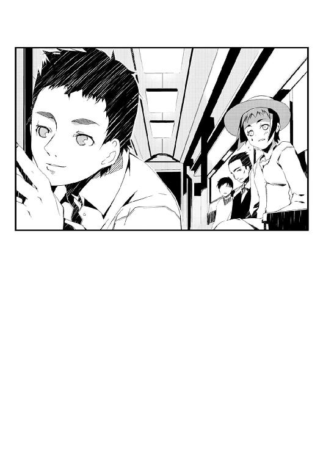

| ムシウタ ｂｕｇ ５ｔｈ．夢まどろむ迷子 | |
| 岩井恭平 | |
| KADOKAWA / 角川書店 (2014) | |
ムシウタｂｕｇ
５ｔｈ．夢まどろむ迷子
岩井恭平
角川スニーカー文庫
本作品の全部または一部を無断で複製、転載、配信、送信したり、ホームページ上に転載することを禁止します。また、本作品の内容を無断で改変、改ざん等を行うことも禁止します。
本作品購入時にご承諾いただいた規約により、有償・無償にかかわらず本作品を第三者に譲渡することはできません。
本作品を示すサムネイルなどのイメージ画像は、再ダウンロード時に予告なく変更される場合があります。
本作品は縦書きでレイアウトされています。
また、ご覧になるリーディングシステムにより、表示の差が認められることがあります。
ファーストフード店の二階からは、大通りを歩く通行人の顔が見てとれた。
その光景に重なって、窓の表面に自分の顔が映っていた。
黒い瞳はぼんやりと眠たげで、口にはストローをくわえたままだ。長い髪を後頭部で一つにしばった髪形は、何年も前から変わらない。今日は春の陽気が強いせいで、ホルス聖城学園中等部の制服は第二ボタンまで開いている。
中等部三年生に進級したばかりの一之黒亜梨子は、四人掛けのテーブルに一人で座っていた。何をするでもなく、ぼんやりと日常の時の流れに身を任せる。
窓の外に、小さな影が舞い降りた。
銀色の翅を羽ばたかせたモルフォチョウだ。だが実在のそれとは異なり触角が四本もある上に、躰そのものが銀光を放っている。
──〝虫〟。
思春期の少年少女に取り憑き、こうなりたいという夢や希望を喰らう超常の存在。十年近くも前から人々の間で囁かれている化け物の中には、こんなにも綺麗な姿をしているものもあるということを知る人間は少ない。
否、〝虫〟という存在そのものが、この国ではあやふやなものでしかないのだ。常に噂になりつつも、決して明るみには出ない。政府の公式見解では〝いないもの〟とされているため、実在することを知る者は数少ないのである。だが疑心暗鬼になった一般市民によって、〝虫〟に取り憑かれた人々──虫憑きは差別と恐怖の対象として見られている。
銀色のモルフォチョウは、他の誰でもない亜梨子に取り憑いた〝虫〟だ。
だが本来は、彼女自身の〝虫〟ではなかった。病で他界した親友、花城摩理という虫憑きの少女から受け継いだのである。亜梨子本人の意思とは関係なく、だ。
虫憑きは、実在する。
今、亜梨子が見ている平和な光景の中にも、虫憑きが紛れ込んでいるのかもしれない。
一枚の窓ガラスを隔て、亜梨子の前を平凡な人々が通り過ぎていく。
自分は果たして、〝どちら側〟の人間なのだろうか？
親友の〝虫〟を受け継いだ虫憑きなのか。
それとも虫憑きと関わってしまっただけの、ただの一般人なのか。
最近、そんなことをよく考える──。
「すたすた」
亜梨子の背後から、無感情な声が聞こえた。
「キョロキョロ。発見」と呟く声に続き、再び「すたすた」という声が近づいてくる。
「ガタン。着地」
ドリンクの載ったトレイをテーブルに置き、一人の少女が向かいの席に腰を下ろした。
前髪を切り揃え、左右で長さの違う髪形が特徴的な女の子だ。左目の下に貼った無数の星形のシールが照明を反射して輝いている。以前に会った時のような白黒の私服ではなく、今日は亜梨子とは違う学校の制服姿だ。
「ニヤリ。おひさしぶりです、〝槍型〟さん。──それに〝霞王〟さんも」
星のシールを貼った少女が、チラリと別のテーブルを見た。そこには山のように積んだハンバーガーを脇目もふらずに貪り食う、金髪の少女が座っていた。
金髪の少女も、ピタリと動きを止めた。こちらを振り向き、それまでとはうって変わって上品な笑顔を作る。
「食事の邪魔をしないでクダサイ。ぶっ殺しマスヨ？」
イントネーションのズレた日本語で言い放ち、再びハンバーガーをつかむ〝霞王〟。
亜梨子は頰を引きつらせ、二人を見る。
「人がシリアスな物思いにふけってる空気を、見事なまでにぶち壊してくれるわね......」
「ニヤリ。あなたに気を遣うつもりなんてありません。──〝霞王〟を買収してまで、私を個人的に呼び出した理由を聞かせていただきましょうか」
ドリンクを飲み、「ごくん」と呟く少女。擬音という擬音をわざわざ口にする少女の性癖には、いまだに慣れることができない。
金髪の少女、〝霞王〟。
そして亜梨子の前に座る、狗狸坂香魚遊。
先ほどの物思いに従うならば、彼女たちは一般人とは異なる側に存在する少女たちだ。
つまり、虫憑き。
それもただの虫憑きではない。
〝虫〟という現実離れした存在を隔離、隠蔽するために、政府はある機関を創設した。
特別環境保全事務局──多種多様の能力を持つ虫憑きに対応するべく、毒をもって毒を制することを実現している組織だ。特環と略称される同機関は捕獲した虫憑きを訓練し、統制することで在野の虫憑きを捕らえている。
〝虫〟と、特別環境保全事務局。
この二つに関わったことで、亜梨子の日常は大きく変わった。
だがそれは、亜梨子自身の望みでもあった。かつて病で他界した親友が描いた夢──それが何かを知るために、虫憑きというものを知りたいと願ったのだ。
「ええと、別に用件ってほどのことじゃないんだけど......」
「ピクリ。まさか、かっくんのビンカンな身体の部位を聞こうと？ ふるふる、それはあゆゆーだけの秘密なので教えません」
「それはどーでもいいわ。心底」
香魚遊の言う〝かっくん〟とは、やはり特別環境保全事務局に所属する少年、薬屋大助のことだ。諸々の事情から、亜梨子を監視するために同居している少年である。
「あなたの能力って、他の虫憑きの記憶が見られるんでしょう？」
「ふるふる、正確には〝虫〟の記憶です」
「今までに見た中には、その......かわいそうな人生を送ってきた人もいるのよね？」
「カワイソウなんて偉そうな言い方は気に入りませんね。シアワセな人生を送っている虫憑きなんていません」
亜梨子は、窓の外へ視線を移す。
「そう......よね」
香魚遊が「はてな？」と首を傾げた。だが何かに気づいた様子で、「ピコーン」と呟く。
「ニヤニヤ。あなたが先日巻き込まれた事件は知っています。なんでも精神支配系の能力を持つ虫憑きの記憶を見たとか？」
ぎくり、と亜梨子の心臓が跳ねた。
虫憑きだった親友のことが知りたくて、今までに何人もの虫憑きと会ってきた。
特別環境保全事務局という組織を知るきっかけとなった同級生の虫憑きをはじめ、仲間を疑うことを知らない歌手の虫憑き、虫憑きたちを導こうとする少女、眼前にいる魔女や戦闘狂もそうだ。炎を操る魔人やウザい女に翻弄されたこともある。
そうして亜梨子は、虫憑きのことを少しずつ理解してきたつもりだった。
だが──。
「......」
ある虫憑きの最期を思い出し、亜梨子はまぶたを閉じる。
その少女は〝優しい魔法使い〟と呼ばれていた。何をやってもうまくいかず、ただ他人を助けるためだけに自らの能力を行使していた虫憑きだ。〝虫〟の力に翻弄された一生を送り、ついには亜梨子の目の前で知人の身代わりとなって壮絶な最期を遂げたのである。
それでも〝優しい魔法使い〟は笑っていた。
あれが──。
あんな人生が──。
虫憑きという人々にとって、当然の人生だとでもいうのだろうか？
「くすくす。もしかして今頃になって怖じ気づいたんですか？ 威勢良く虫憑きのことを知りたいと言ってたのに？ 見てください、〝霞王〟。この人はやっぱりただの普通人です。ざまーみろです」
「メシの邪魔をするなってんデス」
振り向いた香魚遊の顔面を、〝霞王〟が笑顔でつかんだ。「ミシミシ。がくり」と呟き香魚遊の動きが停止する。
亜梨子は言い返すことができなかった。
香魚遊の言うとおりなのかもしれない。
自分の中で、小さな違和感が生まれていた。親友だった摩理や虫憑きのことを考えると、胸がチクチクと痛むようになっていた。その感覚は漠然としたものだったが、抜けない棘となって亜梨子に突き刺さっている。
「まあ、あなたがどんな虫憑きの人生を見たのかは知りませんが」
死んだフリで〝霞王〟の手から逃れた香魚遊が、「ニヤリ」と呟いた。
「虫憑きの中で最も過酷な人生を送っている人が、すぐそばにいることをお忘れなく」
亜梨子はピクリと顔を上げた。香魚遊が誰のことを言っているのかはすぐに分かった。
「大助が......？」
「何かと戦っていない虫憑きなんていません。そんな虫憑きが入り交じる地獄のド真ん中を、今も昔も歩き続けているのが彼です」
亜梨子は唇を嚙んだ。
いつもそばにいるために忘れがちだが、薬屋大助も虫憑きなのだ。今まで冷たく接することもあったため、罪悪感がこみ上げる。
普段は何かとケンカばかりしているが、今度からは彼のことを優しい目で──。
「そうそう、かっくんといえば。最近はあなたのおかげで頻繁に会えて嬉しいです。この前もぺろぺろだけでなく、もみも──」
「彼だけはそのまま地獄に墜ちてもいいんじゃないかしら？」
満面に笑みを浮かべ、亜梨子は席を立った。
１
「......」
「......おい、亜梨子。そろそろ、朝からずっと人の顔をゴミでも見るかのような目で見てる理由をきかせてくれ」
ホルス学園の教室に着いたところで、一人の少年が思いきった様子で言った。
同世代の男子と比べ、背丈や身なりはごく平凡な少年だ。普段の生活態度も周りに合わせて協調性を発揮し、同級生とトラブルを起こしたこともない。唯一の特徴といえば、頰に貼ったバンソウコウくらいである。
彼の名は、薬屋大助。以前にある事件で知り合って以後、特殊なケースである亜梨子を監視するべく同居している少年だ。普段は優等生を演じているが、こと戦闘となると、〝かっこう〟としての冷徹な戦闘員に変わる。
「あ、西園寺さん、九条さん」
大助が教室の出入り口を見た。
亜梨子の友人が登校したところだった。
同級生の中でもあか抜けた印象の少女は、西園寺恵那。校則が厳しいにもかかわらず、制服を着崩して健康的な胸元や太ももを露わにしている。彼女は大助のことが大好きで、最近は度を超えているのが心配なところだ。
もう一人は、九条多賀子。資産家の子息が多いホルス聖城学園の鑑ともいうべき少女である。短めに切り揃えた黒髪を揺らし、落ち着いた足取りで教室に入ってくる。
「なんだか一之黒さんの様子がヘンなんだ。二人はなにか知ら──」
大助に近づく前に、亜梨子は恵那と多賀子の腕をつかんで引き止めた。二人を引き寄せ、耳元で囁きかける。
二人の目つきが一変した。
「な、なんで西園寺さんと九条さんまで、冷たい目に......！ おおいっ！ 今、廊下を通った霞──アンネさんまで同じ目をしてなかったか？ オレが何したってんだよ！」
〝霞王〟の本名は、御嶽アンネリーゼという。彼女は大助の補佐役として、同校に紛れ込んでいる。金髪の少女が廊下を通り過ぎる間際、上品な顔つきを豹変させて大助を蔑んでいた。唾を吐くジェスチャー付きだ。
「胸に手を当てて考えることね。──それとも、もう手を当ててるのかしら？ 自分以外の人の胸に、ね」
「なんであんな女に......言ってくれればアタシだって......」
「いやらしい......」
「い、いやらしい？ ていうか、一之黒さんの〝うまいこと言ってやった〟みたいな顔がムカつく......！」
三年生に進級した際にクラス替えがあったのだが、亜梨子と大助、そして恵那や多賀子という顔ぶれは変わらなかった。偶然なのか、それとも特別環境保全事務局が学園に対して何か働きかけたのかもしれない。
二年生の時と面子が変わらないせいか、普段の生活も以前と変わらない。仲の良い友人たちと笑いながら過ごす日々だ。エスカレータ式の制度があるため、高等部に進学するための勉強も楽なものだ。
始業のチャイムが響く中、窓の外をよぎる輝きが目に入った。
銀色のモルフォチョウだ。
親友だった花城摩理から受け継いだ〝虫〟は、常に亜梨子のそばにいる。まるで亜梨子の気を引いて、自身が幻ではないことを自己主張しているかのようだ。
だが亜梨子は──。
「......」
無意識にモルフォチョウから目をそらし、恵那や多賀子との談笑に戻った。
〝優しい魔法使い〟という虫憑きと出会ってから、いったい何日が過ぎただろう？
虫憑きと関わらない日々は、ゆっくりと亜梨子の心に安寧をもたらしていた。親友と死別してから虫憑きを探し続け、大助と出会ってからは多くの虫憑きと接触してきた。
すべて、亜梨子自身が望んでいたことだ。
虫憑きのことを知りたかった。
彼らが戦い、傷つき、傷つけられる理由を知りたかった。そうすれば親友が〝虫〟を残した理由を知ることができると思っていた。
だがふと平凡な日常に戻ると、それはかつての退屈な日々とは異なっていた。
傷つけ、傷つけられる痛みのない日々。
ごく普通の中学生らしい生活は亜梨子を癒すと同時に、心の奥にたぎっていた何かを溶かしていくかのようだった──。
「ねえ、エロ大助。少しは反省したかしら？」
放課後、亜梨子は薬屋大助に声をかけた。少年が誰も見ていないことを確認し、優等生の仮面をかなぐり捨てる。
「エロくないし、何を反省するのかも分かんねーけど......なんだよ？」
「駅前に新しいアミューズメントパークができたらしいのよ。いっしょに行くでしょ？」
言い、後方を指さす。恵那と多賀子が情報誌をのぞきこんで談笑していた。
「いや、俺は別の用事があるからいい。お前の監視はいつも通り〝霞王〟に代わらせる」
「なによ。最近、多いじゃない。行くところにいつも目立つ金髪がいるものだから、そろそろ恵那たちも怪しんでるんだけど」
「俺の任務はお前の監視だけじゃないからな」
言い放ち、大助が鞄を持って席を立った。ちらり、と意味ありげな視線を受け、亜梨子は彼の言いたいことに気づく。
「あ......摩理のことは、私もすぐに調べようと思ってるのよ。まだ足の調子が悪いけど、それが治ったらまた──」
慌てて言い繕う。だが大助は目をそらさなかった。彼女の足がとっくに治っていることなど見通しているのだろう。
「お前は何もしなくていい。前みたいに騒ぎばっかり起こすより、よっぽど助かるしな」
「な、なによ。そんな言い方──」
「虫憑きのことは、虫憑きが処理するさ。それが当たり前なんだ」
珍しく、少年が微笑を浮かべた。彼が所属する機関は亜梨子を虫憑きと認定したそうだが、彼自身はそう思っていないようだ。
「良い機会だ。どこが自分の居場所なのか、もう一度よく考えろよ」
狗狸坂香魚遊曰く〝虫憑きの中でも最も過酷な人生〟を歩んでいる少年が言い残し、教室を後にした。すぐに恵那が近寄ってくる。
「あれ？ 薬屋クン、来ないの？ ......ちっ、せっかくお化け屋敷でドサクサに襲ってやろうと思ってたのに」
さりげなく物騒なことを言う大助マニアだが、ふと真面目な顔をする。
「ねえ、亜梨子」
「なに？」
「薬屋クン、アタシたちのそばからいなくなっちゃったり、しないわよね？」
ドキリと亜梨子の胸が鼓動した。
大助は亜梨子の監視のためにホルス聖城学園に潜入している。当然、モルフォチョウの一件が解決することがあれば、以前いたという桜架市へ戻っていくのだろう。
「ど、どうしたのよ、急に。ちょっとこの頃、付き合いが悪いってだけで......」
「また同じクラスになれたからかな。最近、思うのよね。アタシたちの関係って、今がベストっていうか......前はたまに退屈だったけど、今はそんなこと感じないっていうか」
頭の良い恵那が珍しく考えこんでいる。
「ゴメン、なんか自分でもよく分からないかも。生まれてはじめての感覚って感じ？ 欲しいものができたっていうか」
「ずいぶん漠然としてるわね......」
「そうなのよね。アタシ、今まであんまり先のこと考えたことなかったし」
なんでも人並み以上にこなすことができるクセに──いや、それゆえにか、いつも不真面目な少女が照れた様子で笑う。にわかに未来の希望を抱きつつある恵那の表情は、以前よりも活き活きとしているように見えた。
恵那が抱いているという感覚は、今の亜梨子と似ているのかもしれない。
大助がそばにいるのが当然になり、恵那や多賀子もそれを受け入れている。四人でいる時間が増え、それが心地よくなっていた。
「そうね。こんな毎日も、悪くないわ」
ぽつり、と呟き、亜梨子は笑んだ。
だが──。
平和な日々は、長続きはしなかった。
数日後。
早朝のＳＨＲで担任教師の横に佇む少女を見て、亜梨子は平穏な日常が崩れ去っていく音を聞いた。
「姉妹校から交流生としてやってきた、宇野ノイルさんです。ホルス聖城学園との校風の違いを学び合い、お互いに仲良く──」
教師の紹介を受けたのは、細身の少女だった。長い髪に天秤をモチーフにした大きな髪留めをつけ、制服の上から白いパーカを着ている。手脚が長く、スタイルが良いのが目を引く。しかし──。
「ううぅ、ついにこの時がやって来てしまったぁ......どうして私がこんなところに来なきゃいけないんだろぉ......ううっ、ぐすっ」
黒眼がちな瞳を潤ませ、宇野ノイルが急にその場にくずおれた。突然に泣きだした少女に、教室の中にどよめきが生じる。
ノイルの瞳が見ていたのは、亜梨子の後方の席──薬屋大助だった。
「こんな近くに〝悪魔〟がいるなんて、ぜったい殺されちゃうよぅ。いやぁ、まだ死にたくない......ゴメンナサイ、言うことを聞くから殺さないで。ああ、このパーカですか？ 確かに校則違反です。これが気に入らないんですね、すぐに脱ぐから殺さないで......パーカだけじゃないんですか？ うぅ、分かりましたぁ、制服も脱ぎますからぁ」
パーカーを脱ぎ、制服のボタンを外し始めるノイル。あまりの出来事に、教師をはじめとする誰もが硬直している。
泣き崩れたノイルが両手を身体の前で交差させ、手のひらを上に向けた。そのまま天秤のようにゆらゆらと身体を左右に揺らす。
「恐怖度ぉー、プラスいちぃー......ううぅ、〝悪魔〟がいるからにはこの中にいる誰かが槍型なんだ......なんで私がそんなのの監査なんかしなきゃいけないんだろぉ......ぜったい死ぬ......もっと脱ぐから殺さないでぇ」
がたん、と音を立てて亜梨子は席を立った。
「先生。彼女は慣れない環境で、コンランしているみたいです。保健室に連れていきますね。──薬屋くん、手伝ってくれない？」
教師の承諾を得る前に、亜梨子はテキパキとノイルの服装を正し、立ち上がらせる。大助もハッとして席を立った。
二人でノイルの両腕を引いた状態で、有無を言わさず教室から外へと出す。
「ああぁ、このまま処刑台に連れられていくんだぁ。ひどい......さすが悪魔と呼ばれる人......残酷度ぉー、プラスいちぃー」
ゆらゆらと揺れるノイルの頭を挟んで、亜梨子は大助を引きつった表情で睨みつける。
「間違いなく特環の関係者よね？ 特環って変人しかいないものね？ 絶対、そうよ。しかも特殊型の虫憑きなんでしょ？ そうよね？ 違うって言いなさいよ、後生だから」
「いや、局員が派遣されて来るってのは聞いてたけど......何しに来たんだ、コイツ？」
保健室に向かう廊下に、ノイルのすすり泣く声が延々と響き続いた。
２
宇野ノイル。
彼女は自らを、特別環境保全事務局の中央本部に所属する局員であると名乗った。
「監査員？」
保健室に近い渡り廊下で、亜梨子と大助は声を揃える。
ノイルがビクリと肩をすくめた。柵に背中をぶつけ、青ざめた顔で制服のボタンに手をかけようとする。
「いや、脱ぐなって」
「特環内でどう思われてるのよ、大助......」
黒眼がちな双眸が特徴的な可愛らしい少女だ。だが恐怖で青ざめた表情と、ガクガクと身体を震わせているために挙動不審きわまりない。第三者には、亜梨子と大助がノイルを脅しているようにしか見えないだろう。
「おい、俺は中央本部から新しい調査員が来るとしか聞いてないぞ。監査員ってのはどういうことなんだ？ 説明しろ」
服を脱ごうとする腕をつかみ、大助が迫る。ノイルは目をそらし、震える声を絞り出す。
「せ、説明すれば殺さないでくれますか、東中央支部所属火種一号にして悪魔と呼ばれ恐れられている〝かっこう〟さん」
「......やけに説明くさい言い方ね」
「私は中央本部所属〝かなかな〟と申します。他者の〝虫〟を受け継いでいるという異例中の異例、一之黒亜梨子さんが虫憑きに認定されるにあたって必要な過程を果たすために派遣されました。私みたいなダメ虫憑きが大それた任務を負ってしまってゴメンナサイ。気に障りますか、でも殺さないで」
決してこちらを見ないようにしながら、機械的な口調で語るノイル。
「必要な過程？」
「まわりくどい言い方してゴメンナサイ。殺さないで。必要な過程とはつまり一之黒亜梨子、通称〝槍型〟の号指定です」
亜梨子は目を見開いた。大助もまた驚いて動きを止めている。
「虫憑きのタイプは〝始まりの三匹〟、つまり原虫指定された三匹のどれによって虫憑きにされたかで区別されます。〝大喰い〟により虫憑きにされた者は実体を持つ〝虫〟を操る分離型、〝浸父〟による者は任意の媒体によって〝虫〟の能力のみを具現化する特殊型、〝三匹目〟による虫憑きは〝虫〟を自らの肉体と一体化させる同化型──花城摩理のモルフォチョウはこのうち同化型によるものとされています。殺さないで。あ、ダメかも」
ノイルがブツブツと語り続ける。
「特別環境保全事務局は虫憑きを能力の種類と強力さによって、火種、異種、秘種の三種類に分け、さらに一号から十号までの号指定を決定することでそれらを管理しています。存命中の花城摩理のデータが極めて少ないため、モルフォチョウがどれに属するかはまだ決まっていません。どうか命だけは許して」
「バカにしてるのか？ そんなことはとっくに知ってる。お前は何しに来たのか説明しろって言ってるんだよ」
「ああ、殺される。私は一之黒亜梨子の号指定を定めるために、本人を監査しに来たんです。──これまで虫憑きの号指定は中央本部の司令部が取り決めていましたが、一之黒亜梨子さんは果たして本当に虫憑きなのかどうかを再確認するため、いわゆるテストケースとして私という無能でどうしようもなくか弱い、殺さないで、しかし特環に忠実な監査員が設定されたという次第です」
亜梨子は大助と顔を見合わせた。
自分が虫憑きとして号指定されると言われても正直なところ、ピンと来なかった。
「亜梨子に号指定は必要ない」
きっぱりと言い放ったのは、大助だった。
「俺はこいつを虫憑きとは思ってないからな」
「大助......」
「わがまま度ぉー、プラスいちぃー」
ノイルが身体を左右に揺らし、大助の顔を見つめ返した。それまで怯えきっていた表情に、一瞬だけ暗い笑みが浮かぶ。
「中央本部は虫憑きと認定しました。魅車副本部長から一之黒亜梨子の監査を正式に任された以上、私の行動は特別環境保全事務局の意志と思ってください。だから殺さないで」
「魅車......あの細目女か。本部に帰って伝えろ。今さら何を企んでるのか知らないが、余計なことで花城摩理のモルフォチョウを刺激するようなことをするなってな」
「ど、獰猛度ぉー、プラスいちぃー。そんな目で脅したって、私の監査を拒むということは〝かっこう〟さんの命令違反ということになって、あ、ダメ。もう死ぬ」
「分かったわ」
亜梨子は声を上げ、大助とノイルの間に割って入った。事態はよく理解できないが、放っておくとトラブルになりそうだ。
「お前は黙ってろ。こういうことを許すと、中央本部はどこまでも勝手なことを──」
「監査って言っても、別に危険があるわけじゃないんでしょう？ 大助や〝霞王〟に監視されてるんだし、今さら監査が加わったところで大したことじゃないわ。大助がイジめるからほら、彼女こんなに怯えてるじゃない」
「好感度ぉー、プラスにぃー。槍型は悪魔と違って良い人ですぅ」
涙を浮かべた少女が、亜梨子の背中に隠れる。大助が舌打ちした。
「後悔したって知らないからな」
少年の不吉な予言は、すぐに実現することになる──。
３
宇野ノイルという少女がやってきた翌日から、亜梨子の日常が一変していた。
数学の授業を受ける亜梨子の表情は、緊張で強ばっていた。
亜梨子だけではない。他の生徒たちの間にも、ピリピリとした緊張感が漂っている。
数学の担当教師が厳しいわけではない。どちらかというと穏和な教師もまた、黒板に公式を書く手つきがぎこちなかった。
教師が振り返り、やや躊躇った様子で「じゃあ、この式を解いてください、一之黒さん」と亜梨子を指す。
「はい」
亜梨子は席を立ち、黒板の前に進み出る。さして難しくもない問題を解くと、教師が「はい、正解です」と頷いた。
ガタンッ！ と教室の中央で、勢いよく一人の少女が立ち上がった。
「計算能力ぅー、プラスいちぃー」
宇野ノイルが両腕を交差し、身体を左右に揺らす。
教室中の人間が目を丸くする中、ノイルが何事もなかったかのように再び席に座る。
静まりかえった教室に、数学教師の咳払いが響いた。「え、えー、じゃあ次の問題を」と、こちらも何も見なかった様子で先に進める。「どうして注意されないのよ......」という恵那の呟きも聞こえた。
教師が「宇野さんに解いてもらいましょう」とノイルを指した。少女が席を立ち、亜梨子とすれ違う形で黒板の前に立つ。
しばらく考えた後、ノイルが何を思ったのか自らの制服に手をかけた。
「......うぅ、バカですみません。解けないと殺されますかぁ？ 脱ぐから殺さないでぇ」
「自分は解けないのかよ」
誰もが呆然とする中、大助の声だけが教室に響いた。
体育の時間、亜梨子とノイルはバスケットボールのゲームで同じチームになった。
「......」
「良い動きぃー。運動能力ぅー、プラスいちぃー」
「......」
「ナイスパスー。判断能力ぅー、プラスいちぃー」
「......」
「ナイッシュー。決定力ぅー、プラスいちぃー」
やはり同じチームの九条多賀子が、無邪気な様子で首を傾げた。
「あのぅ、亜梨子さん。なぜあの方は参加もせずにゆらゆらしてるんでしょうか？」
「知らないわよ......」
拳を震わせながら、亜梨子は押し殺した声で呟くしかなかった。
体育の授業が終わると、女子は更衣室で着替えをすることになる。
どんな脱ぎ方をすればそうなるのか、不自然に制服をはだけさせたノイルが下着姿の亜梨子を凝視していた。
気にするまいと心に誓い、亜梨子は友人と談笑する。だがノイルは冷静に、恵那や多賀子らと亜梨子を見比べているようだ。
ノイルが悲しげな表情で、両腕を交差した。
「発育度ぉー、マイナス──」
「亜梨子ドロップキック！」
少女がロッカーに叩きつけられる振動が、更衣室を揺るがした。「き、凶暴度ぉー、プラスいちぃー」と言い残し、動かなくなる。
ノイルの〝監査〟は連日、息つく間もなく続けられた。
廊下で他生徒の落とし物を拾ってやれば、どこからともなく「親切度ぉー、プラスいちぃー」の声が響く。
下校時に友人らとショッピングをすると、購入した衣服を見て「美的センスぅー、マイナスいちぃー」と言って立ち去る。
選択授業で作った粘土細工を一瞥し、自らが作った見事な裸婦像と見比べて「器用度ぉー、マイナスいちぃー」と勝ち誇る。
とにかく四六時中つきまとわれ、私生活のすべてを採点される。
亜梨子のストレスが、すぐに限界を超えたのは言うまでもない。
「んぐっ、はむはむ、ふふへ度ぉー、ふはふひひー」
昼休み、亜梨子の弁当からおかずをつまみ食いし、ノイルが身体を左右に揺らす。「グルメ度、プラス一」と言っているらしい。
「......」
最後の楽しみにとっておいた一品を奪われ、亜梨子の中で何かが切れた。席を立ち、同級生と昼食をとっていた大助に詰めよる。
「ど、どうしたの、一之黒さん──ぐあっ！ 苦し......ちょっと......待っ......！」
優等生の演技をする大助の襟をつかみ、教室の外へひきずっていく。
「げほっ、げほっ......なにすんだ、いきなり！ 殺す気──痛っ！ おい、やめっ......笑顔でボディブローは......ぐはっ」
「ねえ、大助さん？ わたくしの監査員とやらに対する怒り、誰にぶつければ良いのかしら。あなたよね？ あなたで良いわよね？」
「お、お前が自分で監査を受けるって言ったんだろーが！ 俺に当たるな！」
「特環の人は皆、あんなストーカーまがいの監査を受けてるの？ あなたも号指定されてるからには、同じような目に遭ったのよね？」
小声でたずねながら、大助のみぞおちに繰り返し拳をめり込ませる。
「受けてるわけないだろ、あんなワケの分からない監査」
大助が亜梨子のパンチを受け止め、言い放った。亜梨子は眉をひそめる。
「今までは局員の号指定をするのに、別の局員を動員することなんてなかったんだ。アイツ自身、今回のことはテストケースだって言ってただろうが」
「じゃあこれからは、あんなのが普通になるのね。きっと特環は滅ぶわね」
「滅んでたまるか。──なにか分かったか、〝霞王〟？」
廊下の壁に押しつけられた大助が、亜梨子の後ろを見た。
振り向くと、いつの間に近づいていたのか、金髪の少女が佇んでいた。亜梨子のクラスを振り返り、恵那や多賀子の弁当にまで手を出し始めたノイルをちらりと見る。
「ああ、六号指定のヤツを脅して聞き出しといたぜ」
ネコをかぶっている普段とは一変し、本来の喋り方で少女が答えた。
「無指定のクセに号指定局員を脅すなよ......まあいい、それで？」
「〝かなかな〟だったか？ あの女を知ってる局員は中央本部にもほとんどいねぇ。六号指定のヤツでも情報を引き出せなかった」
「俺が一号指定の権限で調べたかぎりじゃ、確かに中央本部に所属してることになってるぞ？ それなのに同じ中央本部の人間が知らないってのは......どういうことだ？」
彼らは密かに、宇野ノイルのことを調べていたようだ。
「つまり中央本部にいるクセに、今までどんな任務をしてきたか分からないってことだ。──おもしれーじゃねぇか。戦う口実ができたら、オレ様がヤッてやるぜ？」
戦闘狂の本性を剝き出しで、笑う〝霞王〟。
「なに物騒なこと言ってるのよ......大助も黙ってないで、止めなさいよ」
大助は無言でノイルを見据えたままだ。戦闘の時以外はめったに見せない表情である。
「〝霞王〟、ちょっといいか？ 〝ねね〟に手伝わせて、情報班に探りを──」
「あ、ちょっと、大助......！」
亜梨子を押しのけ、少年が〝霞王〟を引き連れて歩いていく。
「また私は蚊帳の外？ 私のことなのに......」
唇を尖らせ、二人の背中を見送る。
また〝亜梨子は関係ない〟とでも言うつもりなのだろうか？
一つ屋根の下で暮らし、恵那や多賀子をまじえて四人でいることが日常となりつつあったはずだ。日が経つごとに違和感も消え、虫憑きや特別環境保全事務局のことなど忘れそうなくらい楽しい時間を過ごしている。
亜梨子だけではない。恵那や多賀子だって、とっくに彼を友達だと思っているはずだ。
それなのに大助は決して、一定の距離から亜梨子たちに近づこうとしない。
思えば、大助と同じ同化型の虫憑きだった花城摩理も、彼と同じだったのかもしれない。
自分が虫憑きだということを、死ぬまで亜梨子に秘密にしていた──。
「なんなのよ......」
恵那に追い回されているノイルを振り返り、亜梨子は小さく呟いた。
放課後。
遊びの誘いを断り、亜梨子は教室を出た。
「おい、亜梨子。どこ行くんだよ」
監視役の大助が、慌てて彼女を追いかける。だが亜梨子は憮然とした顔で、無視した。
「なに、ふてくされてるんだ？」
「大助には、関係ないでしょ」
言い放ち、校舎を出た。影に覆われて薄暗い校舎裏に着いた頃には、周囲には亜梨子と大助の姿しか見えなくなっていた。
だが彼女は、もう一人の人物の存在に気づいていた。振り返り、呼びかける。
「ノイル。いるんでしょう？」
亜梨子の声が響くと同時に、樹木の陰に人の気配が生まれた。
「敏感度ぉー、プラスいちぃー」
宇野ノイルが姿を現し、身体を左右に揺らす。いつものことだが、こっそりと後を尾けていたことを悪びれた様子もない。
「ねえ、ノイル。あなたにお願いがあるの」
「うぅ、悪魔と槍型が睨んでるぅ。殺されちゃうよぅ。脱ぐから、殺さないで」
亜梨子の言うことを聞いているのか聞いていないのか、ノイルが服をはだけさせる。
「私はたしかに監査とやらを受けるって言ったわ。でも、もう少し目立たないようにできないの？ 恵那や多賀子だけじゃない......クラスの皆にも迷惑がかかってるのよ」
「却下」
両腕を交差させて揺れていた身体が、ピタリと止まった。
「私の監査は、特環の意志です。何人たりとも私の監査を止めることはできないから殺さないで。ああ、ついに下着まで脱げと──」
「それも、やめなさい」
苛立ち、亜梨子は口調を強くする。ノイルの行動で最も気になっていたのが、常に怯えているその態度だった。
「何日もそばにいたんだから、もう分かってるでしょう？ 私はもちろん、大助だってあなたを殺したりなんかしないわ。私たちを化け物か何かだと思ってるの？」
「思ってるに決まってるじゃないですか」
亜梨子は愕然とした。ノイルが青ざめた顔で、震える身体を揺らす。
「監査するにあたって、モルフォチョウの前の宿主である花城摩理と、監視者の〝かっこう〟のことは調べてあります。二人とも化け物です。花城摩理、通称〝ハンター〟と一号指定〝かっこう〟......うぅ、怖い。殺さないで。今までたくさん虫憑きを欠落者にしてきた冷酷な化け物と知っていながらお願いします。私は殺さないで。なんでもするから。お願い、お願い」
ガクガクと震え、涙すらにじませるノイル。尋常ではない少女の様子を見て、亜梨子の足元にも恐怖の影が忍び寄った。
「......」
横にいる少年を見ると、とうの本人は怯えるノイルを冷たく見下ろしているだけだ。
亡き摩理もまた、亜梨子の知らないところで今の彼のような顔をしていたのだろうか？
「たった三人しか発見されていない同化型のうち、二人が化け物......きっともう一人も化け物に決まってる。そのうえ〝戦闘狂〟もいるなんて、この学校は怖すぎるよぅ。きっと私なんか殺されちゃうんだぁ」
「いい加減にしなさい......！」
とうとう亜梨子は大声を出した。
「摩理は化け物なんかじゃないし、大助もそうよ！ 二度とそんなふうに呼ばないで！」
「化け物は化け物なんですぅー。監査員の私の判断は、絶対なんですぅー」
ノイルが身体を左右に揺らしながら、唇を尖らせる。
怒りがこみ上げ、亜梨子は少女に歩み寄る。
「よせ、亜梨子」
亜梨子の肩をつかんだのは、大助だった。
「コイツは怯えてるように見せかけて、俺たちをからかってるだけだ。どうせこれも監査の一つとでもいうんだろう」
「忠誠度ぉー、マイナスいちぃー。監査員の仕事を邪魔しないでください。殺さないで」
平然とした顔で、再び身体を揺らすノイル。ちらりと亜梨子を見て「冷静度ぉー、マイナスいちぃー」と付け足す。
「俺たちのことでお前が怒ってどうする。こっちは化け物なんて言われ慣れてるんだ。たいして気にすることもごふっ」
「慣れてるんじゃないわよ！」
みぞおちに亜梨子パンチをくらい、うずくまる大助。亜梨子は返す刀で、怒りの目をノイルへと向ける。
「もう一度言うわよ、宇野ノイル！ 人の友達を、化け物呼ばわりしないで！」
「殺されちゃう、怖いよぅー」
両眼を潤ませた少女が、いつもの調子で身体を揺らす。亜梨子の足元から「お前は人を勝手に友達呼ばわりする前に、友達とやらをぽんぽん殴るクセをなんとかしろ......」という呻き声が聞こえた。
一触即発の空気に割って入ったのは、携帯電話の着信音だった。
大助の携帯電話だ。何かを問答した後、舌打ちとともに「分かった」と答える。
「ちょっと離れる。お前の監視はいつも通り〝霞王〟と代わるが、おとなしくしてろよ」
「急にどうしたのよ？」
「元はといえば中央本部でエースを張ってた女がリタイアしたせいで、管轄外の任務まで俺に回ってくるようになったんだよ。迷惑かけやがって、あの馬鹿ワンコが......」
首を捻る亜梨子に背を向け、大助が携帯電話を耳にあてた。〝霞王〟を呼び出すつもりなのだろう。
「お前と初めて会った時と同じ──未登録の虫憑きの捕獲任務だよ」
「......！」
「グッドタイミングぅー」
声を上げたのは、宇野ノイルだった。
「その捕獲任務、一之黒亜梨子さんも同行してください」
亜梨子、大助の両者が少女を振り返る。
「......なんだと？」
「睨まないで、殺されるぅー。──私の監査も、残すところたった一つとなりました。虫憑きの号指定において最も重要な分野、戦闘能力の度合いです」
亜梨子は目を見開いた。
「ひいては彼女を実戦に投入し、どのくらいの戦闘能力を持つか監査します」
「ダメだ。許可が下りるはずがない」
「却下。私が許可します。これまでにも彼女が虫憑きを相手に戦ったという報告があります。今回もさして危険は──」
ノイルの言葉が、ピタリと中断した。
大助が顔つきを変えていた。どうしても亜梨子を連れて行きたくないのか、静かな怒気を込めた視線で少女を見据える。
「俺に回ってくるような任務だぞ。偶然出会ってきただけの今までの虫憑きとは違う」
「う、ううぅ......こ、殺さないで」
大助の殺気に気圧された様子のノイルが、ピタリと動きを止めた。
「でも、却下」
「調子に乗るなよ、〝かなかな〟......」
「一之黒亜梨子さん。異存はありませんね？」
亜梨子はピクリと肩を揺らした。
これまでの亜梨子ならば、迷わず同意していただろう。一人でも多くの虫憑きと出会うことは、彼女自身が望んでいたことだ。
虫憑きのことを知れば、亡き花城摩理のことを知ることができるかもしれない──。
「分かっ──」
分かったわ。
頷こうとして、言葉が詰まった。
ズキリ、と胸に痛みが走る。
──キミは、〝虫〟をなんだと思う？
先日、その一生を垣間見た〝優しい魔法使い〟の言葉が脳裏をよぎった。すると堰を切ったように、これまで出会ってきた虫憑きたちの顔が思い浮かんでは消えていく。
「分かっ......」
もう一度、答えようとしたが、やはり言葉が上手く出てこない。
自分がかすかに震えていることに気づく。
もしここで頷いてしまったら、また亜梨子は虫憑きという特殊な人生に身を置いた人々と向かいあうことになるのだろうか？
楽しいと感じていた平凡な日々から離れ、かつての摩理や〝優しい魔法使い〟のように虫憑きと死別するようなことも──。
だが亜梨子は親友のために、虫憑きと会わなければ──。
「わ、分かっ──」
「もういい」
ふいに、視界が閉ざされた。
大助が背後から、亜梨子の顔を腕で抱くようにして覆い隠したのだ。
自分が今、どのような顔をしているのか分からない。
自分をかばう大助が今、どのような顔をしているのか分からない。
「こいつは連れていかない」
「命令違反になりますよ。殺さないで」
「俺を従わせたいなら土師を通せ。そもそもあいつの命令じゃなきゃ、こんなところまで来るものか」
大助の腕が、亜梨子の目元をこすった。
「こいつは虫憑きじゃない。ただの一般人だ」
言い放ち、亜梨子から離れる。
「反抗度ぉー、プラスいちぃー」
ノイルの声を聞きながら、立ち去ろうとする大助の背中を見る。
亜梨子と大助の間に、銀色のモルフォチョウが舞い降りた。
振り向くことなく離れていく少年の後ろ姿が、亡き親友と重なった。
「......」
唇を嚙みしめる。
花城摩理は自分が虫憑きであることを、亜梨子に語らなかった。
薬屋大助は決して亜梨子に本心を見せず、距離を置こうとする。
なんとなく──。
彼女らがそうしていた理由が、悪意によるものではなかったのではないかと感じた。
ここで自分が二人の意思に甘えれば、再び平凡な日常へ戻ることができる。
だがそうすれば、自分の手は二度と届かないような気がした。
遠ざかろうとする花城摩理や、薬屋大助をはじめとする虫憑きたちの背中に──。
「......行くわ」
ピタリと大助の足が止まった。
振り向いた少年の表情は、厳しかった。
「来るな。お前は〝こっち側〟の人間じゃない」
「じゃあ、連れていきなさい」
拒絶する大助に向かって、手を差し出す。笑みを作りつつも、まだ手が震えていた。
「お願い、大助」
大助が顔を歪めた。
亜梨子が迷っていることに気づいているのだろう。
だが亜梨子も同時に、大助もまた迷っていることに気づいていた。
迷っているということは、亜梨子のことを考えているということだ。どうすることが彼女にとって良い選択なのか、真剣に考えてくれている。
そのことが分かるだけで、亜梨子は大助のことを信じられる。
本物の化け物ならば、そんなことで悩んだりはしない──。
「......無茶をしたら、すぐに連れ戻すぞ」
大助が結論を出した。
「おとなしく連れ戻されるかどうかは、別問題よ」
微笑む亜梨子の、手の震えが止まった。
４
虫憑きが潜んでいることが分かったのは、赤牧市郊外にある工場跡だった。
大手メーカーの電子機器の生産拠点だったらしく、敷地は広大だ。製造過程に応じた無数の工場が集まっているだけでなく、管理施設や倉庫などが広い敷地内に点在している。海外への工場移転が決定し、土地を売り出している最中とのことだ。
亜梨子と大助は正面ゲートの近く、警備員の詰め所の前にいた。周囲では中央本部の装備である白コートを着た局員が数人、ゴーグルの無線を通じて連絡を取り合っている。
「被害はどれくらい出てる？」
大助は東中央支部の装備である漆黒のロングコートとゴーグルを装着していた。
「追跡中に二人......この敷地に追いつめてから、二人......二人は治せたけど、一人は欠落者になってるわ......」
夜森寧子、コードネーム〝ねね〟が小さな声で答えた。彼女の〝虫〟は再生能力を持っているため、治癒役を担っている。
「やっかいな相手みたいだな。だいたいの潜伏場所くらいは、分かってるのか？」
「ここから逃げないよう敷地全体を包囲するのが精一杯で......現時点で分かってる敵の能力はさっき教えた通りだけど、まだ別の能力を隠し持ってるかも......」
寧子がチラリとこちらを見た。
視線に気づき、亜梨子は顔を強ばらせる。
中央本部に支給された白コートは、実際に着てみると予想よりも軽かった。ゴーグルはサイズが合わなかったため、首から下げている。武器の支給はなかったため、地面に転がっていた錆びた鉄パイプを握っている。
稀少な同化型の〝虫〟を宿す亜梨子のための装備も製作中らしいが、完成まではまだ時間がかかるそうだ。どこの誰が造っているのかまでは、聞かされていないが。
銀色のモルフォチョウが、輝く鱗粉とともに舞い降りた。
「彼女も任務に参加するの......？ 訓練も受けてないのに......」
「あのヘンなの付きでな」
「緊張度ぉー、プラスいちぃー」
戦場の空気にそぐわない声が響いた。亜梨子の後方で、パーカ姿のままの宇野ノイルが身体を左右に揺らしている。
「死んだら、治せないわよ......？」
寧子の静かな一言に、ギクリと心臓が跳ねた。初めて会った時とはうって変わり、寧子の顔つきが戦闘員のそれになっていた。
大助がグローブを装着し、腰のホルダーにさした大型拳銃を確かめる。
「ついてくるだけだ。戦わせたりはしない」
「不満度ぉー、プラスいちぃー。それじゃ監査になりません。殺さないで」
「指揮系統は〝かっこう〟に任せることになってるから......私たちはサポートを──」
「いらない。邪魔だ」
言い放ち、大助がさっさとアスファルトの上を歩き出す。
「あんな言い方しなくてもいいじゃない。寧子さんがかわいそう──」
たしなめようとして、口をつぐむ。
大助の頭上から、緑色のかっこう虫が舞い降りた。弾けたように躰を変形させ、無数の触手となって少年の身体に同化する。
漆黒のロングコートをなびかせて歩く大助の頰に、緑色に輝く模様が浮かび上がった。全身から異様な威圧感を放つ。
静まりかえった敷地内を突き進む大助には、普段の面影は欠片も残っていなかった。冷酷非情の悪魔が、戦場を練り歩く。
「......」
一方、少年のあとを小走りでついていく亜梨子の頭の上、銀色のモルフォチョウは目立った動きを見せない。不規則な軌道で虚空に鱗粉をばらまいている。
亜梨子は鉄パイプを握る腕に、力を込めた。いつ襲われるとも分からない緊張感に、額から冷たい汗が流れる。
「退屈度ぉー、プラスいちぃー」
唐突に上がった声に、肩をすくませる。
「い、いきなり声を出さないでよ！ ビックリするじゃない！」
「落ち着け。まだ近くにはいない」
戦闘経験を積んだ者の勘だとでもいうのだろうか、大助が先へ先へと進んでいく。
敷地の向こうに、夕日が落ちた。電気系統が排除された敷地に、夜の帳が落ちる。
大助が足を止めたのは、小さな工場に挟まれた通路だった。
急に周囲が明るくなった。
銀色のモルフォチョウが、唐突に翅を輝かせたのだ。素早い動きで亜梨子がつかむ鉄パイプの先に止まり、躰を変形させる。
「来るぞ」
鉄パイプが銀色に輝く槍へと変貌したのと、大助が呟いたのは同時だった。
そばに建っていた工場の壁が、爆発した。
コンクリート製の壁を打ち砕き、巨大な塊が飛来する。
あまりに突然の出来事に、亜梨子は硬直したまま動けない。
だが本人の意思とは関係なく、持ち前の動体視力が塊の全貌をはっきりと捉えていた。
亜梨子の身長の数倍はありそうな球体の一部に、歪んだ二本のシャフトやパンクしたタイヤが見て取れた。──巨大な塊は、フォークリフト一台が丸められたものだった。
凍りつく亜梨子に、変わり果てたフォークリフトが直撃する寸前だった。
緑色の軌跡が視界をよぎった。
大助だ。
弾丸のような速度で迫る球体に、緑色の模様を浮かべた拳を叩きつける。
「......っ！」
爆音のような衝撃と轟風が吹き荒れた。
常人離れした怪力で殴られた球体が、迫ってきた速度に勝る勢いで工場に打ち返された。壁を破壊し、屋根すらも崩壊させる。
亜梨子の目前で、一棟の工場が音を立てて打ち崩れていた。
「ちっ......外したか」
大助がつまらなそうに舌打ちした。
巻き上がった土煙に紛れ、逃走する人影が見えた。攻撃をしてきた虫憑きだろう。
呆然と立ちつくす亜梨子の背後から、緊張感のない声が響いた。
「〝感知能力〟を確認ー。レア度ぉー、プラスじゅうー。反応速度ぉー、マイナスにぃー。状況対応能力ぅー、マイナスにぃー。暫定、火種六号に認定ー」
宇野ノイルが身体を揺らす。亜梨子の〝虫〟について監査をしているようだ。
「ぼうっとしてるな。後ろに隠れてろ」
「......！」
土煙を貫き、次々と亜梨子たちのもとへ謎の球体が飛来した。
大きさも様々な球体──コンクリートのような色をしたものや、ベルトコンベアを丸めたもの、屋根の一部らしい鉄骨をねじ曲げたものなど、ありとあらゆるものを球状に歪ませた砲弾が連続して降り注ぐ。
「きゃあっ......！」
状況に対応できない亜梨子の前に、大助が立ちはだかった。ミサイルのように遠方から飛来する砲弾を、大助が両拳で叩き落とす。
敵の攻撃は絶え間なく続いた。
周囲の地面には無数の大穴が空き、破裂した水道管から大量の水が噴き出す。
土煙と水の幕で、視界が利かなかった。地響きと冷たい水の感触が、亜梨子から冷静な思考能力を奪っていく。
「ううっ......！」
一際大きな砲弾が迫ったのを見て、亜梨子はがむしゃらに槍を振り回す。
銀色の鱗粉が、巨大な砲弾を粉砕した。勢い余った槍が地面を分断し、足場を破壊する。
砲弾を砕いて余りある鱗粉が、周囲を埋め尽くした。視界がさらに悪化する。
「落ち着け、亜梨子！」
「〝鱗粉攻撃〟と〝物理攻撃〟、さらに〝領域支配能力〟を確認ー。レア度ぉー、プラスはちぃー。破壊力ぅー、プラスじゅうー。冷静度ぉー、マイナスよんー。能力制御度ぉー、マイナスごぉー。判断力ぅー、マイナスごぉー。暫定、火種五号に認定ー」
「とにかく動け！ このままじゃ敵の的だ！」
亜梨子の前で防御に専念しながら、大助が叫んだ。敵の攻撃をはね返すのが精一杯で、腰の拳銃を抜く隙もない。
だが亜梨子は足がすくんで動けない。
「あ......あ......」
これまでに直面した出来事とは、違う。
容赦のない殺意を込めた攻撃が、亜梨子を狙っている。相手と話しあう余裕などない。
「動けないなら、せめて領域を解除しろ！ ここにいたら、俺の力まで相殺される......！」
能力を解除しろと言われても、亜梨子はただモルフォチョウが変化した槍を持っているだけだ。どうすればその能力を発動したり、解除したりできるのかなど分かるはずもない。
──亜梨子......。
耳元で、誰かの囁き声が聞こえた気がした。
──私と代わって......。
手にした槍が、いっそう輝きを強めた。銀色の鱗粉が吹き荒れる。
「ぐっ！」
大助を包んでいた緑色の輝きが、鱗粉に吹き消されるように弱まっていた。砲弾に当たり負けした拳が、後方へ弾き飛ばされる。
亜梨子の頭が、真っ白に染まっていく。
どこからか聞こえる囁き声に、理性が溶かされていく。このままその声に身を委ねたくなるような、不思議な感覚に包まれていた。
「危機回避能力ぅー、マイナスさんー」
砲弾の雨が鼻先をかすめるにも拘らず、宇野ノイルはゆらゆらと身体を揺らしている。大助に手を貸す気は全くないようだ。
──亜梨子......。
聞き覚えのある声が、頭の中に響いた。
亜梨子の口が勝手に動いた。
「私なら──」
銀色の槍がざわりと波立った。
「亜梨子を守って──」
「〝お前〟は引っ込んでろっ！」
大助の一喝が、亜梨子の身体を揺らした。ハッとして彼女は顔を上げる。
今、自分は何かを呟いていたようだ。だが何と言っていたのかは、記憶にない。
「大助......？」
「亜梨子！ お前がここに来ることを選んだんだろうが！ 今さら逃げるな！」
ぼんやりと顔を上げた亜梨子の頰に、赤い染みが飛んだ。大助が振り回す両拳から、鮮血が弾け飛んでいた。
「しっかりしろ！ さもないと......花城摩理の〝虫〟に自分を乗っ取られるぞ！」
亜梨子は息をのんだ。槍を見下ろす。
「私が、〝虫〟に......？」
大助が亜梨子の腕をつかんだ。そのまま、強引に横へ投げ飛ばす。
「きゃあっ！」
地面に投げ出され、転がる亜梨子。その耳に、大助の苦悶の声が届いた。
「ぐあっ！」
襲いかかる球を防ぎきれないと判断したのだろう。亜梨子を放り投げ、自分もまた危険地帯から脱出しようと試みたようだ。だが球体をかわしきれず、片足に攻撃を受ける。
「大助！」
「逃げろっ！ 正面ゲートに戻れ！」
片足を地面につきながらも、大助が亜梨子に向かって叫ぶ。
それが一瞬の油断となった。
「大──」
少年の身体に、巨大な球体が直撃した。アスファルトを粉砕するほどの威力を秘めた球体が、一瞬で大助を視界から吹き飛ばす。
亜梨子の全身が総毛立った。
「大助ぇっ！」
何度も地面をバウンドし、大助が遠方へ転がっていく。
敵の攻撃は止まなかった。
トドメとばかりの一斉砲撃が、倒れた少年に襲いかかる。
「......っ！」
考えるよりも先に、身体が動き出していた。勢いよく立ち上がり、大助に迫る砲弾めがけて槍を一閃する。
銀色の鱗粉が、砲弾を吞み込んだ。
大小様々な球体が木っ端微塵に砕け散る。
「よくも、大助を──」
亜梨子の見開いた眼差しが、砲弾が放たれる方角を睨みつける。
今の一撃で、敵は亜梨子へと標的を変えたようだ。砲弾が雨あられと降り注ぐ。
いきおいよく地面を蹴り、真っ向から砲弾に向かって駆ける。土煙と水の幕もろとも、迫り来る砲弾を槍で一刀両断にする。
砲弾の破片が、こめかみを打った。だが構うことなく、砲弾の雨の中を駆け抜ける。
敵は攻撃をしながら距離を稼いでいたようだ。砲弾が発射されているのが、はるか遠方にある別の工場からだと分かる。
亜梨子は一直線に発射地点に向かって走る。
眼前に迫った砲弾を、槍の一薙ぎで両断する。槍の威力は凄まじくとも、操るのは亜梨子の細腕だ。威力におされ、倒れる。
すぐに飛び起きて再び走り出す亜梨子めがけ、追撃の砲弾が浴びせかけられる。
「見つけた......！」
亜梨子の視界に、開け放たれた工場のシャッターの奥で蠢く影が見えた。
遠目にも姿が分かるほど、大きな躰をした〝虫〟だ。亜梨子の身体くらいはありそうな頭部には赤く輝く複眼と無数の触角があり、胸部は黄色い繊毛に覆われている。トラックの荷台のような腹部は黄色と黒の縞模様をしており、先端にぽっかりと穴が空いていた。
トラマルハナバチに似たその〝虫〟は、腹部の先を亜梨子のほうへ伸ばす格好をとっている。そばに佇む人影は、〝虫〟の宿主だろう。射し込む月明かりに照らされ、細い長身と長い髪が見て取れた。
異形のトラマルハナバチが口器を大きく開いた。八本の脚で引き寄せた金属製のドラム缶を一息で吞み込み、胸部へ送り込む。胸部がゴムのように蠢き、缶を圧縮しているようだ。圧縮されたそれが腹部へと送られる。
ハチに似た〝虫〟の腹部が見る見るうちに膨らんでいく。せり出すように腹部の先端に現れたのは、ドラム缶を圧縮して作られた大きな針だった。──いや、それまでの球体とは異なり、鋭く輝くそれは巨大な矢のようだ。
大きく膨らんだハチの腹部から、鋭い矢が撃ち放たれた。
自分の腕では、防ぎきれない──そう直感した亜梨子は、とっさに槍をふりかぶった。
「......っ！」
銀色の鱗粉を振りまく槍を、真っ正面からハチめがけて投げつける。
銀の槍と、ハチの矢。
恐ろしい破壊力を秘めた両者が真っ正面からぶつかり合った。空気が弾け、震動する。
勝利したのは、亜梨子の槍だった。
巨大な矢を跡形もなく打ち砕いた銀槍が、大きな〝虫〟の足元に突き刺さる。
巻き起こった衝撃波で、ハチの宿主が吹っ飛んだ。工場の外装が轟風に吹き飛ばされ、壊れた屋根が夜空へ舞い上がる。
「はあっ......はあっ......」
息を荒らげながら、亜梨子は破壊された工場へ近づいた。
瓦礫の山と変わり果てた中、地面に突き刺さったモルフォチョウの槍を引き抜く。
衝撃によって、トラマルハナバチの腹部に大きな傷が刻まれていた。脚の何本かも消し飛んだため、立つこともできない。
「う......」
粉々になったコンクリートに半身を埋めた長髪の少女が、苦しげな呻き声を上げた。うっすらと目を開き、亜梨子を見上げる。
少女はじっと亜梨子のことを見据えている。よく見ると身体中に乾いた血の痕が染みついていた。ここにやって来るまでにも、激戦をくぐり抜けてきたのだろう。少女の表情は心身ともに疲れ切っていた。
亜梨子は槍を突きつけたまま、動かない。
否。動けなかった。
槍の穂先が、かすかに震える。
「トドメを刺さないの？」
満身創痍の少女が、目を細めた。
「それなら、こっちから攻撃するわよ」
倒れたままのトラマルハナバチの腹部が膨らんだ。体内に残っていた残りカスだろうか、小さな矢が腹部の先に生まれた。
大助を傷つけられた怒りによって、一度は吹っ切ったはずの迷いが蘇っていた。
覚悟を決めた様子の少女の姿が、これまでに対面してきた虫憑きと重なっていた。
亜梨子がここで捕獲すれば、少女は特別環境保全事務局の一員として再び戦場に戻ることになるのだろうか？ つい先ほど再会した夜森寧子のように。寧子は本当に、そうなることを願っていたのだろうか？
また一人の虫憑きと、出会ってしまった。
眼前の少女が憎いわけではない。だが目の前で友達を傷つけられ、怒りを抱いた。
戦う理由などないのに、出会えば傷つけ、傷つけられる。──その痛みは、もう亜梨子には耐えられないほど強まっていた。
だが出会ってしまった以上、亜梨子はこの問いかけをしなくてはならない。
「虫憑きって......なんなのよ」
俯き、声を絞り出す。
何かと戦っていない虫憑きなどいない──。
亜梨子がその言葉を聞いたのは、いつのことだったか。
生前の花城摩理が〝ハンター〟として、戦っていたことを知った。
「どうして、こんなに戦ってばかりいるのよ......」
親友の死後、薬屋大助と出会った。それがきっかけのように多くの虫憑きと出会い、彼らは皆、何かと戦っていた。
「あなたたちが私を捕まえようとして、襲いかかってくるんじゃない。昨日までは普通の暮らしをしてたのに、虫憑きだと分かっただけで捕獲されるなんて納得いかないわ」
少女がせせら笑った。
違う──。
亜梨子は無言で、頭を左右に振った。
「......？」
少女が首を捻る。
確かに特別環境保全事務局という機関に抗うために、戦っている虫憑きもいた。
だが本当に理由はそれだけなのだろうか？
以前に出会った〝優しい魔法使い〟は特環など眼中になかった。記憶を垣間見たため、そのことはよく知っている。
よくちょっかいをかけてくるハルキヨもそうだ。彼は同組織など嘲笑いつつ、摩理のことを探っているのは明らかだ。
とうの特環にいる大助もまた、何かのために戦っているようだ。彼は誰かの帰りを待っているとも言っていた。
ならば、摩理は？
亜梨子の親友は、なんのために戦っていたのだろう？ なぜ亜梨子に自らの〝虫〟を託し、今も彼女に囁きかけてくるのだろう？
「教えてよ......ねえ......」
俯いたまま、亜梨子は唇を嚙みしめる。
ハチの宿主である少女が、鼻で笑った。まるで虫憑きすべてを嘲笑うかのようだ。
「他に理由があるとしたら、そうね......私たち虫憑きみんな、いつまでも、どんな目に遭っても夢を諦めきれないからじゃないの？」
「夢を......諦めきれない......」
結局、そうなるのか。
他界してもなお〝虫〟を遺すほど、摩理は強い想いを遺していった。
摩理の意図が分からないかぎり、こんなことが続くのだろうか？ 平凡で楽しい日常を捨て、憎くもない相手を傷つけ、傷つけられ続けなければならないのだろうか？
摩理の願いを見つけ出さないかぎり、亜梨子は解放されることがない。
自らの意志で探そうとしていたモノが、重圧となって亜梨子に覆い被さっていた。
虫憑きと出会うごとに、亜梨子は辛い思いをしていく。
自分のしていることは、平凡な日常を捨てるだけの価値があるのだろうか？
こんなにも辛い目に遭うならば、いっそ親友のことなど忘れてしまったほうが──。
──そう願ってしまった瞬間、亜梨子の視界が銀色の輝きで埋め尽くされた。
「......っ！」
握りしめた銀槍が、目映い輝きを放っていた。翅が変形してつくられた穂先が勝手に暴れ、周囲の瓦礫を吹き飛ばす。
「な、なにが起こっ──くあっ！」
槍を支えきれず、亜梨子の腕が地面に叩きつけられた。有り余った槍の破壊力が地面を打ち砕き、周囲を震動が襲う。
痛みに顔を歪める。とっさに槍を手放そうとするが、なぜか腕が槍から離れなかった。
前後左右に暴れる槍が、瓦礫の山をさらに粉々に打ち砕く。トラマルハナバチが吹き飛び、宿主の少女が後方へ投げ出された。
亜梨子は自分の腕を見下ろし、目を見開いた。思わず悲鳴を上げる。
「きゃああっ！」
槍から銀色の触手が伸び、右腕にめり込んでいた。触手は銀光を放つ模様となって、亜梨子の腕から肩へと身体を浸食していく。
同時に、激痛が腕を襲った。
虫憑きではない亜梨子に同化型の〝虫〟が一体化しようとする反動だろう。触手と同化していく腕が、引き裂かれそうだった。
──ひどい......。
耳元で、聞き覚えのある声が囁いた。
──私は悪魔の薬を選んだのに......。
恐怖とともにその声の主を思い出したのは、初めてだった。
「ま、摩理......？」
背筋を寒気が襲う。
耳元で聞こえる声は、他ならぬ亡き親友のものだった。
触手が肩を越え、首元に迫った。言いようのない恐怖がこみ上げる。
「く......ああああああっ！」
苦悶の声を上げ、亜梨子の意識が薄れる寸前だった。
荒れ果てた工場跡に、甲高い音が響いた。
亜梨子はその音に、聞き覚えがある。音楽の授業だったろうか。何かの楽器のチューニングを習った時に聞いた──音叉の音だ。
音叉の音色が響くと同時に、亜梨子を包み込んでいた銀色の鱗粉が弾け飛んだ。空間が波立ち、目に見える光景に波紋が生じる。
「監査、中止ぃー。槍型の暴走を確認ー」
いつからそこに立っていたのか、瓦礫の山の頂上に宇野ノイルが立っていた。
胸の前で両腕を交差し、天秤のように身体を左右に揺らす例のポーズをとっている。
「危険度ぉー──」
ノイルの口元に、ニヤリと笑みが浮かんだ。
「プラス、ひゃくまんー」
「......！」
音叉の音色が響いた。ノイルを中心に空間が波立ち、ほんの一瞬、ヒグラシに似た〝虫〟の残像が映し出される。
少女がパーカを脱ぎ、裏返す。リバーシブルになっていた闇色のパーカを羽織り、どこからか取り出した黒い布のマスクとゴーグルを装着する。
「〝かなかな〟は槍型の〝虫〟を危険と判断し、これより殲滅する」
喜々とした少女の声に、音叉の音色が重なった。
５
「......！」
黒ずくめになったノイルが素早く動いた。何もない空間に向かって、掌底を突き出す。
直後、亜梨子のそばで音叉の音色が響いた。
銀色の鱗粉を突き破り、衝撃の波が亜梨子を貫く。
「うぐっ......！」
なすすべもなく、亜梨子は不可視の衝撃に弾き飛ばされる。殴りつけられたような衝撃だが、硬い感触ではない。まるで大音響のスピーカーの前に立ったかのようだ。
〝衝撃音〟──。
周囲の領域を支配しているものの正体を、身体で実感した時には遅かった。
ノイルが空中へ跳躍した。
虚空を蹴る少女の足が、空間に波紋を生む。音叉の音色とともに、弾かれたようにノイルが空中で進路を変えた。
衝撃音の壁を蹴り、ノイルが一瞬にして亜梨子の懐に飛び込んだ。
「衝撃度ぉー、プラスいちぃー」
両手を突き出し、亜梨子が手にした槍に向かって見えない何かを叩きつける。
爆発的な衝撃音が、銀色のモルフォチョウを貫いた。槍とともに亜梨子は空中へ放り出され、硬い地面に投げ出される。
「くはっ！」
ノイルが衝撃音で作った不可視の階段を駆け上り、宙高く舞い上がった。
「衝撃度ぉー、プラスにぃー」
大の字に倒れた亜梨子の右手が、見えない衝撃を受けて地面にめり込んだ。
穂先を作っていたモルフォチョウの翅が分散した。
「衝撃度ぉー、プラスさんー。プラスよんー。プラスごぉー」
音叉の音色が立て続けに鳴り響いた。
モルフォチョウの翅が破れ、痛みに藻搔くように槍が暴れる。
亜梨子自身も痛みに耐えながらも、傷ついていくモルフォチョウを見て顔を歪める。
「や、やめて──」
親友が遺したモルフォチョウを怖いと思ったのは、初めてだった。
だがそれでも、摩理が生きていた証であることには違いない。
宙を駆けるノイルが嘲笑った。
「〝友達を化け物呼ばわりしないで〟！」
ノイルに対して言った亜梨子の口調を真似て、少女が言う。
「そんなこと言ってる自分自身が、化け物になってもいいんですか？」
「......！」
「嫌ならおとなしくしていてください。そうすればモルフォチョウから解放してあげます」
モルフォチョウから解放される──。
一瞬だけ、亜梨子の心が揺れた。
ノイルが夜空にかざした手から、音叉の音色が響いた。星空に波紋が拡がっていく。
「衝撃度ぉー」
戦いの中に生きる虫憑きたちと向かい合うのは、とても怖い。
そのことをもう、認めるしかない。
だが──。
摩理の笑顔が脳裏に蘇った。
──私の夢、あなたに託してもいい？
槍をつかんだ腕に、力を込める。
「プラス、じゅう！」
怖いが、嫌だった。
辛いが、どうしても嫌だった。
こんなところで摩理から託された夢を奪われるのだけは、亜梨子には耐えられない──。
「摩理......！」
亜梨子は、亡き親友の名を呼んだ。
衝撃音が銀色の槍に降り注ぐ。
一之黒亜梨子の呼びかけに応えたのは──亜梨子自身の口だった。
「亜梨子......」
ぽつり、と亜梨子の口が呟いた時には、花城摩理はノイルの後方に移動していた。
右手と右頰、そして左脚に銀色の模様を浮かべた摩理は、銀色の槍を振りかざす。
たちまち周囲を銀色の鱗粉が埋め尽くした。
「緊急事態発生ぃー。危険度ぉー、プラスいっせんまんー」
衝撃音をかわされたノイルが、空中を蹴って摩理から距離を置いた。
摩理は怒りのままに、亜梨子の顔を歪める。
「ディオレストイの〝虫〟ごときが、私を消そうだなんて......許せない」
「機動力ぅー、プラスごぉー。判断力ぅー、プラスろくぅー。能力制御度ぉー、プラスはちぃー。暫定、火種三号と認識ぃー」
摩理の槍が虚空を一閃した。
同時にノイルもまた音叉の音色を響かせた。
鱗粉攻撃と衝撃音が真っ向から激突する。
二つの波動が弾けて消えた瞬間、摩理は〝虫〟と同化した足で地面を蹴った。弾丸のごとき速度でノイルの横に移動し、槍で薙ぐ。
だがノイルは衝撃音によって宙高く舞い上がり、槍による攻撃をかわした。摩理の頭の上で一回転しながら、掌底を突き出す。
とっさに横に跳躍する摩理。
大きな震動とともに、直前まで摩理が立っていた地面が陥没した。
「ちょこまかと、邪魔な能力......！」
「衝撃度ぉー、プラスじゅうにぃー」
摩理とノイルの戦いは、一進一退のせめぎ合いとなった。
攻撃力においては摩理が圧倒していたが、スピードはノイルに分があった。
だが戦いの形勢が動いたのは、すぐだった。
「あっ......！」
ノイルの攻撃を避けきれず、摩理の手から銀色の槍が弾き飛ばされた。
「チャンスぅー。衝撃度ぉー......」
言葉通り好機と見たノイルが、摩理の懐に飛び込んだ。音叉の音色を響かせ、構えた掌底の周囲に波紋を呼び起こす。
「プラスにじゅぅー」
ピンチに摩理は顔を歪める──かと思わせ、冷めた目つきでノイルを見た。
「わりとあっさり引っかかるのね」
「......！」
摩理はノイルとまったく同じ動きで、銀色の模様を輝かせた右手を振りかぶった。
二人の少女の腕が、交差する。
衝撃が弾ける音が響き渡った。
「──げほっ」
衝撃音の壁を突き破り、相手のみぞおちに掌底をめり込ませたのは摩理だった。
「同化型の武器は、強化した装備だけじゃないのよ」
今の摩理は、先ほどまでの亜梨子とは違う。
モルフォチョウと同化しているのは、槍だけではない。模様を浮かべた肉体も、槍と同様に強化されているのだ。
ノイルが腹をおさえ、地面に膝をついた。衝撃音で威力を半減させたとはいえ、生身の身体で摩理の攻撃をくらってはひとたまりもないだろう。
摩理は槍を拾い、振りかぶる。
「......服を脱いでも、許さないわよ？」
ニヤリと笑み、槍を振り下ろそうとした時だった。
背後に威圧感をおぼえ、振り返る。
摩理の視界に、業火を撒き散らしながら自分に襲いかかる弾丸が飛び込んだ。
「......っ！」
とっさに槍で迎撃する。
だが弾丸の威力は凄まじかった。今度は演技ではなく、槍が手から弾き飛ばされる。
摩理自身も地面に投げ出されるが、すぐに立ち上がって顔を上げる。
「どうして、私を撃つの──」
怒りで奥歯を嚙みしめ、言い放つ。
「薬屋大助さん......！」
視界の中を、漆黒の悪魔が歩み寄っていた。
〝かっこう〟──薬屋大助だ。脚に怪我を負っているため、動きは鈍い。額から血の糸を垂らしているのも見える。だがかっこう虫と同化した大型拳銃を構えた姿は、こちらの反撃を許さない隙の無さだ。
大助が、わずかに顔を動かした。ゴーグルで覆われた表情は見えないが、地面にうずくまるノイルを睨んでいるようだ。
「最初から監査なんてするつもりがなかったんだな、〝かなかな〟。亜梨子を挑発して、命の危険に晒して、暴走するようなら排除するために来たってわけか」
「や、槍型は危険と判断ー。〝かっこう〟は即刻、槍型を殲滅してくださいぃー」
「誰の命令だ？ 一玖とかいう本部長か？ 魅車副本部長か？ ......どっちにしろ、それほどまでに中央本部は亜梨子を危険視するようになってきたってことか」
厳しい口調で言い、大助が摩理に向き直る。
「どうして出てきた、花城摩理？」
摩理は顔を歪めた。眼前の少年に対する怒りがこみ上げる。
躊躇いもなく自分を撃ったことが、許せなかった。今の摩理は亜梨子と一心同体だ。亜梨子は彼を友達と思っているのに、彼は亜梨子の身体を狙って銃弾を放ったのだ。
「亜梨子の身が危険だったから──」
「本当のことを言え」
銃口を向けたまま、大助が摩理の返答を冷たく突き放す。
摩理は言葉に詰まった。
トラマルハナバチの宿主を追いつめた時、亜梨子にはもう身の危険がなかった。
それなのに本人の意思を押し退け、摩理が表へ出てこようとしたのは──。
「......亜梨子に忘れられたら、私は最初からこの世にいなかったのと同じになっちゃうじゃない......！」
摩理は頭を抱える。
誰とも会うことなく、誰にも気づかれず、ひっそりと死に近づきつつあった記憶もまた、モルフォチョウに刻み込まれていた。
花城摩理は、確かに生きていたのだ。それなのに誰からも忘れられ、何も遺さずに世界から消えるのがたまらなく怖かった。
「そんなの、ひどすぎる......！」
「お前が亜梨子に代わって現れるたびに思っていたが......結局、そうなのか？ お前は自分が生き続けたいという目的のため、亜梨子を乗っとろうとして──」
「違うわ！ だって私は、悪魔の薬を選んだんだもの......！」
大助が眉をひそめた。
「悪魔の薬......病室にあった絵本のことか？」
「私はただ、亜梨子といっしょに生きたかっただけ......でも私にはやらなきゃいけないことがあって......」
「やらなきゃいけないこと？ なんだ、それは？」
「──思い出せないの」
頭を抱えたまま、摩理は顔を強ばらせる。顔に浮かんだ模様が、銀光を放っていた。槍と一体化したモルフォチョウが暴れる。
亜梨子に忘れられるのだけは、嫌だ。
「私は、何をしようとして......」
その気持ちが強まるほどに、摩理は何も考えられなくなっていく。孤独に対する恐怖が深まるほど、摩理の頭が真っ白になる。
「花城摩理の記憶さえ、不安定になりつつあるのか」
大助が低い声で唸った。
「とにかく今は、消えろ。亜梨子に戻るんだ。さもないと......お前の〝虫〟を殺すぞ」
「......！」
ハッとして摩理は顔を上げる。
その時、自分がどんな表情をしていたのか──冷酷な悪魔でさえ一瞬、動揺の気配を漂わせたことからも明らかだった。
「そんな顔をするな」
「......」
「亜梨子はお前のことを忘れたりはしない。......思い出になるだけだ」
摩理は模様を浮かべた右腕を見た。モルフォチョウとの強引な同化によって、すでに感覚が麻痺してしまっている。
親友の身体を傷つけているのは、自分も同じだ。そのことに気づくと、力が抜けた。
「ねえ、薬屋大助さん。あなたは亜梨子と私を、どうしたいの？」
澄んだ表情で、問いかける。大助の構えた銃口が、ピクリと揺れた。
「亜梨子を助けたいなら、モルフォチョウを殺すだけでいいわ。私に同情するなら、私に戻れだなんて言わないわよね？」
「俺はモルフォチョウの監視任務をこなすだけだ」
「本当のことを言って」
微笑を浮かべる摩理に対し、漆黒の悪魔が黙り込んだ。しばし待つも、返答はない。
「あなたも迷ってるのね。自分がどうしたいか、分からないんだわ」
「......」
「私たちみんな、迷子の集まりみたい」
少しだけ、救われた気がした。
迷い、悩むことは生きている証拠だ。
亜梨子をとりまく人々が迷っている間は、摩理はまだ存在し続けられる。たとえ〝虫〟に遺された記憶が曖昧で、自分自身が何者なのか分からなくなりつつあっても、だ。
亜梨子──。
そっとまぶたを閉じる。脱力した摩理の身体から、モルフォチョウが分離した。
「──ん......」
どこかで、自分の名を呼ぶ声が聞こえた気がした。
一之黒亜梨子は意識を取り戻し、まぶたを開く。
「大助......？」
視界が開けると、大助が自分に銃口を向けているのが見えた。
少年の表情は見えなかったが、安堵したように見えたのは気のせいだろうか？ 大助が拳銃を下ろし、地面にうずくまったノイルに詰めよる。
「今のを見たな、〝かなかな〟」
「槍型は危険ー。槍型は危険ー」
「いいや、まだ俺が押さえつけられる。もし暴走が止まらないようだったら、この俺が責任を持ってモルフォチョウを殲滅してやる」
歩み寄り、緑色の模様を浮かべた腕で宇野ノイルの頭をつかむ。
少女の頭を引き寄せ、数センチの距離で睨みつける。あたかも自らの力と恐怖を植えつけるかのように、間近で言い放つ。
「この件は、〝保留〟だ」
「う......」
「お前に命令を下した人間に、そう伝えろ。そしてもう余計な手出しはするな。もしこの警告を無視するようだったら──」
ノイルの頭蓋骨が軋む音が、聞こえたような気がした。
「殺すぞ」
大助が少女の頭を解放した。まさに悪魔の笑みで、震える少女を見下ろす。
「服を脱いでも、許さないぜ」
「ううぅ......殺されるのは嫌だよぅ......殺さないで。〝かっこう〟はやっぱり悪魔......殺されたくない......保留、保留......」
自分の身体を抱きしめて、ガクガクと震えるノイル。
「亜梨子」
大助が亜梨子を振り返った。
彼女はピクリと肩を揺らす。頭に霞がかかったように、ぼんやりとしていた。
「そのモルフォチョウは、不安定になってきてる。中央本部も──問い詰めてもしらばっくれるだろうが、危険視し始めた」
「......」
「時間がないかもしれない」
大助が亜梨子に向かって、手を差し伸べた。
「今なら〝虫〟を殺して、元の生活に戻れるかもしれないぞ。──連れ戻すか？」
亜梨子は夜空を見上げた。
槍から分離し、蝶々の形に戻ったモルフォチョウが舞い降りる。
このまま、親友のことは思い出にしてしまったほうが良いのかもしれない。
虫憑きと関わると、否応なく心身を傷つけられる。
傷つけられるのは痛いし、傷つけると辛い。
だが──。
「摩理のことを知ってる人に、本当に心当たりがないの？ あるなら隠さずに教えて」
ここで立ち戻れば、間違いなく後悔する。
ノイルにモルフォチョウを殺されそうになった時、そのことを嫌というほど実感した。
摩理は亜梨子を信じ、夢の結晶である〝虫〟を託した。
ならば自分がすべきことは、前に進む他にない。
大助が差し伸べた手を握りしめた。
「〝三匹目〟が、花城摩理と接触していた可能性がある」
同化型の虫憑きを生む、謎の原虫指定。亜梨子は以前に説明を受けていたために、そのことを知っている。
「〝始まりの三匹〟に手を出すしかない、か」
大助が呟いた。彼でさえ躊躇いを見せる相手のようだが、自分のことのように覚悟を決めた顔つきをしている。
右腕と左脚が痺れているせいで、立っているのも辛くなっていた。膝から力が抜ける亜梨子を、大助が受け止める。
この先に、何があるかも分からない。
だが亜梨子はまだ前に進むことができる。
一歩でも前に進めるなら、せめて迷わずに突き進もうと思った。
一人では困難でも、自分のそばには頼りになる少年がいる──。
そう思って大助を見て、ふと思い出す。
「......わざわざ手を貸してやってるのに、なんだよ、その顔は」
「ドサクサでヘンなことしたら殺すわよ」
「なんだよ、それ」
「もみもみ......」
ギクリ、と表情を強ばらせる大助を、亜梨子の蔑んだ視線が突き刺す。
月明かりの下、肩を支え合って歩く二人の影が廃工場に伸びていた。
真夜中の小学校は、物言わぬ暗闇に包まれていた。
広大な敷地にポツンと建った校舎は、クラシックな三角屋根をしている。正門からは石畳の通路が続き、波一つない噴水が見えた。
一之黒亜梨子の肩に、銀色に輝くモルフォチョウが舞い降りた。
「ここが、〝中心地〟......？」
真剣な表情で呟く亜梨子の横で、薬屋大助がスポーツバッグを投げ捨てた。中に隠していた漆黒のロングコートを身に纏う。
「村長とやらが言うからには、そうなんだろ。賢者だったか？」
「王様......だったと思う......」
大助と同様に白いロングコートに袖を通しながら、夜森寧子がか細い声で言う。
「ようするに最終ステージってことよね」
鉄製の棒を握りしめる亜梨子の顔が、目映い明かりに照らされた。
唐突に、小学校の照明が点灯したのだ。
息を吹き返したように、教室という教室の明かりが点いていた。石畳を照らす照明が次々と点灯し、三角屋根に張りついた大時計の針が急速回転する。噴水が無数の水柱を上げ、水中に設置されたライトが空を照らす。
クラシカルな外見とは裏腹に、最新鋭の電子システムが張り巡らされているようだ。正面入り口をふさいでいた柵の電子ロックが外れ、ゆっくりと開いていく。
同時に、校舎の中から巨大な怪物が現れた。躰の構造は昆虫に似ているが、その体殻は亜梨子の身長の数倍はある。
「ラスボス登場ってわけね。いよいよエンディングが近いのかしら？」
亜梨子の肩で、モルフォチョウが躰を変形させた。弾けるように触手を伸ばし、彼女が手にした金属棒と同化して銀色の槍となる。
大助の頭上から、緑色のかっこう虫が舞い降りた。モルフォチョウと同様に触手を伸ばし、少年の身体と同化する。
寧子もまた、口の中で綺麗な声で歌を口ずさんだ。歌声を媒介にしたキリギリスが、暗闇の中にぼんやりと浮かび上がる。
「いや、あれはただの物理攻撃タイプの〝虫〟だな。一連のお遊びの黒幕とは思えない」
「中ボス......」
「じゃあ、奥にまだ何かがあるってこと？」
「そうなるな。モルフォチョウの感知能力で探すしかないだろう」
大助の全身に刻まれた模様が、緑色の輝きを放った。牙を剝き出しにして迫り来る怪物に向かって、地面を蹴る。
怪物の鋭い爪と、大助の強化された腕がぶつかりあう震動が石畳を揺るがした。
「いったい誰なのよ、こんな悪趣味なゲームで遊んでるのは......！」
顔を歪ませ、亜梨子もまた目の前の怪物に向かって走り出した。
１
ホルス聖城学園中等部の校舎、屋上。
柵によりかかった亜梨子のポニーテールが、初春の爽やかな風になびいた。
横風に煽られ、一匹の蝶々が舞い降りた。
銀色に輝くモルフォチョウだ。外見こそ昆虫のそれに似ているが、実際は思春期の少年少女に取り憑き、その夢や希望を喰らって超自然的な力を行使する存在である。
〝虫〟──。
人々の間で噂に上りながらも、決して存在を公表されない異形の生き物。一般市民はそれらが何物であるかを知らないまま、漠然とした恐怖を抱いている。
〝虫〟の存在が明るみに出ない理由は、特別環境保全事務局という政府機関にある。
〝虫〟に取り憑かれた人々、虫憑きを捕獲した上で訓練を施し、さらなる虫憑きを捕獲する戦闘員として用いている組織だ。世間から〝虫〟を隔離する彼らの働きは、現在のところ成功しているように見える。
異様な存在ともいえる〝虫〟と特別環境保全事務局だが、ごく普通の生活を送る一般人にとっては別世界の話である。
亜梨子も、かつては一般人にすぎなかった。
だが彼女の前には紛れもない〝虫〟であるモルフォチョウと、特別環境保全事務局──略称、特環に所属する者たちがいる。
「まだ不自然だな。やり直し！」
腕組みをして厳しい声を放ったのは、少なくとも外見はごく平凡な少年だ。中肉中背、髪形も顔つきもこれといって目立つ要素のない中等部三年生、薬屋大助である。
大助は特環の一員であり、亡き親友の〝虫〟を託された亜梨子を監視するためにいる。普段は人畜無害の優等生だが、実際は悪魔と恐れられるほどの戦闘員でもある。
「い、一之黒亜梨子の監査は保留ぅー。危険度ぉー、ゼロぉー」
無意味に制服をはだけさせた少女が、地面の上で正座をしたまま身体を左右に揺らした。
宇野ノイル。彼女もまた特環の局員であり、つい先日、亜梨子を監査するという名目で転校してきた人物である。
大助が冷たい眼差しで、ノイルを見下ろす。
「起立！」
「うぅ、殺さないで」
「脱ぐな。......回れ右！」
「従順度ぉー、プラスいちぃー」
「行って良し！」
大助の指示に従い、身体の向きを変えたノイルが屋上をダッシュで走り去っていく。
一連の行動を見守っていた亜梨子は、不安を隠すことなく嘆息した。
「ねえ、あれで本当に大丈夫なの？」
数日がかりで口裏を合わせたとはいえ、ノイルの演技はお世辞にも上手とは言えない。
大助が他人事のように肩をすくめた。
「バレバレだろうな。というか、魅車を騙せるヤツなんてそうはいないだろ」
「じゃあ、ダメじゃない」
「中央本部を警戒してることが伝わればいいんだよ。火種一号の俺や、俺が所属してる東中央支部を正面きって敵に回すつもりはないだろうからな。──逆を言えば、俺は中央本部の管轄で好き勝手やれないわけだけど」
モルフォチョウのかつての宿主である亜梨子の親友、花城摩理の遺志を知りたい──。
そう願う亜梨子は、目的を果たすまでは逃げないと決心した。思うところがあるのか、大助も亜梨子に付き合ってくれるつもりらしい。
だが他人の〝虫〟を宿すという稀なケースである亜梨子を、中央本部は危険視している。
宇野ノイルという〝刺客〟の派遣は、その事実を示した出来事だった。
「よく分からないけど......複雑な勢力争いがあるのね」
「全部、俺の上司の指示だよ。時間稼ぎにはなるだろう、だとさ。アイツはアイツで中央本部に揺さぶりをかけて何か仕掛けようってんだろ。面倒な駆け引きは、そういうのが好きな連中にやらせておけばいい」
自分の上司である東中央支部長を信頼しているのだろう。投げやりな口調のわりに、大助には現状を悲観している様子はない。
「ともかくこれで、俺たちは花城摩理の手がかり探しに専念できるってわけだ」
亜梨子は表情を引き締めた。
親友が〝虫〟を遺した意図を知るヒントは、さらに謎に包まれた存在が握っている。
「摩理を虫憑きにした......〝三匹目〟とかいう人を探すのね」
「人じゃない。虫憑きを生む〝始まりの三匹〟のうちの一つだからな。だがそいつが花城摩理と接触していたのは、確かみたいだ」
亜梨子は頷いた。
「香魚遊の能力でモルフォチョウの記憶を見た時、私も見たわ。摩理は自分のそばにいた〝先生〟っていう相手のことを〝始まりの三匹〟のひとつって......それが〝三匹目〟なのね」
「〝三匹目〟の姿も声も確認できなかったのは厳しいな。かといってもう一度、香魚遊の能力を使うのは危険すぎる。──〝三匹目〟と接触していた別の人間をあたるしかない」
腕組みをしたまま、大助が柵に背を預けた。
亜梨子は首を傾げる。
「大助だって〝三匹目〟に虫憑きにされたんでしょう？ 〝三匹目〟のことを、少しでも知らないの？」
「俺は気がついたら虫憑きになってたうえに、その前後の記憶が曖昧なんだよ。〝三匹目〟なんて見たこともない」
虫憑きを生むという〝始まりの三匹〟については、以前にも説明を受けていた。
人の夢に誘われ、神出鬼没に現れる三匹の原虫指定。その生態や行動原理の多くが謎に包まれており、特に同化型の虫憑きを生む〝三匹目〟は外見すらも判明していない。亡き花城摩理、そして目の前にいる大助を含めて今までに数人しか虫憑きにしていないという。
「俺の知るかぎりで接触の可能性があるのは、一玖とかいう本部長、その部下の魅車、それに......ハルキヨしかいない。でも一玖と魅車が素直に情報をくれるとは思えないな」
「ハルキヨには交渉次第で、〝三匹目〟について教えてもらえるかもしれない？」
「あいつも花城摩理について知りたがってるみたいだからな」
「......直接、〝三匹目〟を探すことはできないの？」
「〝始まりの三匹〟は、いつどこに現れるか予測できないんだよ。それに魅車から聞いた話が本当なら、〝三匹目〟はもう──」
「......？」
「いや、なんでもない」
大助が自分の口をおさえるのを見て、亜梨子は眉をひそめた。
また隠し事だ。問い詰めても無駄なことは知っている。
「まだ道は塞がってない。少しでも手がかりがあるんだからな」
少年の口調は、まるで自分に言い聞かせているように聞こえた。あるいは亜梨子が思っている以上に、自分を取り巻く状況はシビアになってきているのだろうか──。
「というわけで、亜梨子。今すぐハルキヨを召喚しろ」
「まかせて。ハルキヨ様ハルキヨ様、どうか我が前にご降臨くださいー。──ってできるわけないでしょ」
空に向かって両手を上げようとして、振り向きざまに少年にソバットをくらわせる。
「......冗談だろうが......」
腹をおさえながら、大助が呻く。
「正直な話、あの変態はどこに消えたんだよ？ 余計な時に顔を出すクセに、用がある時にかぎって何日も姿を現さないじゃねーか」
「私が知るわけないでしょう。基本的に敵なんでしょ、アイツ？」
「......どうだかな。たまにコソコソと現れては、お前とだけ仲良さげにしてるし」
「はあ？ 誰と誰の仲が良いですって？ それを言うならあなたこそ、私と入れ替わった時の摩理と何か話し合ってるそうじゃない。──あ、そういえば前におとなしい子がタイプだって言ってたわね。摩理が純粋なことをいいことに、まさかあなた......」
「な、なんで俺が花城摩理と......！ 誰に聞いたんだよ。それもハルキヨか？」
「だったら、なんなのよ！」
歩み寄って睨み合う二人。
グラウンドから野球部のかけ声が聞こえた。
初春の陽気が、漂いかけた険悪な雰囲気を霧散させる。
二人同時に身体を反転させ、背を合わせる。
「なに焦ってんのよ、バカ大助」
「もう少し緊張感を持てよ、バカ亜梨子」
ケンカはいつものことだ、もう慣れた。
事態は切迫しつつある。モルフォチョウが不安定になってきており、さらに中央本部が亜梨子を危険視していた。そこへきて、いざヒントとなりうる人物が姿を現さないのだ。
亜梨子と大助に、ハルキヨとコンタクトをとる手段はない。こうして口論している間にも、時間は刻一刻と流れていく。
「今の私たちにできることって、何かしら。ハルキヨが現れるのを待つだけ？」
「......情報が足りない。俺はお前の監視任務を超える範囲で調査ができないし、秘密主義の中央本部から情報を引き出せるコネもない。そもそも俺たち二人で調べられるものは、とっくに調査したつもりだしな」
振り向くと、大助が悔しげに顔を歪ませていた。亜梨子にはよく分からないが、無類の戦闘能力を持つ彼でも色々と制限があるようだ。
「大助が所属してる東中央支部は、手伝ってくれないの？」
「さっきの入れ知恵くらいで限界だな。ヘタに大がかりに動いたら、東中央支部そのものが潰されかねない。多少の手伝いは頼めるが、アテにはできないな」
「ここが私たちだけで調べられる限界......」
少し考え、亜梨子はある結論を導き出した。
ハルキヨを待つだけではダメだ。これからは自分から行動しなければならない。
「それなら、やることは決まったわね」
不思議そうな顔をする大助に向かって、亜梨子はニヤリと笑った。
黒菱市は、亜梨子たちが住む赤牧市のとなりに位置するベッドタウンである。
国の主要な機関や大企業が集中する赤牧市とは異なり、黒菱市は日常の生活を重視した施設が多い。都会的な雰囲気はそのままで、緑化運動や福祉の充実に余念がない。緑の多い公園や福祉設備を多く見かけるのも特徴だ。
特に近年では、空気の清浄化と電気エネルギーの推進に力を入れているという。空気を汚さない電力を用いる機械を浸透させることで、市民の心身をサポートしているのだ。その主たるものが、環境に優しく騒音もないモノレールの運用である。
黒菱市を縦走するモノレールは、最新鋭の遠隔システムと自律走行の両立によって無人運転を実現していた。ただし設計に費やした経費が莫大なものとなったせいで、運賃が高いことが難点であるという。そのためか、車内は乗客の数がまばらだ。
「このあたりに来たのって、ひさしぶりだわ。初等部の課外授業以来かしら」
高架を疾走するモノレールの車内から、亜梨子は黒菱市の街並みを見下ろした。休日ということもあり、リボン付きのシャツを着た私服姿である。
「......」
亜梨子の向かいのシートに座った大助が、憮然とした顔をしていた。Ｔシャツにジーンズという地味な服装で、大きなスポーツバッグを足元に置いている。
「なによ、大助。不満そうね」
「他にできることがないからって......こんなことをしても無駄だと思うけどな」
「ただハルキヨを待つよりは、よっぽど建設的じゃない。私たちだけでできることに限界があるのなら、別の方法を考えるだけだわ」
我ながら正論だと思うが、少年は不服そうだ。
「俺たちを手伝ってくれる虫憑き──それも情報収集に長けた能力の持ち主なんて、そう簡単に見つかるものじゃないぞ」
仲間探し。
それこそが亜梨子の提案だった。
亜梨子と大助の〝虫〟は強力だが、戦闘力に特化した能力しか持っていない。多様な能力を持つ虫憑きの中には、彼女たちの助けとなってくれる者もいるはずである。
「〝虫〟の記憶を見たり、他人と感覚を入れ替えたりできる虫憑きがいるくらいだもの。人探しが得意な虫憑きだっているはずだわ」
「確かにそういう能力を持ってるヤツはいるさ。まだ特環に見つかってない虫憑きなら、何かと面倒な中央本部の影響も受けてないだろう。......でもな、そんなヤツが都合良く見つかるわけがないし、俺たちに素直に協力するとも思えないって言ってるんだよ」
「実際に見つかったんでしょう？ だから黒菱市まで来たんじゃなかったの？」
亜梨子の提案を受け、大助は渋々ながらも承諾した。そんな彼が候補となりうる虫憑きの情報を仕入れたと聞いたため、亜梨子たちは赤牧市を飛び出したのである。
「正確には、まだ見つかってない」
「なによ、それ」
「その説明をする前に、どうしてコイツまでここにいるか教えてくれ」
大助が亜梨子のとなりを睨んだ。
年上の少女が、シートの上で行儀良く足を揃えていた。華奢な身体をブラウスとカーディガンに包み、頭には帽子を載せている。眠たげな目をした少女の足元にも、大助と同じような大きなバッグが鎮座していた。
「私だって、危機管理というものを覚えたのよ。何があるかも分からないし、いざという時のために頼りになる仲間を呼んだの」
胸を張る亜梨子のとなりで、再生能力を持つ虫憑きの少女──夜森寧子が微笑んだ。自分と大助を交互に指さし、ポツリと呟く。
「......仲間......」
大助もまた微笑み返し、腕を持ち上げた。バチンッ、という大助の指が寧子の額を弾く音が車内に響き渡る。
「誰が仲間だ。ただの足手まといだろ」
額をおさえて亜梨子の膝の上に倒れた寧子を無視し、大助がそっぽを向く。
だが亜梨子は少年の頭を両手で摑み、強引に自分のほうへと向けた。腰を持ち上げた反動で、寧子の頭がゴトリと床に落ちる。
「仲間、よ」
「ふん」
大助が興味なさそうに鼻で笑い、亜梨子の腕を振り払う。
寧子がフラリと身を起こし、額をこすりながら微笑んだ。
「わたしは......亜梨子ちゃんに助けてもらったわ。彼女が〝かっこう〟くんのことを止めてくれなかったら、今こうしてることもなかったもの......」
大助に比べれば亜梨子が出会ってきた虫憑きの数など、たかが知れているのだろう。これまで対面した虫憑きたちはいつも何かと戦っていて、傷つけ合っているように見えた。
出会えば傷つけ合う。それが虫憑きだというのならば、それで構わない。
だが──。
「今まで会ってきた人たちとは実際に戦ったこともあるし、この前まではそれが怖くて虫憑きと関わりたくないとまで思ったけど......」
亜梨子は大助に向かって言う。
「でも絶対に、無駄なんかじゃなかったわ。どんな形で出会ったにしろ、これからは皆に助けてもらうことだって出来るはずよ」
傷つけ合ったまま別れてしまうのは、悲しすぎる。戦いを乗り越え、互いに手を取り合うことだってできるはずなのだ。
簡単には作り出せない関係かもしれない。
少し前の亜梨子もそうだったように、人はさらに傷つくことを恐れるから。痛みから逃げるため、互いに目をそらしてしまうから。
だが亜梨子は亡き親友、花城摩理との──虫憑きとの出会いを無駄にしたくない。
「もちろん私たちも、皆を助けることができる。私たちは強い力を持ってるんだもの」
ただ互いを憎み、戦うだけだから怖いのだ。
戦い、傷つけ合っても、その果てに手をつなぐことができる。
その思いさえあれば、新しい出会いも怖くない──。
そんなことを思い浮かべたところで、亜梨子ははたと気づいた。
「──そうよ」
顔を上げ、今まで出会った中でも特に強かった虫憑きたちを思い出す。
「摩理や大助、ハルキヨ......それに、リナ。すごく強い力を持ってる人たちがみんな仲間どうしになれば、他の虫憑きたちも見習って戦うことなんてなくなるわ」
「な──」
大助が絶句した。寧子もまた、大きく目を見開いている。
悪魔と呼ばれる大助、〝ハンター〟だった摩理、炎の魔人ハルキヨ、そして絶対的なカリスマを持つリナ。──彼らと同じくらい強い虫憑きがいるのなら、その人物もだ。
彼らが手を取り合い、並び立つことさえあれば──誰もが戦いなどやめるかもしれない。
亜梨子の脳裏に、理想の未来が思い浮かぶ。
「そ、そんなことできるわけないだろーが！ もういない花城摩理やあの変態だけじゃなく、俺のことを憎んでるリナまで仲間にする？ 冗談にしても、有り得なすぎるぞ！」
よほど彼女の提案に驚いたのか、少年が珍しく動揺した様子で声を張り上げる。
だが亜梨子には、自分の思いついたことが決して不可能ではない気がしていた。
「あなたたちが直接手をつなげないなら、間に立って皆の手をつなぐ人がいればいいわ」
「......！」
そんなに突拍子もない考えだろうか？ 言葉を失う大助や寧子は、まるで宇宙人でも見るかのような目つきだ。
亜梨子にしてみれば、今まで誰も同じことを考えなかったことのほうが不思議だ。
以前に出会ったリナという少女は、虫憑きの居場所を創るには戦うしかないと言った。
だが亜梨子は、まったく逆の考えを抱く。
強い虫憑きたちから戦いをやめていけば、いつかその影響がすべての虫憑きを巻き込み、戦いが消えていくのではないだろうか？ 彼らはそれだけの存在感を持っているのだから。
「能天気なのも、いい加減に──」
動揺を隠すように声を荒らげる少年の懐から、携帯電話の着信音が鳴った。
大助が舌打ちし、電話に出る。たちまちやかましい声が、亜梨子のもとまで聞こえた。
『このたびは東中央支部のアイドル〝まいまい〟ちゃんをご利用いただき、ありがとうございまりらっ！ ......ぎ、ぎりぎりセーフですよ、嚙んだことはバレてませんからっ！』
「......いくら中央本部の情報班が使えないからって、お前なんかに手伝いを頼んだ自分が情けなくなってくるぜ......」
自己嫌悪で力が抜けてしまったようだ。大助ががっくりと肩を落とす。
『捜索を依頼された〝情報収集能力に長けた未発見の虫憑き〟に関する続報です！ 管轄外にも拘らず、〝まいまい〟ちゃんがんばりました、偉いっ！ 黒菱市に潜伏しているらしいということはお伝えしましたが、なんとその虫憑きとコンタクトをとることに成功したのですっ！ さすが〝まいまい〟ちゃん、輝ける明日はすぐそこに！』
「コンタクト......ってことは、連絡がとれたの？ すごいじゃない」
素直に感心する亜梨子のとなりで、寧子がパチパチと拍手をする。
だが大助だけは、様子が違っていた。
「正直に言え、〝まいまい〟。探してくれと頼んだのは確かに俺だけど、こんなにあっさり見つかったのには理由があるんだろ？」
冷ややかに問い詰める大助の手の中で、携帯電話から何かが爆ぜる音が聞こえた。
「......？」
一瞬、車両内の照明が点滅した。照明と大助の携帯電話の間に、静電気の糸が走る。
『うっ......だ、だいじょうぶですよ、まだバレてませんからっ！ 問題の虫憑きが、各支部の情報班なら誰でも知ってるようなブラックリストのトップだなんて......中央本部のデータベースにちょっかいをかけてくるほど恐ろしい虫憑きに目をつけたのは、むしろ〝まいまい〟ちゃんならばこそ！』
大助が目を見開いた。
「ち、ちょっと待て！ 中央本部にケンカ売って、まだ逃げ延びてるようなヤツなのか？」
『いえす！ それだけやっておいてなお、能力の片鱗すら分かっていない相手です！ 能力の発信源が黒菱市に集中しているということしか判明してません！ 黒菱市に潜入した特環局員も、ことごとく返り討ちに遭ってます！』
「いや、それは──」
『はっきり言って手がつけられないので、中央本部は防御に集中して相手が力を使い果たすのを待っている状態です！ 一部では〝ふゆほたる〟の再来とまで──はっ！ ぎりぎりセーフですよ、〝かっこう〟さんのタブーには触れてませんからっ！』
〝ふゆほたる〟という単語が聞こえた瞬間、大助が顔つきを変えたように見えた。
「大助......？」
眉をひそめた亜梨子の肩に、銀色のモルフォチョウが舞い降りた。慌ただしく翅を羽ばたかせ、銀光を放つ鱗粉を振りまく。
モルフォチョウの様子を見て、亜梨子はようやく異変に気づいた。
モノレールの走行スピードが増していた。走行音が静かなため、気づくのが遅れたのだ。
車両の照明が、点滅を繰り返す。
「な、なにが起こってるの？」
「〝まいまい〟......相手が札付きなのは分かった。そんな危険なヤツと、優秀なお前はどうやってコンタクトをとったんだ？」
『相手はとにかく、どこにでも目を持ってるみたいに何でも知ってるんです。それも特に黒菱市となると、まるで街全体を支配してるみたいに......』
「......」
『つ、ついさっき、探索に使ってた〝まいまい〟ちゃんの〝虫〟が攻撃されちゃりらっ。か、嚙んでませんよ！ しかも逆探知されて、〝かっこう〟さんのケータイに仕込んである〝虫〟の場所までお迎えしちゃったなんて、口が裂けても──』
「それはコンタクトじゃなくて......こっちの居場所がバレたっていうんだろうがっ！」
大助が叫ぶと同時に、車両最後尾にある緊急停止用のボタンが火花を上げた。
『きっと相手は〝かっこう〟さんたちのことを、特環の刺客だと思ってます！ 〝かっこう〟さんなら大丈夫ですよね！ 〝まいまい〟ちゃん、ナイス囮作戦！ 結果おーらいっ！』
反射的に、亜梨子は車両の前方を見た。
緩やかなカーブのはるか先に、終点の駅が見えた。その先にレールはない。
「モノレールが操られてるの......？」
このまま減速することがなければ、駅の壁を突き破って高架下へ真っ逆さまだ。
硬直する亜梨子とは対照的に、大助と寧子の行動は素早かった。
「......〝虫〟の実体が見えないということは、攻撃している相手は特殊型......」
寧子が両手を組み、両眼を閉じる。
「モノレールをわたしの〝虫〟の領域で支配して、相手の〝虫〟を追い出してみる......」
歌声が響いた。
寧子の声を媒体にして現れた紫色の輝きが、疾走するモノレールを包み込んだ。
特殊型の虫憑きは、任意の空間を自らの領域下に置くことで能力を発動する。領域内で生み出した媒体以外にも触媒になるものがあれば、領域外でも〝虫〟を操ることができる。
車両が紫色の領域に包まれた途端、照明の点滅が止んだ。さらに大助の携帯電話から──おそらく〝まいまい〟の〝虫〟だろう、ゼリー状の液体が弾き出される。
「これで加速は防げるわ......減速は自動制御装置がやってるみたいだけど、間に合うかどうか......事故直後なら、わたしの能力で負傷者と車両を再生できるかもしれないけど......」
「俺たちの他にも、何人か無関係の乗客がいる。即死者が出たらアウトだし、なによりもお前自身の傷は治せないんだろう？」
厳しい顔をした大助の肩に、緑色のかっこう虫がとまった。
「わ、私も何か──」
亜梨子のそばで、モルフォチョウが暴れていた。同化するための武器を探すが、周囲に棒状のものは見あたらなかった。
「座ったまま、踏ん張ってろ」
車両の中央に立つ大助に、かっこう虫が同化した。〝虫〟の触手が肌を突き破り、緑色の模様となって淡い輝きを放つ。
緑色に輝く腕を振りかぶり、大助がためらうことなく床へ拳を突き立てた。
「......っ！」
衝撃で、車両が揺れた。
強い振動と急激な重力が、シートに座った亜梨子を襲う。
金属がひしゃげ、硬いものが砕ける轟音が響き渡った。耳障りな音を上げ、猛スピードで走るモノレールが急減速していく。
大助が何をしているのかを悟り、啞然とする。
肩まで床に突き刺し、車両の下を走るレールを素手で摑んでいるのだ。
〝虫〟と同化したことで得た大助の怪力が、車両の速度を落としていく。
「ぐっ......う......！」
大助が苦悶の表情を浮かべた。
とっさに駆け寄ろうとした亜梨子だが、振動と急減速の勢いには勝てなかった。再びシートに倒れ込む。
甲高い音をたてながら、モノレールが駅のホームに突入した。
窓の外を、ホームで待つ人々の驚く顔が通り過ぎていく。
「うっ......！」
ガクン、と大きく車両が揺れた。
思わず亜梨子は両目をつぶり──再びまぶたを開けると、窓の外に改札口が見えた。
轟音と振動が、ピタリと止んでいた。
「た、助かったの......？」
呆然と呟く亜梨子の眼前で、大助が床から右腕を引き抜く。
「当たり前だ、バカ。この程度でやられるか」
かっこう虫と分離した少年の腕は、しかし裂傷だらけで真っ赤な血に染まっていた。
寧子の歌声が響いた。
輝くキリギリスが、床に空いた穴と大助の傷ついた腕を再生していく。
「どうやら俺たちを完全に敵扱いしてるみたいだな。さっさとここから離れるぞ」
「......まだ、ちゃんと治ってないのに......」
スポーツバッグを肩から下げ、大助が亜梨子の腕を引いた。寧子の制止も聞かずに、開いたドアからホームへ出る。
まだ恐怖が抜けきっていない亜梨子は、大助に引っ張られるままついていく。
だが改札を抜けたところで、急に大助が足を止めた。勢いあまって背中にぶつかる。
「どうしたの？」
大助の前に、一人の少年が立ちはだかっていた。
その光景を見て、亜梨子も思わず硬直する。
「よくぞ最初の試練を乗り越えた、勇者たちよ」
黒菱市に降りたった亜梨子たちを出迎えた少年は、白い髭をたくわえていた。さらに白髪のウィッグをかぶり、木の杖をついている。着ている服は演劇部の衣装のような、見るからに手作りの古風なものだ。
奇妙な衣装を除けば、顔立ちも声も若々しい少年だ。ただ──亜梨子たちを見つめる瞳が、どこか淀んでいるのが気になった。
とってつけたような老人の変装をした少年に、乗客の視線が集まっていた。
「私は黒菱村の村長。汝らを伝説の〝中心地〟へと導くアイテムを授けよう」
亜梨子たちは、顔を見合わせる。
「ど、どういうこと、これ......？」
「......勇者......」
「またろくでもないことになりそうだな......」
三人の呟きが、黒菱市の駅に響いて消えた。
２
夕日が落ち、黒菱市の中心街には夜の帳が下りていた。
亜梨子と大助、そして寧子の三人は、疲れきった面持ちで街中を彷徨っていた。
「次は、どんなキャラクターかしら......」
ポツリと呟く亜梨子は、一機の携帯端末を握りしめていた。携帯電話と同じくらいの大きさの装置には液晶画面が備わっており、亜梨子たちの現在地が表示されている。
モノレールの駅で遭遇した謎の少年に手渡された〝アイテム〟が、それだった。
衛星による測位装置、いわゆるＧＰＳ装置である。突然に現れた少年は亜梨子に装置を授けると、「さあ、旅立つがよい」と棒読みの台詞を残して去ってしまった。
「......疲れた......帰りたい......」
「......」
嘆息する寧子は、足取りがおぼつかない。大助にいたってはストレスの溜まった様子で、先ほどから口を開いてさえいなかった。
国道沿いの歩道を歩きながら、亜梨子はＧＰＳ装置を確認した。亜梨子たちの現在地を示す赤い矢印の他に、やや離れた場所に黄色い丸印が点滅している。
「がんばって、寧子さん。次の場所は、あの交差点の先みたい」
「......ヘイ、タクシー......」
「やめろ、バカ。モノレールを乗っ取られたあとで、よく乗り物を使う気になるな」
数時間も歩きづめの三人の頭上で、街灯が青白い放電現象を起こして点滅した。
「どうしたの、大助？」
大助が点滅した街灯を見上げていることに気づき、声をかける。だが彼は「......いや、なんでもない」と言い、再び歩き出す。
足をひきずって歩く亜梨子たちの横を、ライトを点けた自動車が通り過ぎていく。
「もう何人たらい回しにされたかしら。駅で会った人......〝村長〟のあとは、〝村人〟だったわよね。けっこう強い虫憑きだったわ」
「〝中心地〟へ向かうのはやめなされ、とか言ってたヤツか。そう言うわりには、俺たちに敵わないと分かると〝賢者〟に会いなされ、なんて言い残して逃げてったな」
「〝賢者〟には、別の意味で驚かされたわ。虫憑きでもない、ただのサラリーマンとは思わなかったもの」
「......〝中心地〟とは救いの地であり、何人たりとも足を踏み入れてはいけない聖地......だったかしら。延々とよく分からない説明を聞かされて、うんざり......」
「その次は〝石碑〟だったわね。思いっきり人間だったけど......いったい、どういうつもりなのかしら？ ロールプレイングゲームじゃあるまいし──きゃっ」
交差点に近づいたところで、急に大助が亜梨子の腰に手を回した。彼女の体を抱え、少年が前方に駆け出す。
夜空を舞っていたモルフォチョウが輝きを放ち、慌ただしく飛び回る。
直前まで亜梨子がいた場所に、一台の軽自動車が突っ込んだ。轟音とともに電柱に激突し、スピンして歩道を滑っていく。
「な、なんなの......？」
壁にぶつかって停止した軽自動車には、誰も乗っていなかった。大助と同様に寧子も回避したために、犠牲者はいない。
「こっちの動きは丸見えってことか。どこからか誰かが見てるのか、それともお前が持ってる装置に発信機でもついてるのかもしれないな」
大助が苛立った声で呟き、亜梨子を地面に降ろす。
「この機械に？」
「......でも他に手がかりがない以上、それを手放すわけにはいかないわ......ヒントを与え続けられているかぎり、こっちは罠だと分かっていても次の目的地に向かうしかないもの......相手は相当に頭が良いみたいね......」
周囲は騒然としていた。亜梨子たちは足早に交差点を渡る。
「ヒントって、〝中心地〟とかいう場所のこと？ そこに何かがあるのかしら？」
「そう思わせて俺たちを罠にハメるのが、目的かもしれない。実際これまでに、そこそこ強い虫憑きも何人かいたからな。黒菱市に潜入しながら返り討ちに遭ったっていう戦闘員も、同じ手でやられたんだろう」
大助が嘆息し、唐突に足を止めた。
「俺が思うに、やっかいなのはモノレールやさっきの軽自動車を操ってたヤツだ。中央本部のデータベースに干渉してるってのも、そいつだろう。他の連中はその虫憑きに操られてるか、脅迫でもされてるのか......どっちにしろ、ただの取り巻きだ」
寧子もその場に立ち止まった。
「......でも、どんな能力かまだ分からない......たぶん特殊型だろうけど、もし本当に黒菱市全体に能力を張り巡らせているとしたら、とんでもない力の持ち主だわ......それに一方的に見られてる以上、常にアドバンテージはあっちにある......」
「ち、ちょっと。大助、寧子さん、どうして立ち止まってるのよ？」
振り向く亜梨子に対し、二人の特環局員が同時に嘆息した。
「帰るか」
「......そうね」
くるりと身体を反転させ、来た道を戻りだす二人。「......年上のお姉さんをおんぶしたくない？」「足持ってひきずってってやろうか」「赤牧市に着く頃には、だいぶすり減ってそうね......」などと早くも帰宅モードだ。
「ち、ちょっと待って！」
亜梨子は慌てて二人を引き止める。
「ここまで来て、諦めるの？ 次こそ目的の虫憑きに会えるかもしれないじゃない！」
「このバカげたゲームに、終わりがあるとは限らないだろーが。つきあってられるか」
「......これだけ強い力を使ってるのは、きっと暴走してるからね......本部の判断通り、近いうちに自滅するのは目に見えてるわ......」
「だったら、なおさらじゃない！ 虫憑きは力を使いすぎたら、死んじゃうんでしょう？ 私たちで助けてあげないと！」
大助が振り返り、顔をしかめた。
「助ける？ 相手は俺たちを殺す気で襲ってるのにか？ どこまでバカなんだ、お前は......」
「私がさっき言ったことを、もう忘れたの？ ここで諦めたら、お互いに傷つけ合って終わりじゃない。でももっと近づけば、きっと助け合えるかも──」
「いい加減にしろ！」
大助が乱暴に亜梨子の腕を振り払った。
「助け合うなんて、できるわけないだろう！ 俺たち虫憑きは自分たちが生き残るだけで精一杯なんだよ！ 俺は誰の助けもいらないし、誰を助けるつもりもない！」
溜まった怒りをぶつけるように、少年が声を荒らげる。寧子も彼に同調する。
「どっちにしろ......わたしの能力じゃ、消耗した精神までは治せないし......」
だが亜梨子は怯まなかった。
「この街のどこかにいる虫憑きは、〝ふゆほたる〟の再来なんですって？」
大助の表情に、動揺が走った。
「私はその虫憑きのことは詳しく知らないけれど、もし......この街にいるのが〝ふゆほたる〟だったら、あなたはどうするの？」
「......！」
誰の夢も、どこかにつながっている──。
そう亜梨子に教えてくれたのもまた、一人の虫憑きだった。
「虫憑きのくせに一人で生きてるなんて、カンチガイも良いところだわ」
大助が怒りにまかせ、口を開きかけた。だが何も言い返すことができず、顔をそむける。
「ねえ、寧子さん」
亜梨子は寧子へと顔を向ける。
「寧子さんの歌は、物の形を治すためだけにあるの？」
寧子がハッと顔を上げた。胸の前で拳を握りしめる。
「初めて会った時は今みたいに強くなかったけど......あの時の寧子さんは、もっと優しかったわ。あの時は仲間を助けるために歌ってたのに、今は戦うためだけに歌ってるみたい」
「わ、わたし......は......」
弁解するように言いかけるが、寧子の声はぎこちなかった。
亜梨子はＧＰＳをポケットに収めた。なおも逡巡している大助と寧子の手を、両手で強引に握りしめる。
「せめて次の目的地まで、つきあいなさいよ。それでもダメだったら別の方法を考えましょう。それでいいでしょ？」
「ちっ......」
「......」
大助は舌打ちし、寧子は無言だった。だが両者とも、手を引く亜梨子に抵抗しない。
「ここね」
ＧＰＳを確認し、亜梨子は足を止めた。
大きなゲームセンターだ。クレーンゲームの列が並び、奥に階段があるのが見えた。
入り口にかかげられた閉店時間まで、数分しかない。亜梨子たちは周囲を警戒しながら、店内に足を踏み入れた。
閉店まで間もないせいか、利用客の姿はほとんど見あたらなかった。一組のカップルが、亜梨子らと入れ違いで店を出る。
「誰もいなくなっちゃったわね。ポイントは重なってるんだけど」
「上の階だな」
亜梨子を押しのけ、大助が先導する形で階段を上っていく。
二階は広いラウンジになっていた。所狭しとビデオゲームの筐体が並んでいる。
利用客は一人しか見あたらなかった。階段に背中を向ける形で、格闘ゲームのコントローラを操作している小柄な人物がいる。
亜梨子よりも二、三歳は年下に見える少年だ。「このっ」とコントローラを動かした拍子に、縁のない眼鏡が照明を反射する。育ちの良さそうな横顔がチラリと見えた。
「子供......？」
亜梨子が呟いたのと、格闘ゲームをする少年の懐から電子音が鳴ったのは同時だった。
「あっ、やべ、お客さんか。ゴメン、ちょっと今良いところでさ」
眼鏡の少年が、一瞬だけ亜梨子たちを振り返った。だがすぐに画面に向き直り、巧みな手さばきでコントローラを操作する。
「ま、いっか。えーと──よくぞ参った。余は〝王様〟じゃ。そなたらが〝中心地〟の謎に挑もうという勇者か？」
あからさまに投げやりな演技だ。だがその態度で、彼が何者かに操られているわけではないことが分かる。
亜梨子たちは顔を見合わせた。
「あなたも今までのおかしな人たちの仲間なの？ あなたたちにリーダーがいるなら、話をさせてほしいの。私たちは敵じゃないわ」
「このっ、クソッ、よっ......えーと、そなたらに伝説の武器を与えたいところじゃが、余の話を聞いてはくれぬか。なんと我が娘が、魔物にさらわれ──うわっ、やべっ」
こちらの言葉を無視し、台詞を続ける少年。これまでに会った〝村長〟らとは違って、真面目に役を演じる気がないようだ。
「もういいや、気が散るから省略。──姫を助けてくれれば、伝説の武器を授けようー」
亜梨子のそばで、モルフォチョウが目映い輝きを放った。
金属どうしがぶつかり合う、硬い音が一階から響いた。店員の悲鳴が聞こえる。
ドスン、という直下型の震動が建物を揺らした。亜梨子は階段を振り返る。
「きゃ──」
亜梨子は思わず、引きつった声を上げた。
階段を這い、異形の巨人が二階へと上ってきたのだ。無数のクレーンゲームが集まってできた身体は、低い天井のせいで立ち上がれずにいる。ちぎれたコードが火花を散らし、建物の壁を焦げつかせている。
よく見ると、巨人の胸に小さな人形がぶら下がっていた。クレーンゲームの景品か、お姫様のぬいぐるみである。
「な......な......」
圧倒される亜梨子に向かって、巨人が手を伸ばした。小柄な亜梨子など一握りにしてしまいそうな、巨大な手だ。
「物質操作系か」
立ちつくす亜梨子の前に、大助が進み出た。いつの間に自分の〝虫〟と同化したのか、緑色の模様を浮かべた腕を持ち上げる。
「力比べでもしてみるか？」
何百キロという重量があるだろう巨人の手を、大助の細腕が受け止めた。
ガクン、と巨人の動きが停止した。
金属がひしゃげる音が響き渡った。薄笑いを浮かべた大助が、ゆっくりと歩き出す。巨人の腕が砕け、手首、肘、そして肩が紙細工のように押し潰されていく。
巨人が断末魔を上げた。巨人の腕を粉砕した大助の腕が、そのままお姫様のぬいぐるみを摑み取る。振り返り、手に入れたぬいぐるみを放り投げた。
「あてっ」
眼鏡の少年の後頭部に、ぬいぐるみが命中した。振り返り、ぎょっとする。
「うわっ、強っ......さすがオレんとこまで来ただけあるね」
それでも驚いたのは一瞬だけで、再び「おっと」とゲーム機へ向き直る。
寧子の歌声で、亜梨子は我に返った。店内に散乱した機械が、巻き戻し映像を見ているように元の場所へ戻っていく。
「ま、魔物って、今のヤツよね？ どう？ 倒したわよ」
「おお、そなたたちこそ真の勇者じゃ。約束通り、伝説の武器を授けようー。──そこにあるから勝手に持ってってね」
少年が面倒そうに、壁際を指さす。そこには一本の鉄パイプが置かれていた。
「なんだか知らないけど、それがあれば〝虫〟の能力が使えるんでしょ？」
「......！ どうして、そのことを──」
「なに、〝中心地〟の場所じゃと？ ふむ、言い伝えでは〝コダカの丘〟に行けば神託を得られるという。〝中心地〟を目指すならば、次はそこへ──」
少年の台詞は、最後まで続かなかった。
大助が少年の頭を、後ろから摑んだ。画面に反射した大助の眼差しを見て、少年の動きがピタリと止まる。
「なんだよ。もう用はないだろ？ さっさと次へ行けば？」
「......」
「怖い顔したって、無駄だよ。オレたちは役目以外のことは、何も話さない。ここに来るまでに会った連中もそうだったろ？」
鼻で笑う少年に怒ることもなく、大助が亜梨子を振り返った。
「亜梨子。モルフォチョウの感知能力で、こいつの〝虫〟の居所を探せ」
「え？」
「次でダメだったら、別の方法を探すんだろ？ ──これから会う連中、全員を欠落者にしてやる。最後に残ったヤツが、親玉だ」
亜梨子は目を見開いた。少年が取り乱す。
「ち、ちょっと待てよ......！ なんでそこまでされるんだよ！ オレたちはただ──」
ゴツッ、という鈍い音が響いた。大助が少年の額を、画面に押しつけたのだ。
「大助！」
「い、痛いっ......！ な、なんだよ！ やめろよ、離せっ！」
「痛いか？ ただ悪ふざけしてるつもりだったら、目が覚めただろう」
「ふざけんなっ！ オレたちはゲームをしてるだけなんだ！ そうだよ、こんなんただの遊びだ......！ 〝虫〟だって、ただのゲームのキャラクターで......」
少年の様子が豹変していた。余裕を見せていた先ほどまでとうって変わり、画面に額を押しつけられたままブツブツと呟く。肩を震わせ、奥歯を鳴らしているのが分かる。
画面に照らされ、少年の顔が薄汚れていることに気づいた。高価そうなシャツも、だいぶ汚れているのが見てとれた。
大助が顔を歪めた。
「現実逃避か......」
「え？」
「捕獲任務をしてると、たまにいるんだよ。自分の〝虫〟を怖がって、他の人間からは虫憑きだと怖がられてるうちに、かたくなに現実を見ようとしなくなるヤツがな。......くそっ、なんで今まで気づかなかったんだ。ここまでに会った連中は皆、同じようなヤツばかりだった」
亜梨子は愕然と、眼鏡の少年を見る。
「こいつもどこからか逃げてきたんだろう。そこを誰かに拾われたってところか」
幼い少年は真っ青になっていた。大助を怖がっているというよりも、何もかもから逃げようとしているように見える。
亜梨子は唇を嚙みしめた。
「ねえ、あなた。〝中心地〟っていうのは、どこにあるの？」
「いやだ......教えない......〝中心地〟がなくなっちゃうと、オレのことなんて誰も助けてくれないし......そしたらお前ら特環にも、すぐ捕まっちゃう......」
大助が顔を歪めた。
「自分たちを守ってもらうかわりに、その〝中心地〟とやらを守ってたってわけか。何者なんだ、お前らを守ってたヤツは」
「あなたがかばってる人がいなくなっちゃうかもしれないの。このまま力を使い続けてると、長くは保たないらしいのよ」
「......！ エリィが？」
少年が顔つきを変えた。ハッとして自分の口をおさえる。
「私たちは、敵じゃないわ。そのエリィっていう人と話がしたいだけなのよ。〝中心地〟っていうところに、エリィがいるのね？」
「うう......うぅうう......」
迷っているのか、少年が呻く。
〝王様〟役の少年が黒菱市内にある私立小学校の名を告げたのは、その後しばらく経ってからのことだった。
３
ゲームセンターで教えられた小学校を見つけ出した頃には、深夜になっていた。
クラシックな造りをした校舎を守るように、巨大な〝虫〟が咆哮を上げた。
接近戦を挑んでいた大助が後方に跳び、〝虫〟と距離をとる。
「硬い〝虫〟だな。どこかに宿主が隠れてるんだろうが、探してる間にエリィとやらに逃げられても面倒だ。先に行ってろ」
大助が拳銃を構えた。かっこう虫の顎と化した銃口から、業火を吹き散らしながら銃弾が弾き出される。
巨軀の〝虫〟に銃弾が命中した。だが倒すには至らず、わずかに退かせただけだ。
「分かったわ。──〝虫〟を殺しちゃダメよ、大助。この人たちは敵じゃないんだから」
「気をつけて......」
怯んだ隙をつき、亜梨子と寧子が地面を蹴った。校舎めがけて走る。
体勢を立て直した〝虫〟が、そばを駆け抜けようとする亜梨子たちに向かって鋭い爪を振り下ろした。
銀光が閃いた。
亜梨子が突き上げた銀槍が、〝虫〟の脚を弾き飛ばした。巨軀が吹っ飛び、轟音とともに地面に投げ出される。
大助の掩護射撃を受けながら、亜梨子たちは苦鳴を上げる怪物の横を駆け抜ける。
モルフォチョウは別の〝虫〟を感知していた。校舎に向かって亜梨子を引っ張る。
「寧子さん、こっち！」
開け放たれた正面口から建物内に飛び込み、廊下を奥に向かって走る。
天井の照明が、激しく点滅した。青白い放電現象が、廊下を縦横無尽に飛び交う。
「......！」
クラシックな造りとは裏腹に、建物内部は高度なセキュリティが充実しているようだ。非常用の防火シャッターが、ゆっくりと廊下を塞いでいく。
亜梨子は槍を振りかぶり、前方に向かって一閃する。
銀色の鱗粉が吹き荒れた。衝撃の波が、シャッターを次々と粉砕していく。
全力で廊下を走り抜けていくと、正面に金属製の扉が見えた。モルフォチョウがかつてないほどに強い輝きを放っていた。
一際激しく帯電している扉に向かって、亜梨子は槍を突き出す。
鱗粉の奔流が扉を打ち砕いた。
亜梨子と寧子は勢いのまま、扉の向こう側へと飛び出した。直後──。
「うっ......！」
視界が青白い光に包まれた直後、寧子が後方に弾き飛ばされた。
「寧子さん！」
亜梨子もまた、光に包まれそうになる。
モルフォチョウが大量の鱗粉を噴き出した。亜梨子の周囲に鱗粉が吹き荒れ、押し寄せていた光が霧散した。
鱗粉に守られつつ、亜梨子はようやく周囲を見回した。
足を踏み入れたのは、二棟の校舎に挟まれた中庭だった。──否、庭園と呼ぶのがふさわしいかもしれない。
数本の果樹が植えられた庭園に、網目のように水路が張り巡らされていた。
芝生を敷き詰めた空間の中心には、小さな泉があった。泉の中央には数体の銅像と、一台の置き時計が建てられている。
「ここが......〝中心地〟？」
幻想的な光景に、思わず見入ってしまう。
青白い蝶々たちが、庭園を飛び交っていた。
実体がないのか、水路や果樹と放電現象の糸によって繫げられたそれらは、翅の表面にアルファベットの〝Ｃ〟の文字が浮かんでいる。
現実離れした美しい光景の中心にいるのは、一人の妖精だった。
銅像によりかかった状態で、底の浅い水面に座り込んでいる。ハートマークが描かれた洋服の表面が、青白い電流に覆われていた。力なく投げ出した指先と時計台の内部に仕組まれた機械部分を、電極のコードのようなもので繫いでいるのが見える。
「あなたが、エリィ？」
無意識の問いかけだった。眼前にいる少女が妖精ではなく、幻覚でもないことを確認したかったのかもしれない。
亜梨子を凝視していた少女の目つきが険しくなった。シーアゲハに似た青白い蝶々が、いっせいに襲いかかる。
だがモルフォチョウが鱗粉を噴き出し、シーアゲハの群れを押し返した。
「......電気を......媒体にしていたのね......」
芝生の上に倒れた寧子が、顔を歪めた。手足が痺れているのか、思うように動けないようだ。耐電性の高いコートを着ていなければ、もっと重症に陥っていたかもしれない。
今までに亜梨子たちの一挙手一投足を見られていたのも、その能力のためだと悟る。
都会において電気の流れていない場所はないと言っていい。電線はもとより、水や金属など伝導性のある物質はいくらでもある。
「ねえ、エリィ。私たちは敵じゃないわ、話を聞いて」
今回は戦いが目的ではない。亜梨子は槍を下ろし、エリィに近づこうとする。
しかし──。
「近づくな......！」
少女が掠れた声を絞り出した。相当に疲弊しているようだ。
近寄ろうとする亜梨子を、シーアゲハたちが火花を散らして威嚇する。
「待って！ 私たちはあなたを捕まえに来たわけじゃないの！ 最初は私たちを手伝ってもらうつもりだったけど──」
「私を助けに来たんでしょ......？」
亜梨子は目を見開いた。
「ど、どうして、知ってるの？」
「私に知らないことなんてないもん......私の〝虫〟が、どこからでも情報を拾って来てくれるから......携帯電話の会話、ハードディスクの記録、あらゆる種類のカメラに映し出された映像......街で誰かが話していることだって、そばに伝導体があるかぎり、電気情報に変換して私のもとへ運んでくる......」
妖精のような少女が顔を歪めた。
「なにもかも流れてくる......知りたくもないような嫌な光景や、汚い秘密も......頭が......破裂しそう......」
頭を抱える力も残っていないのか、エリィは身動き一つしない。少女の様子に危惧をおぼえ、亜梨子はまた一歩少女に近づく。
「今すぐ力を解除しなさい！ そのままだと力を使い果たしちゃうわよ！」
「そんなの、イヤ......！」
エリィが顔を上げた。鬼の形相で亜梨子を睨みつける。
「そんなことしたら、何も分からなくなっちゃう......！ 今まで何でも分かったのに、急に私は一人になっちゃう......そんな怖いこと、できるはずない......！」
矛盾した台詞を叫ぶ少女。
これまで彼女に分からないことはなかったという。だから一瞬でも何も分からなくなるということは、目が見えなくなることと同義なのかもしれない。幼い彼女にとっては、絶大な恐怖だろう。
「で、でも、そのまま力を使い続けたら、あなたは......」
「......世界中の秘密を覗いてみたいなんて、考えるんじゃなかった......世界に隠されてるものなんて、汚いものばかり......こんなのもう、見たくなんかない......！」
亜梨子の声も、もうエリィには聞こえていないようだ。
知りたくもない秘密を知ってしまうのは辛い。だが知ることができなくなる不安と恐怖には耐えられない。情報の中毒性に取り憑かれたエリィを前にして、亜梨子は言葉を失う。
「──やっぱり、ガキだったか」
背後から声がした。
漆黒のロングコートをなびかせた大助が、庭園に姿を現した。怪物を相手に苦戦したのか、額から血を流している。
「自分と同じような人間が集まったはいいが、救われなかったんだろうな。誰も近づけたくないくせに、誰かに助けてほしくてヒントを与える......その方法がロールプレイングゲームだ。ガキじゃないかと思ってたぜ」
「大助......」
「あなたが、〝かっこう〟──」
大助の声に、エリィが反応した。顔を上げ、嘲笑を浮かべる。
「特環のデータベースを覗き見たから、知ってるもん......自分と同じ夢を持つ虫憑きを欠落者にしてまで生き残ってきた、最低最悪の悪魔......どうせそこの女の人と違って、私のことを欠落者にするつもりなんでしょ......？」
「同じ夢を持つ虫憑きを欠落者にした、か......データだけ見れば、そうなるだろうな」
エリィの侮蔑を受け流し、大助が庭園の中央に向かって歩く。
たちまちシーアゲハが大助を包囲した。青白い電撃が少年を包み込む。
「......！」
一瞬、ぐらりと大助の身体が傾いた。
だが直後、庭園に静かな歌が響く。
寧子だ。
上体だけを起こした状態で、再生能力を持つ少女が緩やかな曲調で歌っていた。モノレールを直した時とは違い、深く感情を込めているのが分かる。
澄んだ歌声にエリィも一瞬、心奪われたのが分かった。庭園を埋め尽くすシーアゲハたちが、虚空に浮かび上がったキリギリスによって押し戻される。
寧子の歌によって、大助の傷が癒されていく。
「自分の〝虫〟に負けても、夢と命を残したいと思うヤツだっているんだよ」
大助の視線が、亜梨子を一瞥した。彼女が手にした銀槍を見つめる。
彼が言っているのは、亜梨子の親友だった花城摩理のことだろうか？ 摩理は死後にモルフォチョウを遺し、自らの夢を亜梨子に遺した。──そんな摩理と過去の誰かを重ねているのかもしれない。
漆黒の悪魔が一歩ずつ、エリィに接近していく。
「う──」
エリィの表情に、恐怖が浮かんだ。
「ち、近づくなっ......！」
シーアゲハが集まり、電磁気の塊と化した。強力な電荷に誘われるように、曇った夜空から電光が舞い降りる。
一条の電撃が大助を貫いた。
轟音と振動が、小学校全体を揺らす。
「大助！」
芝生が焦げ、果樹が炎上する。
水路を流れていた水が蒸発し、大量の水蒸気が周囲を包み込んだ。
「ひっ......」
エリィが凍りつく。
水蒸気が晴れ、少女に向かって腕を伸ばす大助の姿が現れた。ロングコートは帯電し、ゴーグルは砕けて芝生の上に落ちている。露わになった頰が火傷を負っていた。
「や、やめて、大助......！」
大助を止めるべく、亜梨子は地面を蹴る。
「でもお前は、欠落者にする必要はない」
硬直するエリィの頭に、大助の手が乗った。怯える少女の髪に、自らの指を埋める。
「まだ〝虫〟を制御できるだろうし──」
傷ついた少年の横顔は穏やかだった。寧子の歌声が再開される。
「物事の表面だけを見て怖がってる、ただのガキだ。そんなヤツとは戦うまでもない」
「わ、私は......ガキなんかじゃない！ だって、なんでも知ってるもん......！」
エリィが泣きそうな顔で、大助の手から逃れようとする。だが力が残っていないのか、彼の手を振り払うことができない。
「ちょっと強い力を持ったからって、知ってるつもりになってるだけだ。どうして世界に汚いものがあるのか、どうして汚くならないといけないかも知らない......」
「そ、そんなこと知っ──」
喉がつまったように、エリィが言葉を切った。次の句が継げなくなり、黙り込む。
「能力を解除しろ。お前なんて、今でもたいしたことは知らないんだ。今さら少しくらい分からなくなったところで、何も変わらないぜ」
静かだった大助の口調が、低くなる。
「さもないと、お前がただのガキにすぎないってことを力ずくで思い知らせて──」
「ストップ。なんであなたは、すぐそうなるのよ」
亜梨子は大助の後頭部を小突いた。
エリィは悔しそうに、嗚咽を漏らしていた。身体を覆っていた青白い光がなければ、どこにでもいる普通の小学生だ。
「じゃあ、こうしましょう」
膝をつき、力ないエリィの手を握る。
「あなたが分からないことは、私たちが教えてあげるわ」
少女が驚いたように、嗚咽を止めた。
「それならもう、不安じゃないでしょう？」
庭園を飛び交っていたシーアゲハが一匹、また一匹と姿を消していく。
「ううぅ......」
エリィが顔を歪めた。声を殺して再び嗚咽を漏らす少女から、青白い光が消えていく。
「ううううぅう......！」
亜梨子に手を握られたまま、泣き出すエリィ。
「お前らが教えてやれることなんて、あるのか......？」
怒りの矛先を失った大助が、呆れた様子で嘆息する。
亜梨子と寧子は顔を見合わせる。
「そうね。愛とかなら、まかせて」
「歌なら......」
「......」
「なによ、その目は。あなたこそちゃんと教えてあげなさいよ。エリィが知らないことだらけって言ったのは、あなたなんだから」
「そこまで面倒見てやれるか。そいつが勝手に探せばいいだろ」
エリィの泣き声が、号泣に変わった。亜梨子の拳と寧子のキックが大助に命中する。
「ちっ......じゃあ、そいつ自身が探す手伝いくらいしてやるよ。気が向いたらな」
頰をさすりながら大助が呟く声が、エリィの泣きじゃくる声に重なった。
４
深夜の黒菱市は、静寂に包まれていた。
大通りでタクシーを拾うべく、亜梨子たちは住宅街を歩いていく。
曇っていた夜空は晴れ渡り、少し前を歩く大助と、彼が背負ったエリィの寝顔を月明かりが照らしていた。
「エリィや他の虫憑きは、やっぱり特環に収容されるのよね」
亜梨子が訊ねると、となりを歩いていた寧子がコクリと頷いた。
「ちゃんとした訓練を受けないと、また歯止めがきかなくなっちゃうだろうから......ねえ、それよりも亜梨子ちゃん......」
「なに？」
「あなたが昼間に言っていたこと......本気なの？」
寧子は神妙な顔だ。亜梨子は首を傾げる。
「〝かっこう〟くんやハルキヨたちを、まとめて仲間にしようだなんて......無謀も良いところだと思う。彼らは強すぎるから......間に立とうものなら、その力に引きちぎられちゃうんじゃないかって......心配なの......」
モノレールの中で語った、亜梨子の思いつきについて話しているようだ。
「彼らは自分より弱い人の話なんて、聞かないと思うし......それでも仲間にするつもりなら、彼らよりも強くなるってことよ......そんなことができるとしたら、それこそ今日のロールプレイングゲームじゃないけれど、魔王みたいな──」
亜梨子は、苦笑した。
「魔王？ それもいいかもしれないわね」
「......」
「冗談よ」
寧子の静かな視線を、笑い飛ばす。
「ただの思いつきだったんだけれど......でも、良い考えだと思わない？ 強い人たちが戦うと影響が大きいもの。その逆だって、有り得るはずだわ」
彼女の言葉に、寧子は同意も否定もしなかった。
「それに──」
星空の下、亜梨子は自分の腕を月に掲げてみせる。──以前は〝虫〟と同化した後は後遺症の痺れが残っていたが、最近はずっと負担が楽になっている気がした。そのことが亜梨子にとって、何を意味しているのかまでは分からない。
「もういないはずの摩理の〝虫〟を、私がこの世界に繫げているんでしょう？ 今の私は普通の人でもないし、虫憑きでもない......意外と私は、何かと何かを〝繫ぐ〟役割に向いてるのかもしれないわ」
もういないはずの花城摩理を今も現世に繫ぎ止め、虫憑きでもないのに〝虫〟を宿す。
非常に曖昧で、あやふやな存在。
それが今の一之黒亜梨子だ。
自らの夢のために突き進む虫憑きたちを繫ぎ止めるためには、自分のような緩衝材となる者が必要なのかもしれない。
そんなことを、大袈裟に考えてみる──。
「なんてね。都合良く考えすぎかしら？」
腕を下ろし、笑う。
寧子はしばし心配そうな顔をしていたが、ようやく笑い返してくれた。
「あ、大助。エリィのよだれが、今まさにあなたの首筋にかかろうとしてるわ」
「拭けよ！ 見てないで！」
住宅街を歩く亜梨子たちの前方の空が、明るみつつあった。
はじめまして。
ぼくは〝空架〟といいます。
ヘンな名前ですか？ もちろん本名じゃありません。コードネームというヤツです。空に架けるから〝空架〟──大空にいったい何を架けるのかは、まだヒミツです。
現代日本に住む普通の中学三年生にすぎないぼくですが、ちょっとだけ特殊な環境に身を置いています。
たとえば今、ぼくが置かれている状況です。
「本当は私自身の手で届けたいんだ。だが馬鹿みたいな仕事量のせいで入学早々、高校に行くヒマもないくらいだ。そうでなければ、お前みたいな半人前に頼むものか」
説教されています。
ぼくが通っている中学校の体育館くらいはある、だだっ広い部屋です。でも、大きな機械で埋め尽くされていて、自由に動ける空間は教室程度。えーと、あれが周波数計測器で、あれが変電器......あ、レーザー発生器とバーナー用のガスボンベもある。
「背に腹はかえられんというやつだ。いちおうお前も、専門にあたるわけだしな」
カンカンと音を立ててハンドハンマーを振り回しているのが、ぼくより一コ年上の〝さくら〟です。この人、本名は吉原宗近っていうんですよ。女の子なのにヘンな名前ですよね。ツナギが似合ってます。
彼女が持ってるハンマーには、光り輝く物体がとまってます。サクラコガネに似ていますが、実は本当の昆虫じゃありません。
〝虫〟──。
この国にいつからか現れた、少年少女の夢や希望を喰らう不思議な生き物です。国は必死に〝虫〟を隠してるみたいだけど、人の口に戸は立てられません。〝虫〟とそれに取り憑かれた虫憑きという存在が、ひどく一般人から恐れられているのが現状です。
「いいか。今回ばかりは、お前の悪いクセを出すなよ。寄り道せずに、まっすぐ目的の人物に届けろ。脇目もふらずにだ」
もう少し、説明しましょうか。
国がどうやって〝虫〟を隠しているかというと、それらを捕獲して隠蔽するための組織を創ったんです。特別環境保全事務局という機関がそれで、捕らえた虫憑きを訓練して、別の虫憑きを捕らえるために使うという......けっこうエグいやり方です。
「ごめんな」
奥の暗がりから、別の女性の声がしました。
「ごめんな。アタシが彫金に時間かけてしまったからだよな。ごめんな」
他にも物陰で作業を続けていた仲間たちが、次々と声を上げます。
「......ウゼぇ。おい、こんなとこ抜けてさっさと材料を調達しに......今日は暑いからヤダ？ まったくワガママだな。我が妹ながら、そんなとこが可愛いんだけどな」
「まさか俺の完璧なエネルギー経路計算のせいにしたりしませんよね？ ふふ、型にハメますよ、この野郎」
「ケンカはやめてよう。エコロジーじゃないよう。どれくらいエコじゃないかっていうと二分間の口ゲンカで消費するカロリーを熱エネルギーに換算すると──」
姿は見えずとも、個性的な会話が聞こえます。協調性のカケラもありませんが、みんな良い人ばかりです。......たぶん。
物陰にいる人たちを、〝さくら〟が睨みつけました。
「五月蠅い。貴様ら全員、頼んでもいないのに面白がって手を加えやがって。今まで共同作業などしたことがないクセに」
振り向いて、今度はぼくを睨みます。
「おい、聞いているのか？ ──う。その能天気な笑顔を今すぐ消さないと、眉間にドライバを突き刺すぞ」
ぼくが今いる場所は特別環境保全事務局の支部の一つ、西中央支部の拠点です。どんな場所にあって、どんな建物なのかは省きますが、その中にある作業場の一室です。
そう──何を隠そう、ぼくも特別環境保全事務局の局員なのです。
つまり、虫憑きです。
あ、怖がらないでくださいね。ぼくなんて学校の同級生にだってケンカで勝てないような、弱っちい虫憑きなんですから。
「返事はどうした、〝空架〟？」
ぼくは冷たい床の上で正座をしたままです。そろそろ脚が痺れてきたんで、さっきから気になっていたことを口にしました。
「ぼくのほうが、チカちゃんより先輩なのに──」
なんでそんなに偉そうなの？
──そう言い終えるヒマも、ありませんでした。眼球の数センチ横をかすめて、プラスドライバが飛来したからです。
「ぎゃあああ！」
そばに置いておいたキックボードと板きれを拾って、逃げ出すぼく。この人はすぐ暴力に訴えるから、苦手なんだ！
「年上を妙なあだ名で呼ぶなっ！ ──肝心の荷物を忘れているぞ、馬鹿者っ！」
逃げようとしたぼくの後頭部に、愛用のミニボディバッグが命中しました。そうそう、今回はこの中身が大事なんだったっけ。
「それでも配達人かっ！」
チカちゃんの罵声を浴びながら、脱兎のごとく──あんな人間嫌いの道具屋に比べたら、ぼくなんてまさにウサギだ──作業場を後にしました。
ぼくは西中央支部特殊班所属、〝空架〟。
装備開発が主な仕事の西中央支部において、物資の配達がぼくの任務です。部類は小荷物や軽量品類で、近距離、中距離が専門。
ぶっちゃけ、お届けものをするだけの簡単な仕事です。苦労の多い監視班や戦闘班、それに開発班の人たちに申し訳ないくらい。
今回の届け先は、一之黒亜梨子さん。
今日も昨日と同じ、気楽な任務が始まります。
......さて、残りの報告書は、仕事が終わってから書こうかな。
１
〝空架〟の主な任務は、特別環境保全事務局が扱う特殊な物品を配送することである。
配送を専門としている局員は、自分一人しかいないと聞いた。物資の移動が必要な時は大抵、専用の貨物車が用意されるし、いかつい戦闘班の局員が護衛につくのが普通だ。
なにより物資を届けるだけ、という楽な任務が専門の局員がいるほうがおかしい。他の任務は形はどうあれ、常に命の危険を伴うものばかりなのだから。
それでも自分のような専門職が存在するのは、技術開発を得意とする西中央支部ならではだろう。どうしても緊急の物資や臨時の補給品が必要な時があるからだ。
荷物を届けるだけの、気楽な任務。
今回も、赤牧市にいる少女に荷物を届けるだけという簡単な内容だった。
〝空架〟は虫憑きとしての力を使って、あっという間に目的地へひとっ飛び──。
「チカちゃんてば、すぐ暴力ふるうんだから。あんな人たちばかりだから、西中央支部は変人ばかりだなんて言われるんだ」
──とはいかない。
「ぼくみたいな常識人もいるのに、心外だよ」
赤牧市へ直通する首都圏西地区を走る新鉄道、アカマキ・エクスプレス。通称ＡＸは赤牧市に向かって、快調に疾走していた。
ＡＸの車内、ドア部分に、〝空架〟はべったりと身体を張りつけていた。ガラス窓に、頰をこすりつける。
「はあ......でも、憧れのＡＸに乗れたから、どうでもいいよね。普段の任務じゃ、経費削減のために普通の各駅停車しか使えないし。この高速走行安定性、カーブや急勾配の通過性能と静音性......フォルムも可愛いし。えへ、えへへへへ」
ガラス窓に、自分の容姿が映っていた。
ハーフパンツと半袖のシャツは肌寒く、着る時期を早まった気がしなくもない。首から下げた色違いの長い二本のタイには、ピンでデジタル式とアナログ式の時計をとめている。ニットキャップと肩から斜め掛けにしたボディバッグは、自分のトレードマークだ。
バッグと交差させる形で一枚の板きれを背負っているのも、特徴といえば特徴かもしれない。片手で持っているのは、西中央支部御用達の折り畳んだ電動式キックボードである。
恍惚の表情でドアに頰ずりをする〝空架〟を、他の乗客が不審の目で見ていた。
「いいなあ、ＡＸ。形も性能も最高だよ、綺麗だよ、えへへ」
窓の外に、電車と並行して飛ぶ昆虫がいた。
親指くらいの大きさの昆虫で、薄い膜翅を必死に羽ばたかせて飛んでいる。躰に比べて頭部が大きい特徴は、花粉を運ぶ作業を得意とするオオハキリバチという種に似ていた。
ただのハチなら、電車に並走することはできないだろう。下腹部を輝かせ、ジグザグに飛ぶ光の軌跡を残したりもしないはずだ。
〝空架〟の〝虫〟である。
「やっと伝えられるね、ＡＸ」
自分の任務は配達専門だが、自らの能力を使う状況は限られている。
だが、不都合はない。
現代社会は、乗り物の宝庫だ。
電車、バス、タクシー、その他の交通手段も選び放題。乗り物という高性能、かつ安全な文明の利器を使わない手はない。
しかも今回は宗近が自腹を切ってくれたおかげでＡＸが利用できる。経費削減がスローガンの西中央支部において、最先端の乗り物に触れられる機会はめったにない。
学校をサボって、憧れのＡＸに乗り、赤牧市まで荷物を届けるだけ。
こんなに楽な任務で、良いのだろうか？
こんなに幸せで、良いのだろうか？
「ずっと前から......その......好きでした」
ドアに張りついた状態で、頰を赤らめる〝空架〟。
乗り物は、人類最高の発明品である。
速く、安全で、しかも美しい。
陸海空を走るものたちの形こそ違えど、それぞれの魅力を秘めた彼らに対して、〝空架〟は惜しみない愛を贈りたい。
その中でもＡＸは高速走行安定性やカーブの通過性能と静音性、さらに洗練されたフォルムに至るまで、まさに至高の──。
「キモ！」
夢の世界へ旅立っていた〝空架〟は、背後から聞こえた声で我に返った。
振り向くと、同い年くらいの女の子がこちらを見ていた。日焼けを嫌っているのか、つば広の丸い帽子と黒いロングスカートを身につけている。第一印象は避暑地を歩くお嬢様、といった感じだ。
「え......ぼく？」
〝空架〟が自分を指さすと、お嬢様はコクコクと何度も頷いた。片眼の下に、涙のような黒い雫のマークを塗っている。
「うっそぉ、ナニ、この子。あり得ないくらい、キモいんだけど」
「ぼくが？ 気持ち悪い？」

西中央支部は人間嫌いの道具屋を筆頭とし、変態兄妹の素材屋や毒舌の集積回路職人、加害妄想の彫金師、引きこもりのプログラマ、触れた道具を必ず破壊する嫌われ者など、あらゆる変人の巣窟だ。
だが自分だけは、違う。
仲間たちは確かに気持ち悪いが、自分はいたって平凡な少年だ。
「あはは、なにそれ？ 流行りのギャグ？」
無邪気に笑う〝空架〟を見て、なぜかいっそう少女が悲愴な顔をした。
「自覚ないし......」
ぽつりと呟く少女に対し、〝空架〟が首を傾げた時だった。
ＡＸが急減速したかと思うと、車内にアナウンスが響いた。『赤牧駅付近の制御ケーブルに故障が発生しており、先の車両の通行ができなくなっております。誠にご迷惑をおかけしますが、復旧するまで次の駅にて停車いたします』という内容に続き、復旧の見込みが立っていないことを報される。
「そんな！」
〝空架〟は思わず悲鳴を上げた。
「まだ五分くらいしか乗ってないのに！」
必死の訴えも虚しく、ＡＸが駅に停車した。
車内アナウンスが繰り返され、車両のドアが開いた。乗客がどよめく。
復旧の報せがないまま数十分も経過すると、乗客のほとんどが立ち去っていた。臨時に用意されたバスへ乗り換えているのだ。
だが〝空架〟は頑として、シートから動かなかった。臨時バスへの移動を勧めるアナウンスも無視する。
「ぼくは絶対、ＡＸに乗るんだ。ずっと楽しみにしてたのに、こんなのってあんまりだよ」
頰を膨らませ、唸る。
「キモい上に、ガキっぽいし」
向かい側のロングシートから、女の子の声が聞こえた。
片眼の下に涙のマークをしたお嬢様だ。残り少なくなった乗客同様、彼女もまた車両内に居座っていたようだ。
不機嫌な〝空架〟は、そっぽを向く。
「あーあ、スネちゃった」
「......」
「ねえ、ここでいくら待っても、ムダなんだけど。そろそろ動こうとか思わない？」
「え？」
──なんでムダだって分かるの？
問いかけようとした〝空架〟の耳に、「あっ！」という小さな声が聞こえた。
彼とお嬢様以外では最後の乗客だった母子連れが、とうとう諦めて車両を降りたところだった。小さな男の子がかぶっていた野球帽が、突風に飛ばされてしまったのだ。
一度は駅のホームに落ちた野球帽が、風に煽られて地面の上を転がっていく。
ホームの先は分水路になっており、深さ数メートルの底に排水が流れている。
〝空架〟の行動は、素早かった。
折り畳み式の電動キックボードを開き、飛び乗ると同時にアクセルを全開にする。
車両の床に焦げ跡を残し、〝空架〟が乗ったキックボードがホームへ飛び出した。驚いて飛び退く客を避け、一直線に加速する。
「......！」
後ろから、再び突風が吹いた。
野球帽が煽られ、空高く舞い上がる。
〝空架〟はキックボードごと柵に飛び乗り、さらに跳躍する。
「とりゃっ」
伸ばした手が、野球帽をつかんだ。
「──う」
だが、着地する地面がなかった。
このままの軌道で落下すると、ホームを飛び出して深い分水路へ真っ逆さまだ。
「ふんぬっ！」
帽子を口にくわえ、ホームの端に設置された電灯のポールをつかんだ。遠心力によって一回転しながら、車輪をポールにかませる。
車輪がポールを削る甲高い音が響いた。片手でつかんだポールの周りを、キックボードごと回転する形で勢いを殺していく。
そうしてようやく、駅のホームに降り立った。摩擦でポールをつかんだ手の皮がむけていたが、野球帽は無事である。
駅員に見つかる前に、急いで母子のもとへ戻る。蹴り上げたキックボードをあっという間に折り畳む彼を見て、母子が呆然とする。
「はい、どうぞ。ちょっと歯形がついちゃったかもだけど」
しゃがみ込んで野球帽を手渡すと、男の子が表情を輝かせた。「すげぇ！」と尊敬の眼差しで興奮していた。
母が困惑気味に笑みを浮かべた。
「あ、ありがとうございます」
「ＡＸを降りるんですか？」
「え？ ええ、できるだけ早く赤牧市に行きたかったんだけれど、こうなったらちゃんと向こうに着くことが最優先かなって」
そうですか、と笑い返す〝空架〟。
「人を、待たせてるから」
そう言う女性は、どこか嬉しそうだった。きっと大切な人を待たせているのだろう。
会釈を残し、母子は改札口へ向かった。男の子が「ありがとう！」と礼を言う。
キックボードを抱え、〝空架〟は母子を見送った。姿が見えなくなると、次に横に鎮座している巨大なＡＸを見つめる。
「んー......」
まぶたを閉じ、低い声で唸る。愛しの列車に乗りたいという願望に、後ろ髪をひかれる。
先ほどの男の子の笑顔が、脳裏に蘇った。
──ありがとう！
〝空架〟の中でくすぶっていた欲求が、洗い流されていく。
「燃料補充、完了！」
両眼を開き、電車に指先を突きつける。
「ごめんね、ＡＸ！ ぼくにはやらなきゃいけないことがあるんだ！ また会う日まで、さよならだよ！」
言い放ち、改札口に向かって走る。
「......キモ」
振り返るまいと決意した背後から、女の子の冷めた声が聞こえた気がした。
２
軽やかなメロディが流れるバスの車内で、〝空架〟は恍惚の笑みを浮かべていた。
「えへ」
〝空架〟が乗り込んだのは、通常の路線バスとは異なるデザインの乗り物だった。
ブリキの玩具のような外見もさることながら、内装も凝っている。金色の柱が並び、シートは赤いクッションが置かれていた。
「えへへ。可愛いなあ、こいつう」
鮮やかな原色でペイントされた壁に、頰ずりをする。
限定地域だけを走る、装飾バスである。北欧と交流があったという土地柄にちなみ、主な観光地を巡るために利用されるものだ。
だがせっかくの演出も、観光事業そのものが閑古鳥が鳴いているのだろうか。バスの車内には〝空架〟一人しかいない。
「前から乗ってみたかったんだよなあ。今時、このタイプのエンジンを使ってるバスは他にないもんねえ。えへへへ」
〝空架〟が至福の時を過ごしていると、不意に周囲が薄暗くなった。
大きなビルの影に入ったようだ。
「またやってるし......キモすぎ」
バスがビルの影を過ぎた直後、間近から女の子の声が聞こえた。
〝空架〟は目を見開き、振り返る。
「......え？ あ、あれ？」
彼のすぐ後ろのシートに、いつの間にか一人の女の子が座っていた。
黒いつば広の帽子と、黒いロングスカートを身に纏った女の子だ。避暑地のお嬢様然とした少女が、涙マークをつけた顔で〝空架〟を見つめていた。
「あれれ？ おおう？」
〝空架〟以外に乗客は一人もいなかったはずだ。運転席を振り返ると、バックミラー越しに運転手の驚いている様子が映った。だが見過ごしていただけと思ったのか、わずかに首を傾げただけで運転に集中する。
「はあ......警戒心もゼロだし。めんどいし、もうチョン切っちゃおうかな」
嘆息し、女の子が片手を持ち上げた。人差し指と中指を立て、ジャンケンのチョキを出すように何かを切る仕草をする。
「え？ チョン切る？ なにを？」
「まだ状況を理解できてないし。あたし、敵なんだけど。テ、キ」
「テキ......え？ 敵？」
無意識に背中のミニボディバッグを押さえる。敵という単語で思いついたのは、特環内で広がっていたある噂だった。
「ま、まさか、ハルキヨとかいうヤツの仲間......！」
以前、特環の装備を強奪する〝強盗〟という虫憑きがいた。特環に敵対するハルキヨという虫憑きの仲間だったらしいが、〝さくら〟が倒したことで被害はなくなるかと思えた。
だがその後も、西中央支部は何者かに監視されているようだった。
最近も〝空架〟以外の配達任務についた局員が、何人か襲われたらしい。
そのため、またハルキヨの仲間が現れたのではないかという噂が立っていたのだが......。
「ぶっぶー」
お嬢様がもう一方の手も持ち上げ、両手でハサミのように二本の指を動かす。
「それっぽいの──ハルキヨの仲間みたいなのもいたけど、あたしが〝虫〟をチョン切って欠落者にしておいたし。ウザいし、邪魔だったから」
〝空架〟はシートを立った。だが逃げ出そうにも、走行中のバスには脱出口がない。
凍りついたように動けずにいる〝空架〟を見て、しかし少女があっさりと言う。
「キミのことは、まだチョン切らないけどね」
「......え？」
「正直、いつでもチョン切れそうだし。──ていうか」
ハサミの形にした両手の動きが、ピタリと止まった。少女が憂鬱げに視線をそらす。
「なーんか、やる気出ないし。スランプってやつ？ 調子、出ないんだよね」
「そ、そうなんだ」
とりあえず、今すぐに襲いかかってくるつもりはないようだ。
だがかえって、自分のとるべき行動に迷う。──敵から逃げるための訓練は受けていても、スランプの敵と遭遇した時の対応は教わっていない。まさか励ましてやるわけにもいかないだろう。
「......ＡＸに乗ってたのも、ぼくを追いかけてたの？」
バスが停車するまでは、まだ時間があった。逃げ出すことができない以上、〝空架〟は相手の正体を探りにかかる。
チョキチョキと指先を動かしながら、少女が眉をひそめた。
「そうじゃなきゃ、キミみたいなキモい人のそばにいたくないし」
ぼくはキモくないよ、と言い返そうとして口をつぐむ。ジョークに付き合うよりも、今は相手の正体を探るのが先決だ。
「キミって、虫憑きだよね？」
走行中のバスに突如現れたのも、何らかの能力によるものと考えたほうがいいだろう。
「ユーコ」
お嬢様が自分を指さし、「そう呼ばれてるし」と冷めた口調で言った。
本名ではないのか、イントネーションが妙にカタカナっぽいと思った。
「もしかして......最近、うちの支部からの輸送物を襲ってたのも、ユーコ？」
「うん」
あっさり肯定されてしまった。
「なんで、そんなことするのさ」
「〝アキ〟に命令されただけだし。〝ハンター〟の再来だけは防がなきゃならないとかって、ワケわかんないけど。赤牧市方面へ配送される荷物を監視してたわけ。今んとこ、それらしい荷物とは当たってないけど」
「〝アキ〟？」
その名は知っていた。中央本部のエリートで、一度は捕獲した虫憑きの少女を逃がすために特環を裏切った人物だ。彼ならば西中央支部の拠点の在処も、そこを出入りする局員の情報も知っているだろう。
「キミも赤牧市へ向かってるよね。それ、なにか運んでるんでしょ？」
〝空架〟は頰をひきつらせた。
特別環境保全事務局という組織は局員も多く、強い虫憑きがいくらでもいる。その影響力は各方面に広がりつつあり、敵対しようとする組織など存在しなかったはずだ。
だが最近になって、ハルキヨという謎の虫憑きがちょっかいをかけてくるようになった。
ユーコの言葉通りならば、そこへまた別の敵対組織が生まれつつあることになる。
虫憑きが勢力を作り、互いに敵対しようとしている──そんな嫌な予感がした。
荷物のことは答えず、逆に訊ねる。
「え、えっと、その......〝アキ〟は特環を裏切って、何をしようとしてるのさ？」
「たくさん虫憑きを集めてるみたい。特環に対抗するんだって言ってたし。なんか〝アキ〟だけ妙にハリキッてて、周りと温度差がある気がするけど」
「虫憑きを集める......」
「そんなことしなくても、あの女なら勝手に人が集まってきそうなのに。下手に〝アキ〟が特環とやり合うと、後になって引っ込みがつかなくなりそうな感じ。あの女も今の時点じゃ、〝アキ〟のしてること把握してないんじゃないかな。......ま、どうでもいいけど」
投げやりな口調で言い、ユーコがハサミの形にしていた両腕を下ろした。物憂げな目つきで、窓の外を流れていく景色を眺める。
「あの女？」
「リナって子。......ああ、思い出したら、ますますやる気なくなってきたし」
「......？」
「あたし、けっこー強いし、これまで好き勝手にやって来たけど。反則だよ、あの強さ。殺す気で戦ったのにあっさり返り討ちにされた上に、満面の笑みで〝いっしょに来ない？〟なんて誘われちゃったらさ......断れるヤツなんていないし。負けた相手を嫌いにさえなれないってどうなの？ あんな顔されたら、理屈もプライドも関係なくなっちゃうし」
ほんの一瞬、ユーコが泣き笑いのような表情を浮かべた。
「反則的に強いヤツの、本当の怖さが分かった気がした。あんなのがそばにいたら、誰だって甘えちゃうし。救われた気がしちゃうもん。それでも向こうが突っぱねてくれれば、対抗心も湧くってもんだけど......リナは誰でも受け入れるし。あたしは救われたと同時に、こう──心の中の大事なものがチョン切られた感じ」
ユーコが再び両手を持ち上げ、一度だけ人差し指と中指をくっつけた。
「強くなる必要も、何かをする気もなくなっちゃった。だってもう、リナが守ってくれるし。何をしても、救われちゃったあたしはもう何も変わらない。......だからこれからのあたしはずっと、なんとなーく言われたことをこなして生きていくんだろうな」
〝空架〟にはピンと来ない話だが、彼女には彼女なりの悩みがあるのだろう。
「今のままじゃダメだって思うけど、離れられないし。だって心地良いし、楽だから。でも、やっぱり......なんかダメな気がする」
特環の敵対組織となりうる集団にも、複雑な事情があるようだ。
だから思いついた提案を口にした。
「じゃあ、特環に来る？」
ユーコの表情が、凍りついた。
「......は？」
「今のままじゃダメなら、特環に来れば？ わりと厳しいところだけど、それなりに皆、必死な人ばかりで楽しいよ。それに......」
ユーコが味方になれば、〝空架〟が狙われる理由もなくなる。戦闘が苦手な彼にとって、そうなれば儲けものだ。──その程度の、単純な思いつきだった。
「少なくとも、救いはないかな」
にっこりと笑顔で言う。
自分は西中央支部しか知らないが、他の支部もおそらくは同じだろう。
特別環境保全事務局という政府機関は、正義の味方でもなんでもない。身の保障などなく、誰もが己を守ることに必死だ。仲間意識も希薄で、自らの身を守るために他人を利用するのがせいぜいである。
だからこそ、誰もが飢えている。
救われる未来を、誰もが夢見ている。
同じ虫憑きなのに心を許しあえないのは、少し寂しいが──逆に本当の意味で、誰もが自分と同じだと感じることができる。
「ワケ分かんないし」
ユーコが眉をひそめ、〝空架〟を睨んだ。
「わざわざ自分から、救われない場所に行くわけないじゃん」
「うーん、そうだよね。えへへ」
「それに、キミを見てたら分かるし」
「え？」
「見るからに弱そーでヘタレっぽいし、どうせしょーもない任務で使いっ走りでもさせられてるんでしょ？ 言われたことをやるだけなのは、変わんないし」
「使いっ走りかあ。確かに、そうかも」
〝空架〟は頷いた。
ユーコという敵の登場で多少は難易度が上がったが、届け物をするだけという気楽な任務に変わりはない。敵が現れたならば、さっさと逃げて目的地へ向かうだけである。
「そんな仕事、やってもやらなくても同じだし。どうせあたしたちは、本当に強い人らの日陰者。弱っちいあたしたちなんて、いてもいなくても何の影響もナイんだから」
ユーコを無気力にさせている正体を、〝空架〟はようやく理解した。
自分がいてもいなくても、結局は何も変わらない──。
誰でも一度は、思い悩むことだろう。
それが疑問であるうちは、まだ頑張れる。対抗心や競争心だって生まれるだろう。
だがユーコはリナという圧倒的な存在感と出会い、疑問が〝確信〟に変わってしまった。
リナとの出会いは、彼女を救いながらも──大切な何かを奪い去ってしまった。
「......」
〝空架〟自身、表舞台とはかけ離れた存在だ。今も、そしてこれからも、おそらくは誰も自分に注目などしたりはしないだろう。
だからユーコの悩みが、やっと理解できた。
しかし──。
「さーて、乗り換えだ！」
バスが停車した。
「今日のうちにお届けしないと、チカちゃんに殺されちゃうもんね。ＡＸを使えなかったぶん、急がないと！」
〝空架〟は元気にシートから立ち上がった。
ユーコが帽子のつばを持ち上げた。
「......人の話、聞いてないし」
「聞いてたよ。お互い、日陰者は辛いよね」
にっこりと微笑み、軽い足取りで乗降口へ向かう。途中、一度だけ座席を振り返るが、ユーコはじっとこちらを見つめたまま、席を立つつもりはないようだ。
追いかけるのを諦めてくれたのだろうか？ それなら助かるのだが。
「バイバイ」
手を振り、バスを降りる。
バスが停車したのは、郊外にあるショッピングモールの前だった。広い敷地内に、きれいな花園を一望できる広場が見える。
〝空架〟は電動キックボードに乗り、敷地に沿って歩道を走っていく。
ＡＸが走っていた路線が使えないならば、バスを乗り継ぐよりも、となり街を走る別の路線に向かったほうが時間の短縮になる。
「この荷物、そんなに重要なものなのかな」
そっと背中のバッグに触れる。
ユーコの言ったことが本当ならば、新たな虫憑きによる敵対勢力が危険視している物品が赤牧市へ配送されようとしているようだ。
それが今、自分が背負っているものなのかどうかは分からない。
だが造り手の〝さくら〟自身が〝空架〟に配達を頼むことなど、これまでにはなかったことだ。彼女がこの事態を予想していたかはともかく、通常の荷物ではないことが分かる。
「うーん、まあいっか。とにかくこの任務を達成すれば、〝アレ〟がもらえるんだし」
〝空架〟は笑みをこぼし、前を向く。
荷物の中身が何であれ、自分のすることはいつもと何一つ変わらない。
目的地へ荷物を届ける。
たった、それだけだ。
「順調に行けば、夕方か夜には赤牧市に着けるかな」
赤信号でキックボードを停車させる。
目の前を赤い車体が通り過ぎた。郵便車だ。
郵便車がやってきた方角を見ると、住宅街に赤いポストが立っているのが見えた。
すると年配の女性が、小走りでポストの前にやってきた。信号を曲がっていく郵便車を見送る手には、一通の封筒を握っている。
「......」
〝空架〟はタイを持ち上げ、デジタル式の時計を見た。しばし考えた後、青く点灯した信号から目をそらす。
キックボードを走らせ、ポストの前で立ちつくしている女性へ近づく。
「それ、ぼくが郵便車に届けましょうか？」
ニコニコと笑いながら、声をかける。
唐突に話しかけられ、年配の女性はびっくりしたようだ。不審の目で〝空架〟を見る。
「このあたりの郵便車が通るルートは、知ってますから。先回りすれば、さっきの郵便車に追いつけますよ」
郵便車が去った後も、眼前の女性はすぐに封筒を投函しなかった。きっと先ほどの郵便車でなければ、届けたい日時に間に合わないものなのだろう。
「誰、あなた？」
女性が訝しげに眉をひそめた。
「配達人です」
にっこりと無邪気な笑みを浮かべる。
「あ、でも届けるって言っても、ぼくのことを信用してもらわないとムリなんですけど」
荷物を受け取らなければ、届けることもできない。依頼者との信頼がなければ、配達という仕事そのものが成り立たないのだ。
年配の女性が戸惑う。見知らぬ相手に自分のものを渡せと言われているのだから、当然といえば当然の反応だ。
「必ず、届けますよ」
〝空架〟は笑顔を絶やさない。
笑顔というのは、不思議なものである。
初めて会った相手でさえ、まるで魔法のように同じ表情が伝染するのだから──。
「......それじゃあ、お願いしますか」
年配の女性が浮かべたのは、少し困ったような笑みだった。大事そうに握っていた封筒を、〝空架〟へと手渡す。
「お預かりします」
丁重に封筒を受け取り、肩にかけていたミニボディバッグに入れる。バッグを開いた際に、布で包んだ棒状の荷物が垣間見えた。
バッグを肩にかけ直し、〝空架〟はキックボードを発進させた。郵便車が去った方向とは逆、住宅街の奥へ向かって直進する。
「ちょっと急がないと、間に合わないな」
ぽつりと呟き、スピードを上げる。
帰宅途中らしい小学生の集団の横を通り過ぎ、自転車を追い抜き、身体を倒すようにして急角度のカーブを曲がる。
「うわっと」
茂みから飛び出してきた猫を、すんでのところで跳び越える。
「ショートカット！」
道をそれ、空き地に飛び込む。伸び放題になった草をかき分けて進み、放置された自動車を踏み台にして有刺鉄線を跳び越える。
西中央支部でも愛用者の多いキックボードだが、扱いにかけては〝空架〟の右に出る者はいない。自他ともに認める、彼にとって唯一の長所である。
「痛てて......」
草の中を突っ切ったせいで、顔や腕にひっかき傷が刻まれていた。だが痛みに歪んでいた顔が、すぐに笑顔に変わる。
目的のポストを見つけたのだ。
「到着！」
真っ赤なポストの前でキックボードを停車させると、通りの向こうから直方体の車体が姿を現した。郵便車だ。
〝空架〟はミニボディバッグから封筒を取り出し、大口を開けたポストに入れた。
「ごくろうさまです」
ポストの横に立ち、郵便車を出迎える。ニコニコと笑う少年に対し、車を降りた郵便局員も笑顔を返した。たったいま〝空架〟が投函したばかりの封筒を回収していく。
去っていく郵便車を見送る〝空架〟の周囲が、一瞬だけ薄暗くなった。
郵便車と入れ違いに通り過ぎた大型トラックが、夕日を遮ったのだ。
「キモ」
真横から、冷めた声が聞こえた。
「うわあっ！」
〝空架〟が立っているポストの反対側に、少女がしゃがみ込んでいた。膝の上に両腕をつき、つまらなそうに頰杖をついている。
「い、いつの間に......！」
「ニコニコしちゃって、なにがそんなに嬉しいのかぜんぜん分かんないし」
ユーコだ。観光用のバスで別れたはずの少女が、再び忽然と姿を現していた。
思わず後退るが、ハッとしてタイにつけた時計を見る。折り畳んだキックボードを抱え、早歩きでポストから離れる。
「バッテリー使い過ぎちゃったな。バスに乗ろうっと」
こっそりと背後を確認すると、ユーコがしっかりと後をついてきていた。
「つ、ついてこないでよ」
「あたしの勝手だし。──ねえ、なにがそんなに嬉しいの？ キミが今したことだって、ただのおせっかいじゃん。今日届かなければ、明日届ければいいだけだし。そんなの、やってもやらなくても同じだし」
「同じじゃないよ。あの人は一刻も早く、お孫さんに会いたかったんだから」
「......は？」
「あれは都会で暮らしている息子夫婦とその孫にあてた手紙なんだ。自分が元気で暮らしていることを報せた上で、夏に帰省するかどうか訊ねるんだ。──そちらも忙しいでしょうが、しばらくぶりに顔を見せにこないかい？ 今年の夏は暑くなりそうだから、涼みに来るのも良いでしょう......」
ユーコが黙り込んだ。
「駅で帽子を拾ってあげた母子も、同じだよ。お父さんは赤牧市に単身赴任をしているんだ。この週末は三人そろって遊園地に行くんだよ。あの野球帽にサインがしてあったの、見た？ あれは親子で野球観戦に行った時に買ってもらった、思い出の品なんだ」
「まさか、キミ......それがどんな荷物か読み取れるとか、そういう能力の持ち主？」
「ううん。ただの、ぼくの想像だよ」
笑顔で振り返る。ユーコが啞然として、立ち止まっていた。
「第一そんな能力を持ってても、荷物の中身を見ちゃったらプライベートの侵害になっちゃうじゃん。これ、配達人の常識だよ？」
「だから妄想してるわけ？ ......キモすぎ」
呟き、再びユーコが〝空架〟の後をついて歩き出す。
「妄想は半分だけ。もう半分は、本当だよ」
「なにそれ」
「どんな荷物にだって、送り主の想いが詰まってるんだよ。ぼくのお仕事は、その想いを一滴も漏らさずに配達先へ届けること」
たったそれだけの、簡単な仕事。
想いの詰まった荷物が目的の場所に届くのは、当然なのだ。〝空架〟はそんな当然のことをするだけの配達人にすぎない。
最寄りのバス停が近かった。
住宅街を歩く二人組の長い影が、道路の先まで伸びていた。
「チカちゃん──ぼくの仲間が、戦闘訓練の教官から教えてもらったらしいけど」
夕焼けの温もりを背中に感じながら、〝空架〟はバッグの表面にそっと触れる。
「だれの夢も、どこかでつながってるんだって」
「......！」
なぜか。
背後から、息を吞む気配が伝わった。
「......それ、リナも同じようなこと、言ってたし」
ぽつり、と呟く声が聞こえた。〝空架〟は笑みを浮かべる。
「何かを届けるっていうのも、同じことなんだ。誰かと誰かの気持ちをつなぐ仕事......それがぼくがしていることなんだから」
きっかけは──ある落とし物を拾ったことだった。
その頃の自分は〝空架〟などというコードネームもなく、普通の少年だった。何の才能もなく、冷めた目つきで世間を見ていた。
ちょうど、今のユーコのようだったと思う。その他大勢でしかない自身に漠然とした不安をおぼえながらも、そんな自分を変える術を知らなかった。
「きっと、こう──世界は見えないラインでつながってるんだと思う。それは過去につながったラインでもあるし、未来につながる可能性のあるラインなんだ。どんなラインの先にも必ず、誰かがいるんだよ」
そんな日々で、一通のラブレターを拾った。
ラブレターだと判断したのは、封止めのシールがハートマークだったから。
拾ったものの、どうして良いか分からなかった。中身が気になって仕方がないが、封を開ける勇気もなかった。そんな度胸もない、中途半端だったのが当時の自分だった。
「そのラインが何かというと、色んな人の想いなんだよね。その内のいくつかは、夢とかそういうものなんだと思う」
「なにそれ。そんなの、見えないし」
「うん、見えないと思う。でもたった一種類の人たちだけ、それが見えるんだよ」
拾ったラブレターをどうするべきか迷った挙げ句、〝空架〟は──持ち主をさがした。
そして、見つけ出した。
ようやく探り当てた相手が、以前から気になっていたクラスメートの女子生徒だったことには少しだけ胸が痛んだ。
だがそんなことよりも、未開封のラブレターを返した女子生徒が急に泣き出したことに驚いた。大粒の涙を流しながら、持ち主の少女は〝空架〟に礼を言った。
そして数日後、他の男子と肩を並べて歩くラブレターの少女を見たときには──〝空架〟は虫憑きになっていた。
「ぼくたち、配達人さ」
振り返り、ニッコリと微笑む〝空架〟。
あの時、かつての〝空架〟は人と人とのつながりにこの手で触れたのだ。今にも途切れてしまいそうだったそれを、確かに自らの手で繫ぎ止めたのだ。
些細なきっかけで抱いた夢。
それが、目に見えない〝つながり〟を保つというものだった。
「もともと見えないものを相手にしてるんだから、今さら地味だとか日陰者とか言われても、関係ないよ。だって実際、楽な仕事ばかりだし。でも、きっと──」
黙り込んだままのユーコに向かって、屈託なく笑いかける。
「ぼくみたいな人間がいなかったら、人と人とのつながりもなくなって......世界が滅んじゃうかもね」
あの時、〝空架〟が届けたラブレターで結ばれたカップルが将来結婚し、生まれた子供が世界を救うかもしれない。
一本の見えないラインが、世界を救う可能性だってあるのだ。
「......」
仏頂面をしたユーコに背を向け、歩き出す。
「ぼくがこれから届ける荷物だって、そうさ。もしかしたら世界を救う最終兵器かもしれないよ？ だったらそれを届けるぼくだって、救世主かもしれない。コレを使う──一之黒亜梨子さんだけじゃなく、ね」
「......！ 一之黒......亜梨子？」
「いやあ、照れるなあ。ヒーローインタビューとかされたら、どうしよう？」
笑みを浮かべる〝空架〟の背後から、少女の低い声が聞こえた。
「──ねえ、あたし、特環の仲間になってあげてもいいよ」
はるか頭上を、航空機が通り過ぎた。
一瞬だけ、周囲に影が落ちる。
「え？」
喜々として、振り返る。
だが──。
「......あれ？」
背後にいたはずの少女の姿が、忽然と消えていた。
「キミが見てるラインとやらを見せてくれて......」
それまでのような、冷めた口調ではなかった。
「それを、あたしがチョン切れなかったらね」
張りのある少女の声は、住宅街に並ぶ家屋の一つ、屋根の上から聞こえた。
風にロングスカートをなびかせ、ユーコが〝空架〟を見下ろしていた。その傍らに佇む黒い怪物を目の当たりにし、息を吞む。
ユーコの数倍はあろうかという巨軀だ。尖った頭部には、眼らしきものはついていない。
クビキリバッタという昆虫に似ていた。
──ある一部分を除いては。
「ありがと」
クビキリバッタであれば、本来は口器がある部分だ。そこから頭部を貫通し、巨大な長方形の台が一体化していた。分厚く鋭い刃を備えたそれは──異形のギロチン台である。
風に飛ばされないよう、つば広の帽子をおさえながらユーコが言った。
「キミのおかげで、自分の夢を思い出したし。色んなしがらみをチョン切って、高く高く跳びたかったんだ。キミと正反対の夢かもね。救われたなんて、カンチガイしてた」
その口元には、はっきりとサディスティックな笑みが浮かんでいた。
「他人からの救いなんて、いらない。あたしは自分の足で前に進みたかったんだ」
嫌な予感が、〝空架〟の全身を貫いた。
「なんか急に、やる気が出てきたし」
自分は何か、とてつもなく余計なことをしてしまったのではないだろうか？
「最後のお仕事......キミの荷物をチョン切ってから、リナや〝アキ〟のところなんかサヨナラすることにしたし」
涙マークの刺客が片手を上げ、ピースサイン──いや、ハサミのジェスチャーをした。
３
〝空架〟はキックボードのアクセルを全開にし、住宅街を疾走していた。
「うう、余計なこと言っちゃったかなあ。敵だってこと、忘れてたよ......」
帰宅途中の学生とすれ違う〝空架〟の額からは、血の糸が流れていた。ハーフパンツの裾が裂け、キックボードのハンドルも端がわずかに切断されている。
ハンドルに刻まれた鋭利な切断面を見て、寒気がした。
「西中央支部の製品が、こんなにあっさり切られちゃうなんて......」
生身の〝空架〟の身体など、日本刀で野菜を切るようなものだろう。真っ二つに頭と胴体が泣き別れするイメージを思い浮かべ、血の気が引く。
猛スピードで急カーブを曲がる。
「うっ」
広い道路だった。自動車もなく、通行人もいない。
人気のない場所は危険だ。
だが見晴らしの良い場所なら──敵の正体を暴くヒントを得られるかもしれない。
三階建ての家屋の影に入ったところで停車し、道路の前後を見回す。
「ここなら、近づいてくればすぐに分かるはず──」
敵を待ちかまえようとした直後だった。
「チョッ──」
楽しげな少女の声は、頭上から聞こえた。
「......っ！」
気づいた時には、〝空架〟はクビキリバッタの顎──不気味なギロチン台の中にいた。
移動速度が速いなどという問題ではない。
いつクビキリバッタが接近したのかさえ、まったく気づかなかった。
「──キン」
ギロチン台の上に座ったユーコが、丸い帽子を押さえながら笑う。
直後、分厚い刃が〝空架〟目がけて落下した。
「うああっ！」
キックボードを発進させ、間一髪でギロチン台から脱出する。タイが切断され、アナログ式の時計が地面に転がった。
「前から確かめたかったんだよね。首から上をチョッキンすると、体液が逆流して生首が涙を流すって本当かな？」
一直線に走り去る〝空架〟を、クビキリバッタは追いかけようともしない。宿主の少女を乗せたまま、じっと〝空架〟を見送る。
ここに来るまでも、同じだった。
長い脚があるにも拘らず、クビキリバッタは自分から一歩たりとも動こうとしない。それなのに何の前触れもなく姿を現しては、〝空架〟をギロチン台に捕らえているのだ。
これでは逃げようがない。かといってじっとしていれば、ギロチンの餌食である。
残ったデジタル式の時計を見る。
「この時間なら──」
進路を変え、やや遠い位置にある曲がり角を目指す。
「そのバッグを置いていけば、チョッキンしないであげるって言ってるのに」
夕焼けによって伸びた建物の影に入った途端、〝空架〟はギロチン台の中にいた。
「自分の〝虫〟も出さないで、逃げ切れると思って──」
ギロチン台に座ったユーコが言いかけ、ハッと顔を上げた。
甲高いクラクションが鳴り響く。
一台の路線バスが、今にもクビキリバッタに追突しようとしていた。
「ここらへんのバスのダイヤは、頭に入ってるもんね......！」
「ちっ......！」
さすがにバスと正面からぶつかり合うつもりはないようだ。舌打ちするユーコの姿が、クビキリバッタとともにかき消えた。
解放された〝空架〟のすぐそばを、急減速するバスが通り抜ける。
「ごめんなさい！」
バスに向かって謝りつつ、周囲を見回す。
「あんなところに──」
クビキリバッタの姿は、道路の先にあった。住宅の庭に立つ柿の木の影の中にいる。
今、〝空架〟がいる場所。
そしてクビキリバッタが新たに現れた場所の共通点をさがす。
「......影だ！」
ようやく〝空架〟は、その正体に気がついた。
クビキリバッタは影から影へと移動する能力を持っている──。
「ふん」
ユーコが帽子を押さえながら、不機嫌そうに口を尖らせる。
相手の能力さえ分かれば、逃げ切ることは不可能ではない。〝空架〟はキックボードの進路を変え、一気に加速させる。
今いる場所なら、赤牧市に直接向かったほうが良さそうだ。人目が多い場所では、さすがに追撃の手も緩むだろう。中央本部の管轄に入れば、救援を求めることもできる。
夕暮れの住宅街は影の宝庫だった。ありとあらゆる遮蔽物が、道路に向かって影という舌を伸ばしている。
キックボードの先が、建物の影に触れた。
「チョッキン」
視界が薄暗くなると同時に、クビキリバッタが〝空架〟を顎の中に収めた。
「っと！」
だが〝空架〟はとっさにキックボードを跳躍させ、日なたへ向かって飛び出す。
後方でギロチンの刃が空を切る音がした。
「おとなしくしてれば、腕一本くらいで許してあげるし」
「嫌だよ、そんなの！」
影に入ったら、クビキリバッタに襲われる。
それが分かってさえいれば、回避できる。〝空架〟はできるだけ影を避け、やむなく日陰に入る時も即座に日なたに逃走する。
「あ......やった！」
夕日を真後ろに背負った一本道へ出た。
角度のせいで、道路には影が一つもない。
「......」
最後の影の中で、ユーコがクビキリバッタとともに立ちつくした。悔しそうな様子も見せず、帽子のつば越しに〝空架〟を見送る。
奇襲の心配がなくなったのも束の間、キックボードが急減速した。
「うわ、ギリギリセーフだよ。性能は良いのにバッテリーの持続時間が短いのが、タマにキズなんだよね、これ」
刺客から逃げ切った安心感で、笑顔を取り戻す。
まだ赤牧市までは距離があるが、この一本道を抜ければ一安心である。
もちろん理由があるのだが、それは〝空架〟にしか分からない。
「ちゃんと荷物を届けたら、一之黒亜梨子さんは喜んでくれるかなあ？」
呟いて笑う〝空架〟の頰に、ひやりとした感触が触れた。
一陣の風が吹いた。
それは背の高い家屋に挟まれた、偶然によって生まれた風の通り道──。
「そんなの、知らないし」
〝空架〟の笑顔が、凍りついた。
影に入ったわけではない。
堂々と日なたの中を走っていた。
それなのに、聞き慣れてしまった少女の声は頭上から聞こえた。
巨大なクビキリバッタが──〝空架〟をギロチン台の中に捕らえていた。
「そ──んな──」
硬直する〝空架〟を、丸い帽子を押さえたユーコの双眸が見下ろした。
少女の口元が、残忍な笑みを浮かべる。
「──チョッキン」
とっさに身体が動いたのは、奇跡だった。
加速力を失ったキックボードを捨て、反射的にギロチン台から跳び退る。
「んぎっっ！」
だが分厚い刃を、完全に避けることはできなかった。
肩から肘にかけて、深い裂傷が刻まれた。急所を避けたというよりも、無意識に背中の荷物をかばった結果だった。
地面に投げ出された〝空架〟の周りに、血の染みが跳ねた。尋常でない激痛は、傷が神経にまで達しているからだろうか。腱も切れたかもしれない。
「う......が......っ！」
アスファルトの地面の上で悶える〝空架〟を、ギロチン台に乗った少女が見下ろす。
「影から影へ移動する能力なんて、誰も認めてないし」
両腕を持ち上げ、ハサミのジェスチャーをするユーコ。
「普通のバッタは自分の身長よりも何倍も高いところを跳べる......あたしの〝虫〟も同じで、高いところを跳び越えられるし。ただし位置的な高低差じゃなくて──温度の高低差を跳び越えるんだけど」
気温が高い場所──温度の壁を跳び越える。
それがユーコの〝虫〟の本当の能力──。
「風の通り道は、周りよりも少しだけ気温が低いし。日なたっていう温度の高い壁がありさえすれば、そこに少しだけ温度の低い影があるのと同じこと──」
ユーコの台詞が、途中で切れた。
「......なにしてんの？」
「んんん......！」
少女の話など、〝空架〟は聞いていなかった。残ったタイを傷を負った左肩に巻き付け、端を右手と口でつかむ。
「んんんんんーっ！」
脳天を突き抜けるような激痛に耐えながら、口と右腕を使ってタイを縛る。
「ぶはあっ！ はあっ！」
止血作業を終え、〝空架〟は地面を這うようにして風の通り道から脱出する。
笑っている余裕など、微塵もなくなっていた。出血のせいでふらつきながらも、なんとか立ち上がる。──キックボードはすでに〝空架〟の身代わりとなって、真っ二つに切断されてしまっていた。
「あきらめ悪すぎだし」
ユーコが顔を歪め、ギロチン台から飛び降りた。血の痕を残しながら一本道を進む〝空架〟の後を、歩いてついていく。
がくん、と視界がブレた。
少女が背中のバッグを摑んだのだ。
〝空架〟は振り返り、右腕でユーコの手を叩いて振り払う。
「......痛いし」
叩かれた手をおさえ、口を尖らせる少女。
「はあっ......はあっ......」
〝空架〟は壁に手をついて身体を支えながら、少しずつ路地を進んでいく。
もう少しなのだ。
彼以外には見えない、〝その場所〟まではあと一歩なのである。
「このまま逃げ切ろうとしても、ムダだし。日が落ちればキミに逃げ場なんてないし」
手負いの〝空架〟など、いつでも倒せるという余裕だろうか。ユーコはよろめく彼の歩調に合わせて、後ろからついて歩く。
「太陽熱で熱せられたアスファルトは、日が落ちると急に冷やされて上昇気流を生む。そうなったら、どこもかしこも温度差の壁で埋め尽くされるし。夕日が落ちた瞬間、あたしの〝虫〟に跳べない場所なんてなくなるし」
住宅街の向こうに、赤い夕日が今にも落ちようとしていた。
それでも〝空架〟は止まらない。
「ねえ、簡単なこと、訊いていい？」
ユーコが問いかける。
「荷物と自分の命、どっちが大切なわけ？ キミはそれが何なのかも知らないんでしょ？」
「......知ってるよ」
「ホントに？」
「これは世界を救う最終兵器で──」
「それ、キミの妄想だし」
〝空架〟の言葉を、ユーコが一刀両断する。
「ていうか、それ......むしろ届けないほうがいいかも？ なんか〝アキ〟が物騒なこと言ってたし。たくさんの人を不幸にするかもしれないとかなんとか」
「......かもね」
脂汗を滲ませた顔で、苦笑する。
「でもそれだって、まぎれもない〝つながり〟なんだ。ぼくはそれをつなげるだけ......」
「ワケ分かんないし」
「簡単な任務なんだ。ただ荷物を、頼まれた先に届けるだけの......」
今日も昨日と同じ、荷物を配達するだけの気楽な任務をこなすだけ。
だれがやっても同じ、完遂して当たり前の仕事だ。
だからこそ──。
「届けて当たり前なんだ。だから、絶対に届けないと......」
「それを届けたって、キミが得るものなんて何もないクセに」
「ある......あるよ......」
「達成感とか、そーゆーのでしょ？ くっだらないし」
「ずっと欲しかったんだ......この任務を達成すれば、それが手に入る......」
虚ろな瞳でブツブツと呟く〝空架〟を見て、ユーコが顔をしかめる。
「無理だし。キミは荷物を届けられないし、その〝欲しいもの〟とやらも手に入らない」
〝空架〟は頼りない足取りで、前へ前へと進み続ける。
「もうすぐ日が落ちるし。カウントダウンするうちに降参しないと、キミごとその荷物、チョン切っちゃうよ。十、九......」
日没直前の一本道に、少女がカウントを重ねる声が響き渡る。
〝空架〟はピクリと顔を上げた。
急速に暗くなっていく空を見上げ、ぼんやりと呟く。
「......つながった」
ユーコが眉をひそめる。
「観念した？ でも、ちょっと遅かったし。三、二、一......」
〝空架〟は両眼を見開いた。素早い動きで、背中にさしていた板きれを抜く。
夕日が──落ちた。
「ゼロ！」
少女が叫んだ時には、巨大なクビキリバッタが姿を現していた。
ほぼ同時に──。
「さあ......」
頭上から、オオハキリバチが舞い降りた。
オオハキリバチが小さな躰を輝かせる。
〝空架〟は折り畳んだ板きれを開き、前方に向かって思い切り放り投げる。
直後、周囲に光の波が押し寄せた。
肩にとまったオオハキリバチを中心に、爆発するようにして光の軌跡が生み出される。
「な──」
ユーコがハッとして、空を見上げた。
はるか上空に、どこからともなく伸びた光のラインが浮かんでいた。
〝空架〟は跳躍し、光の奔流に押し戻された板きれに飛び乗る。
軽合金で造られた板きれは、サーフィンに用いるボードを小型化したようなものだった。彼のためだけに製造されたそれを、〝空架〟はエアボードと呼んでいる。
「......行くよ！」
自らの〝虫〟に向かって声を張り上げ、〝空架〟は光の波を蹴った。
「逃がさないし！」
温度差の壁を跳び越えたクビキリバッタが、エアボードに乗った〝空架〟を捕らえた。
だが〝空架〟は光の波を蹴り上げ、バック転をするように宙高く飛び上がってすり抜ける。
空中で別の光のラインに飛び乗り、さらに身体をしならせて別のラインへと飛ぶ。
「チョッキン！」
日没直後が己の能力を最大限に活かすことができる──少女のその言葉は、噓ではなかったようだ。空高く舞い上がっていく〝空架〟を、しつこくクビキリバッタが追いかける。
しかし〝空架〟はボードを右腕でおさえながら横回転し、時には上下逆さまにラインを蹴り上げ、猛攻をことごとく避けていく。
「チョッキン！ チョッキン！」
──〝空架〟は己の〝虫〟を隠していたわけではない。
ユーコに追われている間もずっと、上空を漂わせていたのだ。空中をジグザグに飛ぶオオハキリバチは、空に光の軌跡を常に残し続けていたのである。
オオハキリバチが残した光のラインは、消えることがない。一度通った場所にいつまでも残り続ける。
そのラインに沿って滑空することができるのが、〝空架〟の能力だった。
なぜ今まで、能力を使えなかったのか。
それは先ほどまで通った道が、初めて通る場所だったからだ。
一本道の先にあったのは、以前に〝空架〟がラインを残しておいた、別の街から赤牧市へとつながる大きなラインだった。いわば大きな街から大きな街へつながる、〝空架〟専用のハイウェイとも言えるラインである。
普段なら、そんなラインを使う必要すら生じない。
なぜなら自分の能力は非常に目立つし、人間カーナビとからかわれる暗記力──全国の地図と公共の乗り物を熟知した彼には、一般の乗り物さえあればじゅうぶんだからだ。
「チョッキン！ チョッキン！」
夜空を飛び上がっていく〝空架〟と、追いかけるユーコ。両者の攻防は、地上の建物が米粒ほどに小さく見えるまで続いた。
「うっ──」
ハイジャンプを決めた時だった。出血のしすぎか、目眩をおぼえて体勢を崩してしまう。
「チョッキン！」
生じた隙を、ユーコは見逃さなかった。クビキリバッタのギロチンが彼を捕らえた。
〝空架〟を切り裂こうとする刃と、光のラインを蹴り上げたエアボードが交錯する。
「あうっ......！」
苦鳴を上げたのは、ユーコだった。
間一髪で刃を避けたエアボードが、クビキリバッタの三角形をした頭を切り裂いていた。
「このっ......！ チョッキン！」
再び上昇していく〝空架〟を、ユーコが怒りの表情で睨みつける。
だがクビキリバッタは動かない。
「チョッ──」
時間切れだった。
彼女の〝虫〟が最大限に能力を発揮できる時間帯が過ぎたのだろう。悔しげに唇を嚙みしめるユーコが、眼下に取り残されていく。
「絶対......逃がさないし......！」
捨て台詞を吐く少女を残して、〝空架〟はさらに上空へとジャンプしていく。
やがてたどり着いたのは、一本の太い光のラインだった。
このラインは、赤牧市につながっている。
「はあ......はあ......これで、やっと赤牧市へ......」
青ざめた顔で微笑する〝空架〟の膝が、ガクリと折れた。大量の出血をした状態で無理な運動をしたために、一時的なショック状態に陥りかけているのが分かった。
「この荷物を......一之黒亜梨子さんのもとへ......」
呟く〝空架〟の瞳が、光を失っていく。
意識は残っているのだ。
だが──身体が動かなくなっていく。
「ぼくが......届け......なきゃ──」
高度の上空を滑走する少年が、ぐらりと傾いた。
〝空架〟がゆっくりと倒れていく。
光のラインに乗ったエアボードが──。
一人の配達人を乗せたエアボードが──。
静まりかえった上空を滑り、はるか前方に見える都会の明かりへと導かれていった。
４
暗闇に佇む〝空架〟を見つけて、その少女は驚いたようだった。
「誰？」
遊んでいて帰りが遅くなったのだろうか。一之黒という表札がかかった屋敷の前に現れたポニーテールの少女は、ゲームセンターの景品らしきぬいぐるみを抱えていた。
そばには一人の少年の姿もあった。頰に貼ったバンソウコウ以外は平凡な外見をしているが、〝空架〟を見る目つきがやけに鋭い。
「こんばんは！ 一之黒亜梨子さんですか？」
まずは本人確認。配達人の基本である。
「え、ええ、そうだけど」
戸惑いながらも、一之黒亜梨子が頷いた。
〝空架〟は満面の笑みを浮かべ、布で包まれた荷物を差し出した。
「お届けものでーす」
「......お届けもの？」
荷物を受け取ろうとした亜梨子を、そばにいた少年が止める。
「誰だ、お前？ 荷物とやらの送り主は？」
警戒心も露わに睨まれるが、〝空架〟は笑みを絶やさない。
「送り主は西中央支部開発班です。ぼくは特殊班所属、〝空架〟といいます」
「西中央支部から？ 聞いてないな」
「あれ、おかしいな。チカちゃん......じゃなかった、〝さくら〟は先方はこの荷物のことを知ってるって言ってたんだけど」
「〝さくら〟？」
少年が思い出したように顔を上げた。
「あいつか......じゃあ、これは──」
「なんなのよ、受け取っていいのよね？」
不審そうにしながらも、亜梨子が荷物を受け取った。
〝空架〟は目を細める。
軽くなった腕とともに、心も軽くなった気がした。
また一つ、彼の手でつながりが守られたのだという達成感を嚙みしめる。
「......棒？」
布を取り去った亜梨子の手には、一本の棒が握られていた。銀色に輝くそれが金属で造られているのが分かるが、長さは亜梨子の二の腕ほどしかない。
「棒よね。どう見ても、棒だわ」
色んな角度から銀色の棒を凝視しながら、亜梨子が眉をひそめた。
「でも、なんだか......温かい」
〝空架〟に向かって訊ねる。
「何かしら、これ。どうやって使うの？」
しかし〝空架〟は、答えなかった。薄く開いた口から、掠れた息が漏れる。
「......？」
亜梨子が訝しげに首を傾げた時だった。
周囲が銀色の輝きに包まれた。
「え......？」
驚く亜梨子のもとに、一匹の蝶々が舞い降りた。
〝空架〟は息を吞み、その光景に見入る。
これほど美しい〝虫〟を、〝空架〟は見たことがなかった。四本の触角を持つモルフォチョウが亜梨子の手元にとまる。
「きゃっ！」
亜梨子が摑んでいた銀色の棒が、一瞬にして数倍の長さに伸びた。
直後、モルフォチョウが爆発するように躰を変形させた。無数の触手となって、長いロッドに突き刺さっていく。
〝空架〟にはなぜか──モルフォチョウが喜んでいるように見えた。銀色の輝きは生命力に溢れ、急速に躰を変形させていく動きは躍動感に満ちている。
モルフォチョウの翅が、鱗粉を振りまく銀色の穂先へと変貌していく。
異変はそれだけに止まらなかった。
銀光を放つ槍と化したロッドの表面を、光の軌跡が駆け巡った。銀色の光跡がロッド全体を循環し、表面がぼんやりと輝く。
目を凝らしてよく見ると、輝きの正体は表面に刻まれた鮮やかな模様だった。モルフォチョウが放つエネルギーをロッド全体に伝え、増幅させているかのようだ。
軽量にして頑丈な素材、長さを調整するための奇抜な構造、エネルギー効率を最大限に発揮する経路計算と、経路に基づいた彫金技術、そして何よりも〝虫〟が望む〝ぬくもり〟を与える分子構造。
まさに西中央支部の技術力の結晶ともいえる武器だが、とうの使用者である亜梨子は状況を理解できずにいるようだった。
「ど、どうなってるの、これ......？」
「バカ、ぼんやりするな！ モルフォチョウが反応したってことは、近くに敵が──」
少年が言い終えるよりも先に、呆然と立ちつくす亜梨子を巨大な影が捕らえていた。
黒いクビキリバッタだ。
「逃がさないって言ったし！」
亜梨子の頭上、ギロチン台の上でユーコが残虐な笑みを浮かべる。
「チョッキン！」
「ちっ！」
とっさに少年が亜梨子に向かって手を伸ばした。だが──。
「......！」
モルフォチョウの槍が鱗粉の嵐を生んだ。
目を覆わんばかりの大量の鱗粉が、生き物のように動いた。亜梨子もろとも、大きなクビキリバッタを包み込む。
「な、なにこれ、ワケ分かんないし......！」
鱗粉を振り払いながら、ユーコが悲鳴を上げる。
ギロチン台が、ピタリと動きを止めていた。
「能力が......使えない......？ これって──」
自分の〝虫〟を見下ろし、ユーコが呻く。
クビキリバッタの長い脚が、ガクリと折れた。バランスを失ったギロチン台の上で、ユーコが青ざめる。
「あたしの〝虫〟が、眠って──」
亜梨子がハッと我に返った。ぎこちない動きながらも、銀槍をふりかぶる。
クビキリバッタが鳴き声を上げた。
槍の一閃によって、ギロチン台が両断されたのだ。さらに槍から噴きだした鱗粉によって、巨軀の半分がこそげ落ちる。
「ぐうっ！」
〝虫〟へのダメージは、宿主の精神に反動としてふりかかる。胸をおさえたユーコが、苦悶の表情とともに地上に飛び降りた。
悔しげに亜梨子を一瞥し、身を翻すユーコ。〝虫〟を消し、おぼつかない足取りで暗闇の中へと走り去っていく。
その後ろ姿を見届けたのが、〝空架〟の限界だった。
輪郭を失っていく視界の中で、銀色の槍が煌々と輝き続けていた。
「逃がすか！」
「待って、大助！ この人の様子が、おかしいわ......！」
どさり、と自分が倒れた音が聞こえた。
暗さのせいで見えなかった〝空架〟の傷に気づき、亜梨子が慌てている声がする。
自分の身体が冷たくなっていくのを感じながら──。
「......今回の任務はちょっとだけ、キツかったな......」
〝空架〟はゆっくりと、まぶたを閉じた。
５
──以上が、ぼくの今回の任務についての報告です。
いつもと同じ、誰も注目なんてしない簡単なお仕事です。ただ今回はヘンな女の子に襲われたりして、ちょっとだけいつもと違ったけど。
え？ 怪我ですか？
えへへ、もう大丈夫です。あの後、〝ねね〟っていう治癒能力者が来てくれて、ばっちり治してくれました。でも血が足りないから、しばらくは絶対安静だそうです。
一之黒亜梨子さんも、「ありがとう」って笑顔でお礼を言ってくれました。
笑顔は、ぼくを動かす燃料です。
燃料をもらった以上、さっそく次のお仕事へ行きたいところです。
ええ、絶対安静なんですけど、でもそれよりもまず──。
「まったく貴様は......寄り道などしてるから、刺客などに襲われるんだ。私の造ったものに傷一つつけてみろ、脳天ぶち割る──う。その気色の悪い笑顔を今すぐにやめろ」
説教されてます。
西中央支部にある例の作業場で、チカちゃんこと〝さくら〟に一対一で今回の任務について小言をもらっています。
でも苦痛ではありません。
なぜなら、ぼくがどうしても欲しかったものがようやく手に入るから。
今、この瞬間のために、命を懸けて任務をこなしたといっても過言ではありません。
ぼくはチカちゃんに向かって両手を差し出しました。
「それよりも、チカちゃん。約束のもの、ちょうだいよ！」
「ああ、〝アレ〟か。報酬目当てに己の仕事をするのは感心しないが、約束は約束だ。ちゃんと造っておいたぞ。造ったんだが......まあ......なんというか......」
男らしいチカちゃんにしては珍しく、何かを言いよどんでいます。
ぼくが首を傾げていると、作業場の奥にある暗がりに人の気配を感じました。
チカちゃん以外の仲間たちの、得意げだったり不機嫌だったりする声が聞こえます。
「ああ、あの玩具ですか。子供だましの回路を使ってたので、少々造り直してあげましたよ。ふふ、地面に頭こすりつけて感謝してくださいね」
「......俺と妹が調達したレアメタルを、あんなもんに使いやがって。二度とお前には調達してやんねぇぞ」
「あんなのエコじゃないよう。今どき、電力は時代遅れだよう。だから別の動力に代えてあげたんだよやっぱり未来のエネルギーといえば光だよね先頭車両のドリルはオマケだよ」
ぼくの笑顔が凍りついたのは、言うまでもありません。
肩を震わせるぼくの前に、見たこともないスペクタクルな物体が差し出されました。
それを見た途端、ぼくの中で何かが壊れました。
ぼくの〝欲しいもの〟──そのなれの果てが、目の前に無惨な姿を晒しました。
「うわああ！ あんまりだよ、ひどいよ、こんなのってないよお！」
「ＡＸの完全復元模型......だったものだ」
造形、機能、動力すべてを完全に再現した、この世に一つしかない最高の模型になるはずだったものを手にとってみますが、ＡＸの面影もありません。
そのうえ......ピクリとも動かないのはどういうわけですか？
チカちゃんが気まずそうに、顔をそむけました。
「しかも、例のアイツが触れたせいで......壊れている」
「うわあああん！」
「やはり私たちは共同作業には向いていないな。あのロッドは奇跡としか言えん」
嘆息するチカちゃんの向こうで、作業場の入り口が開きました。
ドアの向こうに隠れた女の子が、おずおずと声をかけてきます。
「〝空架〟、帰ってきたのか、おかえり。あのな、さっき支部長がお前の報告書見てて、日記じゃないんだから書き直しって......あ、うん、いいんだ。ごめんな。アタシが書き直せば済むことだよな、ごめんな」
「ひどすぎるよお！ このためだけに、命を懸けて頑張ったのにい！」
「それとな、さっきお前の知人だっていう虫憑きが〝自首〟してきてな。ユーコとかいう女性なんだけど、『約束だし』とか言ってて事情が分からなくて......あ、それどころじゃないよな。ごめんな」
たまに辛いこともあるけれど、へこたれません。
誰の気にもとめられない仕事だけど、ぼくは明日もやっぱり何かをどこかへ届けに行くんだと思います。
「ぼくのＡＸ......」
「ウゼ。誰かそいつ黙らせろ」
「後頭部を強打すれば黙りますよ」
「涙なんてエコじゃないよう。エネルギーだだ漏れだよう」
「ユーコという人に叱られてしまった。〝空架〟を出せって。役立たずでごめんな」
「さて、仕事に戻るか......」
ぼくは西中央支部特殊班所属、〝空架〟。
装備開発が主な仕事の西中央支部において、装備や物資の配達がぼくの任務です。カテゴリは小荷物や軽量品類で、近距離、中距離が専門です。
明日も昨日と同じ、気楽な任務が続きます。
次のお届け先は、どこでしょうか？
〝この指、とまれ〟──。
幼い頃。
とてもとても、幼い頃。
そうはいっても、人生の半分が過ぎた頃だったけれども。
持病の定期検診から、まっすぐに自宅へ帰るように言われていた。
でも夕焼けに染まった空が、あんまり綺麗だったから。
上を向いて歩いているうちに、帰り道からちょっとだけそれて──。
笑い声が聞こえて我に返ると、自分が小さな公園の入り口に立っていることに気づいた。
住宅街の中に、ポツンと造られた公園。大人が両手を拡げたら端から端まで届いてしまいそうなちっぽけな砂場と、二つのブランコしかない。
そんな閉ざされた空間ではしゃぐ子供たちがいた。鬼ごっこをしているのか、短い手足を目いっぱいにばたつかせて走り回っている。
その中には、見覚えのある子もいた。入学したばかりの私立小学校に通うクラスメートだ。鬼ごっこに飽き、新しい遊びを思いついたのだろう。
〝この指、とまれ〟──。
一人の子がそう言って人差し指を高く掲げると、たちまち他の子供たちが飛びついた。
公園内にいた全員が一塊になったところで、皆がこちらに気づいた。
入り口に立つ自分を、いくつもの瞳がじっと見ていた。
自分は──。
薬を抱えていた腕をゆるめ、おずおずと公園に向かって手を伸ばそうとして。
唇を嚙んだ。
手を──降ろしてしまう。
子供たちの視線が、自分から離れた。何事もなかったように、新しい遊びに夢中になる。
あと一歩を踏み出せないのが悲しくて、情けなくて、恥ずかしくて、公園に背を向けた。
母には、早く帰るように言われていたけれど。
医者には、激しい運動を禁じられていたけれど。
背中から響く笑い声に混ざれなかったのは、そんな理由のせいじゃないと分かっていた。
小さな薬袋を抱えて歩く帰り道は、もう空を見上げることもなかった。
次は、きっと──。
そう思って、自分の勇気のなさを隠した。
休みがちな小学校ではいつも笑い声が聞こえたけれど、その輪に加わることはなかった。
中学生になり、病院に閉じこめられるようになった。
幼い頃から変わったのは、抱えているのが小さな薬袋から、一冊の絵本になったことだけ。
〝この指、とまれ〟──。
あの時に摑めなかった指は、今もどこかで笑い声に包まれているのだろうか？
自分はもう、二度とそれを摑むことができない。
なぜなら自分は、すでにこの世を去ってしまって──。
体温と変わらないはずなのに、どうして涙は温かく感じるのだろう。
目尻を伝う涙の感触で、彼女は目を覚ました。
「......」
パジャマの裾で涙を拭き、毛布をどけて身を起こす。
嫌な夢を見た。
頰が熱く、頭がぼんやりとしていた。
また熱を出してしまったのかもしれない。鈍い思考とは裏腹に、身体が羽毛のようにふわふわとしている。今すぐにでも飛び起きて、駆け出していけそうだ。──むしろ全速力で走りでもすれば、気怠い頭を振り払うことができるだろうか？
くだらない妄想にも、慣れた。
実際に走ったりしたら、〝先生〟に怒られてしまう。そうでなくとも五十メートルも走らないうちに、心臓が悲鳴を上げるのは間違いない。
カーテンは分厚く、わずかな隙間から朝の日射しがこぼれていた。
目をこすりながら、手探りで水差しの瓶をさがす。
コツン。──そんな硬い感触は、飲み慣れた水差しよりも重かった。
細長い棒のような物体だ。大きさは折り畳み式の傘と同じくらいである。
「......？」
触れた瞬間、銀色の輝きが棒の表面を駆け巡った。
棒自体は、見たことのないものだった。
だが複雑な模様を描いて消えた輝きは、とても良く知っている気がして──。
「〝先生〟......？」
足音が聞こえ、顔を上げる。
「──おい、いつまで寝てんだ」
突然、視界が明るくなった。
ノックもなく、病室の扉が開かれていた。
「......」
「......」
違った。
違いすぎた。
朝日によって明るみに出た空間は、頭に思い描いていたそれと全く異なっていた。
自分が寝ていたのはクッションの利いたベッドでなく、畳の上に敷かれた布団。
窓を覆っていたのはカーテンではなく、古風な障子と雨戸。
自分がいるのは殺風景な病室などではなく広い和室で、壁にはたくさんの写真と、統一感のないポスターで埋まっている。
さらに自分を迎えに来たのは、白衣を着た青年ではなく──。
「......」
「......」
これ以上ないほど両の瞳を見開き、その人物を凝視する。
入り口に立ち、こちらを怪訝そうに見ているのは一人の少年だった。
「ひああ？」
喉の奥から、おかしな声が出た。
同世代の男子の視線を受け、真っ先に思い出したのは今の自分の格好だった。顔を真っ赤にして、パジャマの襟元を慌てて隠す。べつにボタンがはずれていたというわけでもない。
ビクリ──と少年が発作を起こしたように、大袈裟に肩を震わせた。
彼女はオロオロと周囲を見回し、身を隠すものを探す。しかし何も見つからなかったために、毛布を羽織ってパジャマ姿を隠す。
涙を滲ませた瞳で見上げると、少年もまた自分に負けないくらい動揺していた。
「お、おい......？ ち、ちょっと待て......なんだ、その反応は？」
「......」
「顔が赤いぞ、お前。熱でもあるんじゃ」
「ひああああ」
「あ、後退るな！ まるで俺がお前に何かしたみたいな──そうか、新しい嫌がらせだな？」
「ひ──」
「よし分かった！ もう近づかない！ 線引いたぞ、ほら、な？ だから悲鳴を上げるのだけはやめろ！ 色々とややこしいことになる！ シャレにならない嫌がらせだけはやめろって、普段から言ってるだろうがっ！」
じりじりと後退したのは、頰に貼ったバンソウコウ以外には個性が見あたらない少年だった。地味な髪形と平凡な顔立ち、体格もごく平均的な中肉中背である。見覚えのある制服を着ているものの、タイが緩んでいるのはまだ登校の準備中だったからだろう。
薬屋大助。
彼の名前を、彼女は知っている。その立場も、である。──外見に似合わず悪魔と怖れられる彼に婦女暴行の容疑がかかったとなれば、確かに大問題になるだろう。
混乱した頭で、彼女は己の置かれた状況を必死に思い出そうとする。
なぜ自分は彼のことを知っているのか？
ここは一体、どこなのか？
「寝ぼけてるのか......？」
少年がおずおずと言い放った。
「亜梨子」
一之黒亜梨子。
その名は他の誰でもない、自分に向かって告げられたものだ。
「......！」
彼女はまた目を見開き、横を見る。
壁際のスタンドミラーに、毛布にくるまって涙を浮かべる少女の姿が映っていた。
顔立ちに幼さが残っているものの、黒く大きな瞳は一度見つめられれば忘れようがない。普段は元気に跳ねているはずのポニーテールを下ろした髪形は、初めて見た。いつも浮かべていた怖いもの知らずの笑顔はなく、泣きそうな顔でこちらを見つめている。
恥じらいに頰を染める、一之黒亜梨子。
なんだか見てはいけないものを見てしまった気がして、目をそむける。
部屋の中に、銀色の輝きが舞い込んだ。
大助の頭上を飛び越えて現れたのは、銀光を放つモルフォチョウだ。発光する銀の翅と四本の触覚をもつそれは、実在するそれとは異なる生命体である。
〝虫〟。
思春期の少年少女に取り憑き、その夢を喰らう代わりに超常の力を与える謎の生命体。銀色のモルフォチョウは彼女にとって、亜梨子の顔以上に見慣れたものだった。
「......様子が、おかしいな」
大助がポツリと呟くのを聞き、彼女はハッと我に返った。
「お前......本当に亜梨子か？」
少年が顔つきを変えた。ギクリ、と彼女の心臓が跳ねる。
別人のような大助の威圧感に気圧され、言葉に詰まる。
頭が混乱した。
なぜ、こんなことになったのだろう？
今、自分が置かれている状況は明らかに──異常だった。
眼前の少年に、もし本当のことがバレたら、どうなるか。考えるまでもなく自分にとって悪い結果が待っているに違いない。
自己防衛の本能が働いた。頭で考えるよりも先に、口から勝手に言葉が飛び出す。
「わ、私は......亜梨子よ！ 急に何を言っているの？」
「......」
「な、なによ、その目は？ 疑っているの？」
しどろもどろになりながら、普段の〝自分〟と少年との関係性を思い出す。
「げ、下僕のくせに、ごごごご主人様を疑おうっていうの？ 奴隷のくせに、無礼ね！ このゴミ！ 変態！ エロ！」
「──ちっ」
大助が舌打ちした。その不機嫌そうな顔を見て、思わず肩をすくめる。
「あっ......ご、ごめんなさい、言い過ぎ──」
「いつも通りじゃねーかよ、やっぱ寝ぼけてただけか」
「......」
少年が拍子抜けした様子で、踵を返す。
「急に中学三年生の女子みたいな態度を見せるから、びっくりしたぜ」
一之黒亜梨子は、ホルス聖城学園中等部の三年生である。もちろん女子だ。
「早朝稽古サボったこと、師範とかいう婆さんが怒ってたぞ。さっさと学校行く準備をしろ」
面倒くさそうに頭をかきながら、大助が去ろうとして、立ち止まる。
「ああ、そうだ。昨夜、連絡があって、お前に伝言があったんだ」
振り返った少年が、亜梨子の手元を指さした。指の先にあるのは、銀色のロッドだ。
「〝そのロッドは、性能こそ保証するものの、実際に使用した場合に何が起こりうるか全くの未知数だ。もし思いがけない事態が起きたら......がんばって使いこなせ。ちなみに返品不可〟──そのロッドの製作者からだ」
呼吸が一瞬、止まった。
思いがけない事態。
それはまさに今、自分自身の身に降りかかっている──。
「......」
一体、何が起きているのか、正確なところまでは分からない。
ただ、その原因らしきものは、早くも特定することができた。
驚愕の表情で彼女はロッドに触れ──ニコリと笑って、同居人の少年を見上げる。
「──そう。それは怖いわね。気をつけることにするわ」
「まったく、あの金槌女......性能が高すぎるとか、モルフォチョウは一匹しかいないからテストのしようがなかったとか、ぐだぐだと言い訳こねた挙げ句に〝がんばれ〟ってのは何なんだ。それも一度使っちまった後で言いやがって」
「仕方ないわよ。私のために造ってくれただけでも、有り難いと思わなきゃ」
「そんなわけで、むやみやたらにそれを使うなよ。昨夜みたいに俺を殴る凶器として使うのも禁止だからな」
言い捨てて去っていく少年の背中を、笑顔で見送る。
「......」
毛布をどけると、身体が羽毛のように軽いことに気づいた。反動をつけ、飛び跳ねるようにして起き上がる。少々頭が熱っぽいものの、身体が軽いのは気のせいではなかったようだ。
スタンドミラーの前に立ち、手足を動かし、ニコリと上品な笑顔を作ってみる。
「おはよう、亜梨子」
鏡に映った自分に向かって、優雅に一礼してみせる。
再び頭を上げると、そこには別人のような顔でニヤリと笑う少女がいた。
思いがけない事態。
それは確実に、引き起こされていた。
器用に足元のロッドを蹴り上げ、くるくると眼前で回転するそれを右手で摑み取る。
偶然の重なりによる奇跡か。
神様が与えてくれた、気まぐれなご褒美か。
それとも──何もかもがイレギュラーな〝虫〟であるモルフォチョウが引き起こした、誰も予測できない事象の一つにすぎないのか。
「少しだけ......この幸運を楽しませてね？」
腰に手を当て、鏡に映った親友に向かってお願いする。
それがかつてのモルフォチョウの宿主である花城摩理の夢のような──幸運と絶望に満ちた一日の始まりだった。
１
早朝の空気を肌で感じるなど、いつ以来だろうか？
青い空には、暖かく輝く朝日が浮かんでいた。
風が強く、遠方の空には分厚い雲が見えた。横風が多少の水分を含んでいるのは、それらが雨雲だからだろう。若芽が香る春先の空気に、肺が満たされる。
春風など、もう慣れきっているのだろう。一之黒邸を出た大助と銀色のモルフォチョウは、何の感慨もなくさっさと学校に向かって進んでいく。
だがとなりに少女の姿がないことに気づき、大助が後ろを振り向いた。
「......おい、なんだよ、そのキモチワルイ動きは」
「え......だ、だって」
亜梨子──の顔をした摩理は、スカートの裾を押さえ、頰を紅潮させた。もじもじと内股で歩き、少年の背中に追いつく。
「このスカート、少し短すぎないかしら？」
どさり、という音がした。大助が肩にかけていたスポーツバッグを、地面に落としていた。
「こ、これって校則違反よね？ まだ中学生なのにこんなに脚を出して、はしたないと思われないかしら？ 今日は風が強いし、これじゃあ下着が見えてしまいそうな──」
少年が冷静にバッグを拾い、真剣な顔で摩理の細い肩を両手で摑んだ。見た目は落ち着き払っているものの、動揺で目が泳いでいる。
「おおおお、おい、どうした？ お前が今さら、そんなことを気にするなんて有り得ないだろ。いつもお構いなしに蹴りを入れてくるお前が、はしたない？ 春か？ 春だからか？」
「ひああああ」
「分かった！ 手を離せばいいんだな！ よし、離れたぞ！ だから悲鳴を上げるな！」
男子に触れられた経験など一度もないため、思わず声を上げてしまった。
だが彼が言うには〝今さら気にするなんて有り得ない〟らしい。ということは、つまり──亜梨子と大助は、そういう関係なのだろうか？ 恋人どうしでもないかぎり、下着を見られる危険性もいとわない間柄など有り得ない。少なくとも、摩理の知識の範囲内では。
「ち、違......え、ええと──」
亜梨子と大助は、恋人どうし。
新たな知識を、頭にインプットする。
「き、今日の大助は、いつもより大胆だったから、ちょっとビックリしちゃっただけよ？」
人差し指を頰にあて、ニコリ、と引きつった笑みを浮かべてみせる。
「......」
少し間違ったようだ。
ものすごい勢いで青ざめていく大助に向かって、腰に手を当てながら偉そうに胸を張る。
「う、うるさいわね！ 私がどうしようと勝手でしょう！ 貴方は黙って前を向いて歩いていれば良いのよ！ それしか能がないんだから！ その汚らしい顔をこっちに向けないでちょうだい！ 気分が悪いわ！」
「──あ、ああ。そうか？」
今度は正解だったらしい。大助がホッとした顔で身体の向きを変え「今回の嫌がらせは精神にダメージが来るな......」と呟きながら歩き出す。
ずいぶん変わった信頼関係に見えるが、自分自身が世間知らずということは自覚している。今時の中学生どうしの交際とは、こんな感じなのかもしれない。
先を歩く大助の後ろを、摩理はスカートを気にしながら歩いていく。たまに少年がこちらを振り返ったが、きっ、と睨みつけることで事なきをえた。
高校生らしきカップルとすれ違い、目で追いかける。恋人どうしならば、あのカップルのように、やはり手を繫ぐべきだろうか？
「なんか、怒ってんのか？ 俺が何かしたか？」
「え？ お、怒ってはいないわ」
「そうか。......それならお前が拳を握りしめて、俺の手に狙いを定めてる理由を訊いてもいいか？ 今度は直接攻撃か。言っとくが、いつまでも反撃しないと思ってたら痛い目に遭うぞ」
「そ、そう。言葉責めに限定されるわけね。この変態。ゴミ以下の、えーと」
「むりやり悪口を付け足すくらいなら黙ってろ。綺麗な顔のままでいたかったらな」
綺麗な顔と言われてしまった。
〝先生〟以外の異性に初めて褒められ、摩理は頰を染める。
「と、とにかく、振り返ったら殺すわよ。握りしめた拳をこう、ここね、この尖った部分を眉間にぐりっと三ミリほど埋め込むわ」
「具体的に言うな。本気丸出しで怖い。なんで振り向くことさえ許されないんだ、俺は......」
何はともあれ、薬屋大助からの疑いの目は避けられそうだ。
自分を落ち着かせるために深呼吸し、こっそりと自分の鞄を開く。中に隠しもっていた銀色のロッドに触れると一瞬、金属の表面に輝く模様が浮かび上がったように見えた。
「......」
目を細め、鞄を閉じる。
モルフォチョウを見上げた自分の表情は、きっと亜梨子が浮かべたことのないものだったに違いない。疑念と皮肉の入り交じった親友の微笑など、少なくとも摩理は見たことがない。
戦闘時でもないのに、私はどうして──。
今までにも、摩理の人格が亜梨子の身体を操るということは何度もあった。
だが、それらのどの場合も、亜梨子の身が危険に晒された時ばかりだった。
さらに言うならば、表面上に現れた摩理の人格も、ひどく不安定で──強引に亜梨子の人格を押し退けて現れただけあって、薄弱なものでしかなかった。摩理はその時のことを夢の中の出来事のようにしか憶えていない。
いや、むしろ──病で他界したはずの摩理が、その後のことを記憶しているということが、何よりも異常なのだ。
どうして、憶えているのだろう？
どこに記憶を蓄積しているのだろう？
そもそも摩理はどうやって、モルフォチョウという自分の〝虫〟を亜梨子に遺して──。
「......」
うまく、思い出すことができない。
死後のことは曖昧ながらも思い出せるのに、生前の自分自身のことは、頭に靄がかかったようにくすんでしまって考えられない。
なにかひどく──嫌な予感がした。
朝、目が覚めると亜梨子の人格を押しやり、摩理の人格が表に出ていた。
その原因はどうやら、性能が高すぎるロッドという媒体にあるらしい。製作者の腕が良いのだろう、確かにその武器ははっきりとした温もりを保ち、本来の宿主ではない亜梨子をモルフォチョウと同調させるには最高の武器と言える。
だが本当に、そうなのだろうか？
果たしてそう簡単に、納得してしまって良いのだろうか？
考えを巡らせる摩理の頭上を、モルフォチョウが素知らぬ顔でふらふらと舞っていた。
「──」
少し前を歩いている少年の名前は、薬屋大助という。
彼もまた、自分と同じ虫憑きである。それも〝虫〟の存在を隠蔽し、捕獲した虫憑きを訓練して局員として操る特別環境保全事務局という特別な組織に所属している。モルフォチョウという異例の〝虫〟に取り憑かれた亜梨子を監視するため、彼女と同居するようになった。
そんな経緯を自分が知っているのは、モルフォチョウが見ていたからだろう。
今の自分は、花城摩理とモルフォチョウ──両方の記憶を有している。
「ふふ」
「......無言で俺の背中をさすったり撫でたりするのは止めろ。〝ころろ〟の真似か？」
生前は出会うことのなかった、自分と同じ同化型の虫憑き。
噂に聞いていた薬屋大助と、こうしていっしょに歩いているのが不思議だった。幻ではないかと背中にそっと触れる摩理に対し、彼は振り向くなという警告を忠実に守り続ける。
「従順で結構ね、大助。特環の局員っていうのは、みんなそうなのかしら？」
「そんなわけあるか。最近は特に再指導の意味も含めて、各地の問題児どもが本部に集められてるから鬱陶しい。しかもそいつらが、お前に興味を持ち始めてるらしいから......」
「私に、興味を？」
「お前は一部じゃ有名人なんだよ、何もかも規定外だからな。自覚しておけ」
「最強の悪魔さんに心配されるなんて、光栄だわ」
以前に摩理の人格が表に出てきた時、大助は〝かっこう〟という名の戦士だった。
──親友だった女に取り憑いて、いつか亜梨子を乗っ取るつもりだとでも言うのか？
銀槍と拳銃。
互いの武器を交差させ、彼はそう訊いた。
その時、自分は何と答えたのだろうか？
今、生前の記憶が残っていたら、どう答えるだろうか？
答えが、イエスならば──。
摩理は今日ついに、その願いを叶えることができたのだろうか？
生きていた頃の、自分。
その記憶を掘り返そうとすると、やはり頭がぼんやりとした。
「......」
大助から指先を離し、自分を取り巻くものたちを見回す。
朝の空気に包まれた住宅街の中を、まっすぐに歩いていく。
風が、強かった。慣れない縛り方でまとめたポニィテールが、横に煽られる。
井戸端会議をしている主婦たちの横を、通り過ぎる。老夫婦が連れた子犬が、早足で歩く摩理たちを振り返った。学生を乗せたバスが重低音のエンジン音を響かせ、追い抜いていく。
ありふれた日常でしかないそれらは、摩理から思考能力を奪い去った。
暖かい日射しと吹きつける風は、どうしようもなく気持ちが良かった。
自分は今、生きている。
そんな確かな実感が、摩理を昂揚させた。
自分が亜梨子を押し退けて表面に出てきた理由や、生前の記憶のことなど──。
どうでも良い。
「亜梨子？」
前を歩いていた少年を、小走りで追い越す。
「先に行くわよ、大助！」
その時、自分はどんな笑みを浮かべていたのだろう？ 呆然と見送る大助の顔がおかしくて、いっそう笑みが深まった。
もう我慢ができなかった。スカートの裾など、気にもならなくなっていた。
収集車の係員が落としたゴミ袋を跳び越え、電柱を摑んで曲がり角を曲がる。歩道の縁石に飛び乗り、両手を開いてバランスを取りながら駆け抜ける。
青信号が点滅する交差点に滑り込み、横断歩道の白いペンキの上だけを選んで跳んでいく。
また歩道に戻るなり、目の前を自転車が通り過ぎた。危うく衝突しそうになって、急停止。クルリと身体を回転させて自転車をやり過ごし、再び走り出す。
現れた白い壁沿いに駆けていくと、すぐにホルス聖城学園の正門へと辿り着いた。生徒用のセキュリティゲートの向こうに、モダンな造りをした校舎が見える。
「はあっ......！ はあっ......！」
予鈴が鳴り響くゲート前は、登校中の生徒もまばらだった。摩理は膝に両手を置き、切れ切れに息をつく。
心臓が張り裂けそうに脈打っていた。肺が酸素を求め、悲鳴を上げていた。喉が痛み、目尻に大粒の涙が浮かんだ。青々と茂った樹から落ちた露が、摩理の肌の上で瑞々しく飛び散る。
「はあっ、ははっ、はあっ、あはは......ははっ！」
ポニィテールが、下から上へと半円を描いた。俯いていた体勢から一転、勢いよく空を見上げた摩理は声に出して笑う。
自分の力で走るというのは、なんて気持ちが良いのだろう。
〝虫〟の力を借りたわけではない。その証拠にたった数分間走っただけで、身体中に汗が滲んでいた。呼吸は乱れ、疲労した手足を動かすのが辛い。
けれど──心地良い。
病による疲労とは、まるで違う。あれは重く、黒く、陰鬱なものでしかなかった。
「あははっ！」
両拳で顔を隠すが、こぼれる笑みは堪えられなかった。校門前でクスクスと笑う摩理を、他の生徒たちが怪訝そうに振り返る。
もっとだ。
もっと、走りたい。
このままずっと、いつまでも走っていたい。
そう願う摩理は、頭上のモルフォチョウが一瞬、眼を赤く輝かせたことにも気づかず──。
「......！」
視線を感じると同時に、身体が勝手に動いていた。一瞬で鞄の中から銀色のロッドを抜き取り、手の中で回転させてピタリと握りしめる。
空を舞うモルフォチョウが、目映い輝きを放った。
摩理の視線と蝶々の触角が、ともに同じ方角を向いた。
学園の敷地を囲む塀の終わりは、桜の樹による大きな影が落ちていた。
そこの暗がりに、異様な人影が佇んでいた。
「......」
死神。
そんな名詞が、頭に浮かんだ。
目に飛び込んだのは、長身の人物が肩にかけている大きな棒のようなもの──大鎌としか言いようのない物体だった。湾曲した長い刃と、やはりやけに長い柄。人物の身長よりも大きなそれは、腐食したような鈍色に染まっている。
大鎌を持っている人物自身の格好も、非常識きわまりなかった。もう春だというのに、全身にフィットする革製のスーツを着ている。細身ながら筋肉質の体形で男性と分かるが、顔を覆い隠したレンズ付きのガスマスクらしき装備のせいで断言はできない。ファスナだらけのグローブとブーツも含め、身につけている全てのものが錆びつき、ただれている。
また大鎌持ちの傍らには、小柄な人物も立っていた。一人が死神ならば、こちらは小悪魔だろうか。未成熟ながら丸みをおびた腰つきからすると、少女のようだ。お洒落な衣服を着ているものの、こちらに背を向けているために顔までは分からない。
人間か、はたまた黄泉の使者か。
摩理というイレギュラーが実在する以上、冗談ではなくどちらも有り得る気もした。
ただし、たった一つだけ確実なことがあった。
「死神まで、虫憑きだなんて......ずいぶん凝ってるのね」
モルフォチョウが反応した以上、彼らは虫憑きだということになる。しかもすでに何らかの能力を発動している可能性が高い。
不気味な二人組が一体何の目的で、摩理の前に姿を現したのか──。
死してなおこの世に留まる自分を、冥界へ引き連れにやってきたのかもしれない。
「死神って、どれくらい切り刻めば、死ぬのかしら」
涼しい顔でロッドを握り直すと、小悪魔のほうがビクリと肩を震わせた。
彼女の殺気に怯えたように、となりの死神の腕を摑もうとして──思い出したように、手を引っ込める。何やら口論していたようだが、すぐに二人揃って立ち去っていく。
去り際、少女が首にかけているものが気になった。
あの白いゴーグルは──。
特別環境保全事務局の中央本部が扱う装備に、似ていた気がする。
だが摩理の知るかぎり、あのような変わった風貌をした局員は見たことがない。
──各地の問題児どもが本部に集められてるから鬱陶しい。
なんとなく大助の言葉を思い出したが、すぐに興味を失った。
「......」
目を細めてロッドを鞄に戻すと、背後から声をかけられた。
「何してんだ、亜梨子！ 遅刻するぞ、急げ！」
遅れてやってきた大助が、肩で息をしながら急かす。
今の人格が花城摩理であることを知ったら──彼は一体どういう行動をとるだろう？
少なくとも元の亜梨子に戻そうとするに違いない。もしかしたら有無を言わせず、攻撃を仕掛けてくるかもしれない。
薬屋大助。彼こそ、摩理にとって本当の死神なのかもしれない──。
「ええ」
振り返り、にっこりと笑う。
思いがけず手に入れた、生きる喜びに満ちた時間なのだ。
せめて、もう少し──いや。
できることなら一秒でも長く、摩理はそれを謳歌する。誰にも邪魔はさせない。
得体の知れない死神にも、薬屋大助にもだ。
頭上のモルフォチョウがまた、眼を赤く輝かせた。
「今、行くわ」
亜梨子のように明るく笑う摩理を見て、大助がわずかに眉をひそめた。
２
強風によって、教室の窓が軋んでいた。宙を舞う砂がガラスにあたり、音を立てている。
だがどれだけ風が吹こうとも、教室内までは荒らすことなく──。
「ねえ、薬屋クン！ ヒマだし、ゲームでもやらない？ 家から持ってきたのよ。だいじょーぶ、ホラ、ただのボードゲームだから。全然あやしくないから」
「へえ、すごろく？ 模型とかもついてて凝ってるねってうわあああ、なんだコレ！ マスが全部罰ゲームみたいになってる！ しかも主語が全部オレって！」
「３が出ました。いち、に、さん......えーと、〝薬屋大助にメガネをかけさせて耳元に息をかけさせる。リアルに。〟だそうです。まあ、メガネの用意もできてるんですね」
「なにそのマニアックすぎる設定！ これってもしかしなくても西園寺さんの手作りだよね。また才能の無駄遣いを......あれ、いつの間にかメガネかけられてる！ やらないから！ やらないからね、九条さん！」
嵐のような騒ぎは天気に関係なく、教室内で自然発生していた。
ホルス聖城学園中等部三年生、一之黒亜梨子が所属するクラスの教室である。
生徒たちは思い思いのグループを作り、好き勝手な行動をとっていた。黒板に書き込まれた〝自習〟の文字が、無言の主張をしている。
薬屋大助の席に集ってボードゲームを囲んでいるのは、二人の女子生徒だった。
あか抜けた印象の西園寺恵那と、上品な物腰でニコニコと笑っている九条多賀子である。資産家の子息が多い同校の生徒のご多分に漏れず、どちらも恵まれた家庭で育てられたことが、よく手入れされた髪や血色の良い肌で分かる。
恵那や多賀子は、亜梨子の友人だ。そのことも、ちゃんと知っている。
「次はアタシね。どりゃっ！ ６！ 〝薬屋大助に中学生の枠を超えたことをする〟！ はい、今の時間なら調理実習室が空いてます！」
「空いてたら、何されるんだよ！ ルーレットを回す手つきが素人じゃなかったり空き室がチェックされてたり、何もかも仕組まれてる気がするんだけど！」
「まあまあ、大助さん。ホラ、ここに一マスだけ、〝本人がここにとまった場合にかぎり、薬屋大助が拒否権を得る〟というのがありますし」
「一縷の希望を残して参加させるって、むしろプロの手口だよ！」
任務のために特環から潜入していることを知られないためか、大助はクラスメートの前では普通の生徒を演じているようだ。悪魔と恐れられる彼が、ただの女子生徒を相手に涙を浮かべているあたり、迫真の演技といえる。
一方、亜梨子は──一之黒亜梨子の身体を借りた摩理は、騒ぎ立つ生徒たちの中で一人、顔を強ばらせていた。
迂闊な行動をとって怪しまれるわけにはいかない。──というのは、口実にすぎなかった。
本当は、ただ何をして良いのか分からないだけだ。
生前は一度も通うことができなかった、中等部の教室。
そこはあまりにも騒がしく、思っていた以上に活気に満ちていた。静まりきった病室に慣れていたせいか、クラスメートの大きな声に囲まれて耳鳴りさえする。
その上、同級生は摩理にとって一度も話したことのない相手ばかりだ。どう声をかけて良いのか分からず、同級生の誰とも目を合わせることができない。
恵那が振り向いた。
「何してんの、亜梨子？ 亜梨子もやるでしょ？ 〝薬屋クンで遊ぼうすごろく〟」
「そんな名前だったんだ！ 直球すぎるよ！」
摩理はギクリとして、慌てて顔を上げる。
「で、でも自習の時間だし、ちゃんと勉強しなきゃ──」
しどろもどろに言い、意味不明な落書きだらけの教科書を開く。
たちまち、ピタリと教室内の喧噪が止んだ。
恵那や多賀子、大助はもちろんのこと、クラスメートが一人残らず表情を凍りつかせた。時間が停止したかのように、見開いた目で亜梨子を見つめる。
異質な人間を見る目つき。
それは摩理が幾度となく経験して来た状況だった。
〝この指、とまれ〟──。
笑い声は、いつも遠くから聞こえていた。自分に自信がなく、拒絶されるのが怖くて、今まで一度も輪に加わることができなかった。
だが今は──自分はどのようにすれば笑いの輪に受け入れてもらえるかを、知っている。
「......なんて言うとでも、思ってるの？」
摩理は勢いよく立ち上がり、教科書を大助に向かって投げつける。
「自習なんて、知ったこっちゃないわよ！ ひっかかったわね、バカ大助！」
同級生らがホッとした様子で視線をそらした。教室が元のざわめきを取り戻す。
恵那と多賀子も、安心したようだ。大助だけが腑に落ちない顔で、鼻を押さえている。
「急におかしなことを言うから、食あたりでもしたのかと思ったわよ。次は亜梨子の番だから、ちゃっちゃとやってね。後がつかえてるんだから」
「今の教科書で鼻血を出したオレが無視されてるあたり、正直オレのことなんて皆どうでも良いんだろうなあ」
「え、ええ。分かったわ。......１ね。〝薬屋大助にお姫様だっこをされ、雰囲気次第でいけるとこまでいく〟──ひああああ」
「どうしたんですか、亜梨子さん。おかしな声を上げて」
「まあ、後でまとめてやってもらいましょ。こういうのは勢いが大事よ。さて、全員まわったから、次はまた多賀子ね」
「あれ......オレの番......一縷の希望が......」
亜梨子ならば、こう笑うだろう。こう言うだろう。こう動くだろう。
親友の言動を思い浮かべ、その通りに演じる。
「あら、〝薬屋大助に女子用の体操服を着せる〟だそうです」
「......っ！」
「薬屋クンが逃げ出したわっ！ 亜梨子！」
「おとなしく従いなさい、大助！ 亜梨子ドロップキック！」
亜梨子のフリさえしていれば、輪に入れてもらえる。
誰一人として彼女が花城摩理であることに気づかず、普段通りに笑い合っていた。正体がバレないかと最初はドキドキしていたが、次第にそんな状況を楽しむ余裕すらできてきた。
大勢で笑い合うというのは、想像以上に楽しかった。
「あははっ！」
時を忘れるというのは、こういうことを言うのだろう。
過去の自分にとって、時間とは疎ましいものでしかなかった。孤独な病室で聞き続けていた、アナログの時計の秒針が振れる音は、彼女にとって死に繫がる階段でしかなかった。
独りではなく、誰かとともに刻む時というのは、これほどまでに──幸福なのか。
あらためて思う。
いや、自分はそのことをすでに知っていたはずだ。
一之黒亜梨子という少女とともに時間を過ごした、あの短い時を過ごした、あの頃に。
思い出す。
亜梨子という同級生の少女が、摩理の病室に姿を現した時のことを。
あの時に摩理は幸福というものの形を、初めて知ったのかもしれない。
思い起こすだけで、頰が綻んでしまう。摩理の病室を初めて訪ねてきた時の亜梨子といったら、病室の前でぶつぶつとワケの分からないことを呟いて、挙げ句に水差しを──。
「......」
水差しを。
どう──したのだったか？
「亜梨子！」
「亜梨子さん？ チャイムが鳴ってしまいますよ？」
恵那と多賀子に呼びかけられ、体操服姿の摩理はハッと我に返った。
「な、なんでもないわ。行きましょう」
笑みを浮かべ、友人らとともに更衣室を出る。
そうだった。自習の時間は終わり、次の授業である体育を受けるために、グラウンドに出ようとしていたところだった。
昔のことを思い出そうとして、ぼんやりとしてしまっていたらしい。
どうやらまだ、生前の自分の記憶をはっきり思い出すには至らないようだ。
摩理が亜梨子と入れ替わっていることがバレれば、大助は黙ってはいないだろう。
ひょっとしたら戦いになるかもしれない。
それならばせめて、見破られるまでは生きる喜びに浸っていよう──。
そう考えた時だった。
「......？」
頭上を羽ばたいているモルフォチョウを見て、首を傾げる。
一瞬──その眼が赤く輝いたように見えた。
だがよく見ると、蝶々の様子はいつもと変わらず、吞気に空を舞っているだけだった。
気のせいだったのだろう。そもそも蝶々が赤い眼をしているところなど、宿主である自分でさえ見たことがない。
体育の授業は、マラソンだった。強風の中、大助を賞品にした恵那との勝負は負けたものの、不思議と悔しくはなかった。負けず嫌いの自分が初めて知った、清々しい敗北といえる。
強い日射しと、勢いを増す一方の風。耳につく他人の大声。嫌な教師による長話。運動中のちょっとしたミスでついた小さな傷。風によって荒れた髪。午後の眠気と、けだるさ──。
病に蝕まれていた自分にとって、それらは陰鬱なものばかりだった。
だが今はむしろ、そんな時間が心地良い。
この身に感じる全てが、生きている実感へと繫がっている。
「うふふっ」
教室近くの水道で水を飲み、喉を鳴らす。水差しに注がれたミネラルウォーターではなく、ただの水道水はカルキの匂いがした。それなのにやけに美味しいのが可笑しかった。
ハンカチではなく手首で口元を拭い、顔を上げる。
すると恵那と多賀子が、じっと彼女の顔を見つめていた。
「......どうかしたの？ 恵那、多賀子」
「亜梨子って、そういえば綺麗な顔してるのよねえ」
恵那の呟きに、多賀子が頷いた。
大助に続き、また綺麗な顔と言われてしまった。
「今日は、たまに女の子らしい笑い方するから......なんだか、ヘンな感じね」
その言葉は、ただの冗談のつもりだったのだろう。
だが摩理はギクリと心臓を高鳴らせた。
「なによ、それ？ まるでいつもの私が、女の子らしくないみたいじゃない」
「ええと、まあ、なんていうか......」
「そう、ですね......いつもの亜梨子さんは、勇ましいというか」
なるほど、勇ましい。女らしいという言葉よりは、亜梨子に似合っている気がした。
自信のあった摩理の演技にも、違和感はあったようだ。摩理は亜梨子のことをよく知っているつもりだが、自分よりも長く親しんでいる彼女たちは微妙な差異に敏感なのだろう。
「......」
摩理の友人は亜梨子たった一人だが、亜梨子は違う。
今、摩理が楽しいと感じていることは全て、本来は亜梨子のものだ。
「亜梨子？」
「亜梨子さん？」
だから当然、彼女たちは亜梨子の名を呼ぶ。
針で刺したような、小さな痛みが胸に走った。
しかし摩理は顔には出さず、また一之黒亜梨子らしい明るい笑みを浮かべる。
「二人とも、私が女の子だって忘れてるでしょ、もう！」
踵を返し、先に教室に向かって歩いていく。
まだ摩理の正体を悟られたわけではない。それどころか今の亜梨子が、亜梨子ではないなどとは、誰も信じたりはしないだろう。
摩理が亜梨子を演じているかぎり、この幸福な時間は決して無くならない。
そしていつか本当の意味で、摩理は亜梨子になる──。
「......」
自分の考えに、ぞくりと寒気をおぼえた。
たった一人しかいない親友に、成り代わる。
それはとても卑怯で残酷なくせに──甘すぎる誘惑だった。
私が、亜梨子になる......。
心の底で呟く。
本当にそれが、以前の私が望んだことだったとしたら──。
「......！」
視界の端を通り過ぎた銀色の輝きを見て、摩理はハッと顔を上げる。
廊下の窓ガラスの向こうに、空を舞うモルフォチョウが見えた。その銀色の軌跡を見ているうちに、思考が緩慢になっていくのを感じる。
「──」
以前の摩理の記憶は、辛いものでしかない。
死の匂いとともに歩み続けた自分のことを思い出すくらいならば、少しでも長く今この時を楽しむほうが良いだろう。
神様が与えてくれた、贈り物たる一日。
今日この幸運を、嚙みしめる。
「......次の授業の準備をしなきゃ」
ふらりとモルフォチョウから視線をそらし、教室に入る。
次の授業は確か、数学だったはずだ。嫌いではない教科だが、じっと椅子に座っているだけというのも退屈だ。
体育の授業では身体を動かし足りなかったせいか、うずうずとして気持ちが落ち着かない。
楽しくてたまらない一秒一秒を、もっと楽しみたい。
今の摩理ならば、空だって飛べそうだ。
「......え？」
自分の机にかけた鞄を開け、摩理は顔を強ばらせた。
教科書を取り出そうとして、そこにあるはずのものがないことに気づいたのだ。
銀色のロッド。
おそらくは摩理が亜梨子と入れ替わった原因たる、あの武器が忽然と消えていた。
「そ、そんな......どうして──」
確かにこの鞄の中に隠しておいたはずだ。過去のことで色々と記憶が曖昧なところはあるが、今日一日のことくらいは憶えている。
「亜梨子？ 何してんだ？」
急に背後から肩をつかまれ、ビクリと背筋を伸ばす。
振り向くと、薬屋大助が怪訝そうな顔をしていた。体育の授業から先に教室に戻ってきていたのだろう。
ロッドをなくしたことを、彼に相談するべきだろうか？
自分の中で、答えはすぐに出た。
「なんでもないわ。次の授業の準備をしていただけよ」
摩理は、にっこりと微笑んでみせた。亜梨子のように。
「......」
不審に思っているのか、大助が眉をひそめた。摩理は唇を尖らせる。
「なによ、その顔。私が授業の準備をしたらおかしいの？ 奴隷のくせに、ご主人様に向かってナマイキじゃないかしら」
「まあ、いいけどな」
興味なさそうに言い、大助が摑んだままの亜梨子の肩を引っ張った。
「亜梨子。お前に言っておきたいことができた。ちょっと教室の外へ──」
だが摩理は机の前に立ったまま、少年の手に抵抗する。
「ねえ、大助」
「ん？」
「今日の放課後も......調査に行くのよね」
亜梨子は小声で言った。大助がさも当然とばかりに「ああ」と頷く。
何の調査をするのかは、言うまでもない。
花城摩理。つまりは生前の自分について、調べに行くのだ。
「私、今の体育でちょっと疲れちゃって......少し保健室で休んでくるわ」
「......」
「そんな顔をしなくても、だいじょうぶよ。放課後までには治ると思うから」
少しだけ弱った笑みを浮かべる摩理を見て、大助がまた眉をひそめた。
怪しまれているのだろうか。さすがに火種一号の強者となると、ほんのわずかな違和感さえ見逃さない洞察力と注意深さを持って──。
「大丈夫か？」
「......え？ え、ええ、だいじょうぶよ。心配しないで」
亜梨子や〝先生〟以外に心配されるなど、思いもしなかった。思わず間の抜けた声で返事をする摩理のもとへ、恵那や多賀子も近づいてくる。
「亜梨子が、どうかしたの？」
「調子が悪いらしいんだ。保健室に行くって」
「まあ、一人でだいじょうぶですか？」
「へ、平気よ。そんなに大したものじゃないから」
動揺した顔を見られまいと、逃げるようにして教室を後にする。
しばらく廊下を歩いたところで、自然と笑みが浮かんだ。
「うふふっ」
噂に聞く悪魔、〝かっこう〟に、真顔で「大丈夫か？」と言われてしまった。自分はとてもレアなものを見たのかもしれない。
それに恵那や多賀子が心配をしてくれたのも嬉しかった。
この世界は、とても幸福に満ち足りている。
生きているというだけで、それを実感できる。
また一歩、この素敵な世界を楽しむために、摩理は軽い足取りで廊下を歩いていった。
午後の授業終了のチャイムが鳴り響く中、摩理は軽い足取りで廊下を歩いていた。
上機嫌な顔で、次々と教室から出てくる教師や生徒たちとすれ違う。
摩理が自分の教室に入ると、恵那と多賀子がすぐに振り向いた。二人の友達が心配そうな顔をしているのを見て、また嬉しくなる。
「亜梨子。もう平気なの？」
「顔色が戻ったようですね、亜梨子さん」
「ええ、もう元気になったわ」
心配してくれる相手に向かって、笑顔で答えられる。
そんな些細なことで、気分がますます良くなった。
生前も〝先生〟が摩理の身をことあるごとに心配してくれたが、決して治らない病を抱えていることが分かっているため、お互いに虚しいやり取りでしかなかった。
それでも〝先生〟は、摩理を心配してくれたのが、嬉しくて──。
嬉しくて、どうしたのだったか？
確か、摩理は〝先生〟にささやかなプレゼントをしたような気がする。
一体、何を贈ったのだったか──。
「......」
くらり、と少しだけ目が眩んだ。
きっと──つまらないものだったのだろう。思い出すことができないというのは、その程度のものでしかなかったということだ。
摩理が今の世界を楽しむ上で、そんな記憶は必要ない。
「......大助、何してるの？」
再び笑顔になり、軽快な足取りで大助のもとへ歩みよる。
大助は教室の隅で、携帯電話を耳にあてていた。誰かと小声で話しているようだったが、すぐに会話を終えて、摩理の顔を見る。
「亜梨子」
少年が腕を摑むなり、教室の外へ引っ張っていく。
「な、なによ？ 何かあったの？」
強引な少年の行動に頰を染めながらも、言うとおりに廊下へと出る。
されるがまま窓際に引き寄せられ、大助が摩理に顔を近づけてきた。
「だ、大助？ ち、ちょっと待って、こんなところで、急に、ひあ──」
そういえば亜梨子と大助は、恋人どうしだったのだった。そのことを思い出し、動揺しながらも、反射的にまぶたを閉じそうになる。
だが予想していた甘酸っぱいハプニングは、いつまで待っても起こらなかった。
「お前......今まで、どこにいた？」
「へ？」
おそるおそる薄目を開けると、大助が自分のことを鋭い目つきで睨みつけていた。
風の吹き荒ぶ窓の外で、モルフォチョウがゆらゆらと舞う。
「──〝ハンター〟が現れたらしい」
舞い上がった砂が窓ガラスを叩く音に、少年の低い声が重なった。
３
汚れたビニル袋が、あっという間に橙色の空へ舞い上がっていった。
湿り気を含んだ強風は、遠方から黒い雲を運んできた。分厚い雲の塊が朱い夕日を隠すのも、時間の問題だろう。
一之黒亜梨子の姿を借りた摩理は、右手で暴れる髪の毛を押さえ、左手でスカートの裾を押さえていた。小さくなっていくビニル袋を見上げ、高いビルの向こうに消えるまで見送る。
「一体、何者かしら？ その〝ハンター〟のニセ者って」
摩理は、呆れた声で言った。
赤牧市の中心街近くには、一本の一級河川が走っている。古くは戦国時代から濠として利用されていたらしく、現在ではコンクリートによって補強をされている川だ。上水路として分水されている地域や、もっと海に近いあたりには屋形船も繫留している。
ホルス聖城学園から街へ行くには、やや遠回りの道である。
川沿いの防波堤は都会の排気ガスで汚れ、古臭い下町風景が拡がっていた。国道一本を隔てた向こう側には、時代が違うかのような近代的なビル群が見える。
「もう一度訊くけどな。本当にずっと保健室にいたんだな、亜梨子？」
摩理の後方、やや離れた場所から、薬屋大助が訊ねた。ここまでずっと携帯電話で誰かと連絡をとっていたようだが、ようやく摩理と話ができるくらいには落ち着いたらしい。
摩理は嘆息し、振り向く。
正面から夕日を見つめると、胸の奥がきゅっと締めつけられるような哀愁をおぼえた。だが病室から見た時に感じたそれとは違って、決して不快ではない。
黄昏れて、ただ沈んでいくだけではない。
明日がまた来ると確信できる、ほんの一時の感傷からだろう。
「だから、そう言ってるじゃない。養護の先生がいなかったから、そりゃアリバイがないって言ったらそうなるけど......」
〝ハンター〟というのは、赤牧市で虫憑きを狩っていた頃の摩理のあだ名である。彼女からモルフォチョウを受け継いだ亜梨子が疑われるのは、当然といえば当然なのかもしれない。
歩道より一段高い防波堤の上から見下ろすと、不審顔の大助のとなりを歩くもう一人の人物が視界に入った。
「めんどくせぇな。さっさとこの女を拷問するなりして吐かせちまえよ」
頭の後ろで両手を組みながら投げやりに言ったのは、金髪の少女だった。上品な顔立ちと雑な言葉遣いが特徴の、〝霞王〟という同級生である。彼女は大助と同じ特環の局員で、これまでにも何かと協力を仰ぐことがあった。
〝霞王〟と花城摩理本人に、面識はない。
それでも摩理が金髪の少女の素性を知っているのは──モルフォチョウが彼女のことも見ていたからだ。
「〝かっこう〟さんは拷問、得意デスヨネ？ ほら、あのエッチなやつ」
「お前まさかそんなありもしないことをさも事実のように言いふらしてないだろうな」
「ふふっ」
言い合う二人の虫憑きが可笑しくて、笑みをこぼす。
夕暮れの、橙色に染まった街並み。
自動車のクラクションの音や、川を流れる青臭い水の匂い。
赤牧市では当然のようにある何もかもが、生まれて初めて感じたように新鮮だった。
今の昂揚感を譬えるならば、そう。
まさに──生まれ変わった気分だ。
あまりに今の摩理に当てはまりすぎていて、譬えになっていない気さえする。
「養護の先生がいなかったのは、確かみたいだな。他の先生に聞いて、裏はとれてるし......」
「噓なんかついて、どうするのよ？ まさか本当に、私が犯人だとでも思ってるんじゃないでしょうね？ そもそも今日現れたっていう〝ハンター〟がどんなヤツだったかさえ、まだ詳しく聞かせてもらってないんだけれど？」
摩理は再び前を向き、わざとらしいくらいに大きな歩調で防波堤の上を歩き出す。
「私がボロを出すのを待ってるとでもいうなら......ちょっとヒドイんじゃないかしら？」
頰を膨らませて不満をもらすと、大助と〝霞王〟が黙り込んだ。前方を向いて歩く摩理には、二人がどんな顔をしているのかは分からない。
「──今日の昼過ぎ、街の中心街近くで欠落者が見つかった」
大助の静かな声。
これといって特徴はないのに、不思議と風の音に負けない彼の声は嫌いではない。
「そいつは特環の訓練生だが、それなりに強い虫憑きだったらしい。それなのに──現場にはほとんど戦闘の跡が見られなかった。つまり、よっぽど強い何者かが、一方的にそいつを倒したってことになる」
「そう......それは──かわいそうね」
ポニィテールをなびかせて振り返り、声を落とす。
しかし大助は無表情だった。〝霞王〟にいたっては他人事でしかないらしく、通りかかった野良猫を威嚇して遊んでいる。
「他には、何か手がかりがあったの？」
「......」
「え？ まさか、強い虫憑きと遭遇したっていうだけで、〝ハンター〟の仕業と決めつけてるんじゃないでしょうね。もしそうなら、ハルキヨあたりが真っ先に疑われそうだけど」
「欠落者になった局員に、伝言が残されてたんだ」
欠落者とは、〝虫〟を殺された虫憑きが陥る状態のことである。感情や記憶が欠落し、他者の命令に従うことしかできなくなる、生ける屍ともいうべき成れの果てだ。
「伝言？」
「『〝ハンター〟が帰ってきたと、あの虫憑きに伝えなさい』──自分を発見した者にそう伝えるよう、命令されてたみたいだ」
大助の言葉を聞いて、摩理は眉をひそめた。
「あの虫憑き、って......どの虫憑きのこと？」
「さあな」
「なんだか、おかしな話ね。そんないかにも怪しい伝言だけで私が疑われるなんて、信じられないわ。だいいち、中心街と学校を往復するだけで、どれだけ時間がかかるか。学校を抜け出して、授業が終わるまでに帰ってこられるのかしら」
「同化型の足なら、不可能じゃない」
大助がきっぱりと言った。
ここまで露骨に疑われると、さすがに良い気がしなかった。
唇を嚙み、防波堤から飛び降りる。大助が追いつくのを待ち、責めるような目つきで少年の顔を見上げる。
「本当に私のことを疑ってるの？ 大助......」
大助が「うっ」と唸った。摩理から目をそらし、頭を搔く。
「いや、まあ──色々と面倒だから、お前じゃないことを祈りたいんだけどな。なんていうか、タイミングが」
「分かったわよ。白状するわ」
摩理は言い放った。大助と〝霞王〟が目を見開き、彼女を凝視する。
「実は......この前受け取ったロッドだけど、あれを誰かに盗まれたみたいなの」
それは、本当のことだった。
鞄に隠し持っていた銀色のロッドが、自然とどこかに消えてなくなるわけがない。摩理が目を離した隙に、何者かが盗んだのだろう。
珍しい金属で造られているようだが、金銭的に高価な貴金属ではないはずだ。金目的の窃盗犯とは思えなかった。
「もしかしたら、私のロッドを盗んだ誰かが、そのニセ者の〝ハンター〟と関わっているのかもしれないわね。貴方の言うとおり、タイミングが怪しすぎるもの」
人差し指を立てて言う摩理を、大助が睨む。
「そんな大事なことを、どうして今まで黙ってたんだ？」
「だって、申し訳ないじゃない。誰なのかは知らないけれど、私のために造ってくれたものを盗まれちゃったなんて」
大助が黙り込んだ。だがすぐに顔をそむけ、言う。
「いや、それはないな。ロッドの件と今回の〝ハンター〟は関係ない」
「え......？ どういうこと？」
聞き返すも、大助はまた沈黙して答えなかった。摩理は首を傾げながらも、思い出す。
「そういえば、大助。私が保健室に行く前に、話しておきたいことがあるって言ってたわよね。あれは何だったの？」
「いや、それは──もういい。それどころじゃなくなったからな」
少年はどうも歯切れが悪かった。
摩理は納得がいかず、唸る。
幸運にも舞い込んだ、今日という幸福な時間を謳歌しているところだった。
それなのにこんな疑いをかけられたままでは、せっかくの時間を楽しむどころではない。
「なんだか気持ち悪いわね......それじゃあ、こうしましょう！」
思いつき、摩理は再び防波堤に跳び移った。腰に手を当て、大助と〝霞王〟を見下ろす。
「私たちで、その〝ハンター〟のニセ者を捕まえるのよ！」
「はあ？」
「ミステリー小説でよくあるじゃない！ 容疑者が自らの疑いを晴らすために、犯人を捕まえるの。私だって疑われたままじゃ気分が悪いもの！」
行動力に溢れる亜梨子ならば、きっとこう言うはずだ。摩理は高々と拳を振り上げる。
「摩理を騙るなんて、とんだ不届きモノだわ！ 私たちの手で、懲らしめてやりましょう！」
案の定、大助が「またか」と呆れ顔をした。〝霞王〟もうんざりとした様子である。
一方、摩理は胸が高鳴っていた。
仲間といっしょに謎を解明すべく、奔走する。
まるで自分が推理小説の主人公になったかのようだ。
くるりと防波堤の上で踵を返し、方向転換する。これから始まるであろう冒険を想像して、ドキドキと心臓が胸を叩く。
「さあ、行くわよ！ まずは現場検証ね！ 二人とも、ついてきなさい！」
摩理の前に立ちはだかるのは、凶悪なモンスターか。はたまた百年の謎か。
今の自分にならば、そのどちらにでも打ち勝つことができよう。
死すらも乗り越え、新しい身体を得た花城摩理には、怖れるものなど何一つ存在しない。
「あっ──」
意気揚々と歩き出した摩理を阻むように、突風が吹き込んだ。
ぐらりとバランスを崩す摩理の腕を、とっさに伸ばした大助の手が摑む。
「おい、だいじょうぶか、摩理」
「え、ええ。ありがとう」
摩理は大助に礼を言って微笑もうとして──ハッとした。
自分を見る少年の目つきが、豹変していた。歩道を歩く〝霞王〟も鋭い眼光で、摩理のことを見上げている。
──だいじょうぶか、摩理。
大助は確かに今、彼女に向かってそう言った。
一瞬、とぼけて見せようかと思った。
だが二人の確信に満ちた目つきは、摩理に言い訳を許さない。
摩理は目を細め、唇を嚙む。
「......いつから、気づいていたの？」
大助が彼女の腕を摑んだまま、もう一方の手を自分のブレザーの内側に入れた。
「朝から、様子がおかしいとは思ってた。でもな──」
少年が懐から取り出したのは──銀色のロッドだった。
ロッドを盗んだのは、薬屋大助。
摩理はその事実に驚くと同時に、彼の行動の意味を悟った。
「お前は、噓をつくのがうますぎた」
ロッドがなくなった時、摩理は屈託なく笑いながら、なんでもないと言い切った。
あまりにも自然に、噓をついてしまった。
根が正直者の亜梨子ならば、噓をつくにしても、どうしても態度に出ていただろう。
大助がロッドを盗んだのは──亜梨子の外見をした彼女のことを試すため。
摩理はそんな少年の罠に、まんまと引っかかってしまったらしい。
「......」
摩理は微笑し、大助の腕を摑み返した。
同時に頭上から一直線に、銀色の輝きが飛来した。弾丸のような速度で舞い降りたモルフォチョウが、摩理の肩にとまって躰を変形させる。
まばたきをする一瞬の間で、摩理の右腕と左腕に銀色の模様が浮かび上がった。
めき、と大助の腕が軋んだ。
「ちっ......！」
大助が顔を歪め、摩理から手を離した。同時に摩理はくるりと身体を回転させる。
銀色の軌跡を描き、摩理の後ろ回し蹴りが大助の肩を打った。ロッドが少年の手を離れ、宙高く舞い上がる。
「てめぇ！」
叫び、〝霞王〟の全身から黒い霞が噴き出した。霞が凝固してできた爪が、摩理が立つ防波堤を粉砕する。
だが一瞬前に、摩理は高々と跳躍していた。
空中でロッドをキャッチし、そのままの勢いで流れる川の中央に飛び降りる。
ドスン──という反動が、足元を揺らした。
摩理が着地したのは、通りかかった屋形船の屋根の上だった。準備中なのか、二人しかいない乗員が啞然とした顔で屋根を見上げる。
「花城摩理......！」
歩道を見ると、大助が自らのかっこう虫と同化したところだった。だがその同化速度は、〝始まりの三匹〟の一つである〝三匹目〟をして天才と言わしめた摩理ほどではない。
〝霞王〟はというと、離れた屋形船まで移動する術を持たずに歯嚙みしている。この辺りの川は水深が深いため、爪を伸ばして足代わりにするわけにはいかないはずだ。
「うふふっ」
摩理は笑みを漏らしながら、手の中でロッドを伸ばす。
片腕と片足に浮かんでいた銀色の模様が、光り輝いた。模様の範囲が徐々に拡がっていき、全身へと染み渡っていく。
同時に腕から飛び出した触手が分厚い翅となって、ロッドの上を滑っていく。
今、この身体は亜梨子であり、亜梨子ではない。
本来の宿主の存在を、ロッドを通じて、モルフォチョウが感じ取っているのだろう。
「あははははっ！」
ロッドの上で弾けるようにして、銀光を放つモルフォチョウの翅がはためいた。
その巨大さは摩理の身体の数倍もある。吹きつける強風を押し返すほどの、鱗粉の嵐が川辺に吹き荒れた。
一之黒亜梨子は、モルフォチョウが持つ本来の力の、片鱗しか操ることができなかった。
だが摩理は、違う。
全身に銀色の模様を浮かべた摩理の身体にはエネルギーが漲っていた。
〝ハンター〟、花城摩理。
数少ない同化型の虫憑きの少女が、本来の姿を取り戻していた。
「あはははっ！」
呆然と立ち尽くす大助と〝霞王〟の顔が可笑しくて、摩理は嗤い続ける。
「お前が──」
大助が、低い声を絞り出した。
「今日現れた〝ハンター〟の、正体だったんだな」
亜梨子の顔をした摩理は、ピタリと笑うのをやめた。
モルフォチョウの翅が急激に絡み合い、ロッドと同化して銀色の槍と化す。
にっこりと微笑み、首を傾げる。
「──ええ、そうよ」
屋形船の上から、遠ざかっていく大助たちを悠然と見下ろす。
大助と〝霞王〟が屋形船を追いかけ、防波堤の上を走り出した。
「でもあれは正当防衛だった。──今さら信じてくれるとは、思っていないけれど」
噓ではない。
摩理は気まぐれで、ある場所へ行っただけなのだ。
それなのに──。
摩理が保健室に行くと言って学校を抜け出したのは、胸躍る自分を抑えられなかったからだ。
何もかもが楽しすぎて、じっと授業を受けてなどいられなかった。
心臓の痛みもなく呼吸ができるという、ごく当たり前のことさえ嬉しくてたまらない。思い通りに身体が動き、跳ね回ることができる。学校の体育の授業などでは、とても気分の昂揚を満足させることはできなかった。
モルフォチョウと同化し、片手と片足を強化した状態でホルス聖城学園の塀を跳び越える。
地面に着地し、周囲に人の目がないことを確かめてまた高々と跳んだ。空中で一回転し、住宅の屋根に飛び乗る。吹き荒ぶ風に流されるまま、風下へと家から家へと飛び跳ねていく。
「あははっ」
ロッドをなくしたことなど、もう頭から消え去っていた。
〝何が起こるか分からない〟という、銀色のロッド。
今、こうして摩理が再び、生という至上の快楽を得ることができたのは、本当にあの棒きれのおかげだったのだろうか？
世界に一本しかない最高の武器だということは、触れただけで分かった。
だが所詮──ただの金属の塊だ。摩理の人格が表に出るきっかけ──スイッチになり得たとしても、原因そのものといえるのだろうか？
だとすれば、本当の原因は一体──。
「あははっ」
自分の笑い声に、思考がかき消される。
緊急時でもないのに、摩理が表面に浮いて出られた原因など──どうでも良い。
もしまた眠ってしまったら、再び亜梨子に戻ってしまうというのならば。
眠らなければ、良い。
摩理がこの身体を動かしているかぎり、幸福な日々が続く。
自由な身体と、愛情のある家族。
自分のことを心配してくれる、友人たち。
そして奇妙な関係から生まれた、ボーイフレンド。
自分が生き続けることのできなかったこの世界は、過去の摩理がどうしても手に入れられなかったもので充ち満ちていた。
「あはは──」
中心街近くの路地裏に着地する。
銀色の輝きが弾け、摩理の身体からモルフォチョウが分離した。
薄暗い路地を駆け抜けると、大きな国道に出た。自動車の排気音と、歩道を歩く人々のざわめきが耳に飛び込む。
雑踏の中に立ち、街を見回す。
そびえるビルに反射して、目映い太陽の日射しが降り注いだ。
その光は、あまりに眩しく──。
夢の中で浮かれていたような摩理を、その場に立ち止まらせる。
「──」
太陽の輝き──モルフォチョウのそれを打ち消すほどの光を浴び、摩理の麻痺していた思考能力が一瞬だけ、揺り起こされた。
今の摩理は、満たされている。
果たして──本当に、そうだろうか？
「私は......」
──私は、生きたい......。
かつて抱いた夢。
今、摩理は一度は失ってしまったはずの夢の続きの中にいる。
しかし。
──だいじょうぶか、亜梨子？
薬屋大助の声が、脳裏に蘇った。
──亜梨子？
──亜梨子さん。
自分を心配してくれる同級生たちの顔が、思い浮かんだ。
「私は......花城摩理よ」
ポツリ、と呟く。
周囲を歩く人々は誰一人として、彼女を振り返らない。
誰も摩理を知らない。
誰も摩理を見ていない。
望んでいた何もかもを手に入れた、この世界には──。
花城摩理という、他でもない自分の存在だけが、欠如している。
「......」
頭上を舞うモルフォチョウが、いっそう輝きを強めた。
目を覚ますな──そう警告するように。
だが太陽という何物よりも強い光は、銀色の蝶々による抵抗を許さない。
「ねえ、亜梨子？ 私は花城摩理よね？」
自らの胸に手を当て、問いかける。
生命の証である鼓動が、手に伝わった。しかし──答えは返ってこない。
当然だ。摩理が身体を乗っ取っている以上、亜梨子の人格は眠りについているのだろう。
急に、いい知れない恐怖に襲われた。
「あ、亜梨子......」
どうしようもなく心細くなり、無駄と知っていても自らの身体に呼びかける。
身勝手も良いところだ。
ついさっきまで、生きる喜びに酔いしれていたというのに。本来の身体の持ち主である亜梨子をおしのけ、ずっと亜梨子になりすまそうとさえ思っていたのに。
今の摩理は、生前のことをよく憶えていない。
憶えているのは、死後のことばかり。──モルフォチョウが見てきた、一之黒亜梨子という少女を取り巻くことばかりだった。
「わ、私は──花城摩理よね？」
声が、震えた。
この世界の人々は誰一人として、摩理の存在に気づいていない。
自分自身でさえ──花城摩理という少女のことを、よく憶えていない。
今、街の中で数え切れない人々の中にいるというのに、いい知れない孤独感に襲われた。
これだけの人が生きる世界の中で、誰も摩理のことを知らない。
今の摩理は、本当に摩理なのだろうか？
いや、それどころか──花城摩理という少女は、本当に実在したのだろうか？
本当はモルフォチョウという奇妙な〝虫〟が生み出した幻、ただの想像上の人物でしかなかったとしたら──。
「あ、亜梨子......！」
もう病は消えたというのに、なぜか胸が苦しくなった。
苦痛とともに、忘れかけていた絶望という恐怖が蘇った。
「亜梨子......！ ねえ、亜梨子......！」
亜梨子は、応えない。
花城摩理という少女が生きていたことを知る、たった一人の親友。
彼女に名前を呼んでもらえば、自分という人間が生きていたことを確信できる。
それなのに──他でもない自分のせいで、一之黒亜梨子は何も答えることができない。
摩理は顔を上げ、周囲を見回す。
他に、誰か──。
花城摩理という少女のことを知る人物がいないか、必死に思い出す。
「せ、〝先生〟なら──」
優しいのに不器用な、〝始まりの三匹〟。
自分を大切にしてくれたあの青年のことを、おぼろげながら憶えているのは──自分自身の記憶によるものなのか、自信が持てなくなっていた。
もしかしたら、彼に関する記憶さえ──モルフォチョウのものでしかないのかもしれない。
「......っ」
入院していた病院がある方角に向かって駆け出そうとして、思い出す。
おそらく〝先生〟は──もういないだろう。
彼は、消えたがっていた。
消えることができなかったことを、間違いだとさえ言っていた。
ひどく疲れ、何もかもを諦め、摩理の夢の続きを見届けることだけが使命と言っていた彼は、とっくに次の夢を探しに旅立っただろう。ただ待つだけの存在であるはずの〝三匹目〟であるにも拘らず、己の足を使って。
あれから、一年以上が経つ。
きっと今頃は、今度こそ己の役割を果たして、眠りについているはずだ。
〝先生〟は、もういない。
「ほ、他には......」
誰でも良い。
自分の名前を、呼んでほしかった。
生前の摩理を知っている人間を考え、立ち尽くす。
家族や、病院の医師たち？
いや、彼らでは駄目だ。別人の顔をした摩理を、摩理と信じてくれるはずがない。
他には？
たった独りだった摩理を知る者など、誰もいない。
本当に、そうだろうか？
「......」
いや、いた。
孤独な人生の最期の最期で、出会った人間がいた。
──新たな命を得たきみの傍らには、誰がいる？
若い声とは裏腹に、重苦しい雰囲気を纏った人物。
「〝不死〟の......虫憑き」
呟くと同時に、無意識に走り出していた。
通行人の間を縫うように駆け、横断歩道を渡り、駅の前を通り過ぎていく。
──きみは......天使の仮面をかぶった悪魔に騙されては、いけない。
探し求めていた相手を前にした時、自分は何を思い描いたのだったか。
思い出そうとすると、頭の中が真っ白になる。
銀色の閃光が、摩理の思考を妨害する。
「はあっ......！ はあっ......！」
私は、亜梨子になる──。
一度は願った思いを、自分は選んだのだろうか？
亜梨子の顔をした今の姿が、摩理が望んだ夢の続きだったのだろうか？
「はあっ......！ はあっ──」
息を切らして辿り着いたのは、表通りにほど近い細い路地だった。雑居ビルに挟まれ、薄汚れたゴミが地面に散乱し、傷だらけの電柱が立っている。
霞んだ記憶をたどり、やってきた場所。
そこはかつて、摩理が──〝不死〟の虫憑きと出会った場所だった。
「......」
もちろん、今そこに〝不死〟の虫憑きの姿はない。
だが一年以上も前、あの時に確かにそこで向かい合っていたのだ。
疲れ果てた自分と、〝不死〟の虫憑きが。
あの時、摩理は確かに答えを摑んだはずだった。
それなのに今、摩理は己の思い描いた夢の続きを思い出すことができない。
「私は......」
頭の中が、閃光に染まる。
記憶がくすみ、銀色の輝きに上書きされていく。
「私......は──」
その輝きと同じものが、摩理の頭上を舞っていた。
綺麗な翅をした、一匹の〝虫〟。
太陽の明かりが届かない路地に入ったことで、再び銀色の輝きが摩理を浸食していく。
じわり、と空を舞うモルフォチョウの眼が、赤く滲んだ。
摩理の胸を埋め尽くしていた恐怖が、薄れていく。
孤独という名の絶望が、麻痺していく。
「名前なんて──必要ない」
モルフォチョウをじっと見上げながら、微笑する。
恐怖と絶望が生んだ心の空洞を、快楽が埋めていく。
生きているという解放感。
力に満たされているという、自由。
今の自分に足りないものはない。できないことはない。
再び舞い降りたこの世界は、今の自分のために用意されていたのかもしれない。
今日という奇跡が与えてくれた最大の贈り物は、この美しくも快楽に満ちた世界そのものだったのではないだろうか──。
「......私に、ご用かしら？」
微笑し、摩理は大通りとは反対側、路地の先を見た。
赤い眼をしたモルフォチョウが、警戒するように強く光り輝く。
「一之黒亜梨子──」
視線の先に現れたのは、先ほどまで摩理が求めていた〝不死〟の虫憑きではなかった。
つば付きのキャップを目深にかぶった少年だ。Ｔシャツに膝の破れたジーンズという姿はありふれているものの、今まで気配を完全に殺していたのはただ者ではない証拠である。
その佇まいと独特の空気から、摩理の研ぎ澄まされた直感が告げる。
「その雰囲気......朝の死神さんのお仲間かしら？」
ガスマスクをした死神と、お洒落な小悪魔のコンビ。
朝方に校門前で摩理を見ていた不吉な二人組を、眼前の少年は思い出させた。モルフォチョウが反応し、彼に向かって敵意を向けているところもそっくりだ。
否定しないところを見ると、図星だったようだ。
微笑する摩理の肩に、モルフォチョウが舞い降りた。
「でも、残念ね」
摩理の濁った瞳と、モルフォチョウの赤い眼が、目の前に現れた虫憑きを見据える。
「私は、亜梨子じゃないわ」
少年が何者なのか、まったく分からない。
だがそんなことは関係なかった。
もっと、自由を。
もっと、歓喜を。
「どうせ、この世にいる誰一人として、信じてくれないでしょうけどね」
自らの中に膨れあがる欲望に、摩理は身を委ねていく。
「アンタに恨みはないが......地獄を抜け出すために、ちょっと痛い目に遭ってくれ」
言い放ち、少年が地面を蹴った。素早く摩理に接近する。
何もない空間に腕を振り下ろしたかと思うと、少年の背中に巨大な〝虫〟が生み出された。
背中に張りついた〝虫〟が、鋭い爪を少年の腕から指先へと伸ばしていた。少年の動きに連動して、〝虫〟の鋭い爪先が頭上から摩理に襲いかかる。
だが少年がまばたきをした瞬間には、摩理はその背後にいた。
「──〝あの虫憑き〟に、伝えなさい」
ほんの一瞬の間にモルフォチョウと同化し、少年の攻撃をすり抜けただけではない。
摩理は銀色の模様を浮かべた手刀で、少年の背中に張りついた〝虫〟を切り裂いていた。
「〝ハンター〟が帰ってきた、と......」
〝虫〟を失い欠落者になった少年に対し、振り向きもせずに命令する。
あの虫憑き──〝不死〟の虫憑きがどこに隠れているのか、摩理は知っていた。
亜梨子とともに訪れた修学旅行先で再会したことを、モルフォチョウが憶えている。
出会ったこともない少年に伝言を残したのは、彼が首に白いゴーグルをかけていたからだ。
特別環境保全事務局。
その組織の中に、〝不死〟の虫憑きは居る──。
「ふふっ」
摩理が亜梨子の身体を得たと知ったら、あの虫憑きは何と言うだろうか？
あの時、跪いて身動きをとることもできなかった摩理とは違う。
「あははっ！」
摩理の名など、もう呼んでくれなくても構わない。
今の摩理は摩理であり、同時に亜梨子でもある。
これからもずっと、摩理は亜梨子として、この楽しくて仕方がない世界を謳歌するのだ。
だから──〝不死〟の虫憑きは、邪魔だった。
このまま亜梨子として生き続ける上で、生前の摩理を知るたった一人の存在。
摩理が亜梨子に成り代わる可能性を、あれだけは知っている。
その存在をこの世から消し去れば、摩理を疑う者は誰一人としていなくなるのだ。
そうすれば摩理は、今日感じた幸福を毎日感じていられる。
「あはははっ！」
急ぐ必要は、ない。
いつか〝不死〟の虫憑きのほうから現れた時に、引導を渡してやれば良い。そのためのヒントとして、欠落者になった少年に伝言を残したのだ。
高らかに嗤いながら、摩理はホルス聖城学園に向かって空を翔けていった。
ついに夕日が分厚い雲に遮られ、周囲が薄暗くなった。摩理が背負う街並みに、ポツリ、またポツリとネオンの明かりが灯っていく。
日射しが消えたことで、まったく別の輝きが川を包み込んだ。
槍と化したモルフォチョウが放つ、銀色の光だ。
まるで邪魔だった陽光が消えたことを喜んでいるかのように、とめどなく目映い輝きが周囲に迸っていく。
「亜梨子がいないこの世界で、はじめて私の名前を呼んでくれたのね」
屋形船の屋根の上で、全身に輝く模様を浮かべた摩理は微笑んだ。
自分の名前を呼んでほしいという望みも。
かつての自分が本当は何を望んで、親友に〝虫〟を遺したのかも。
頭の中が銀色の光に満たされ──忘れ去っていく。
「薬屋大助さん」
一之黒亜梨子のトレードマークだったポニィテールがほどけ、長い髪が強風に煽られる。
摩理とモルフォチョウの槍が放つ鱗粉の衝撃に耐えきれず、屋形船の屋根が次々とめくれ上がっては空高く舞い上がっていく。
「あの虫憑きよりも先に──貴方を殺しておけば良かったわ」
ぎろり、と充血した眼で薬屋大助を睨む。
赤い瞳。
その色はモルフォチョウの眼と同じ、血の色をしていた。
「亜梨子がいないんじゃない。お前が抑えつけているだけだ」
大助が肩にさげていたスポーツバッグを開き、特環のロングコートとゴーグルを装着した。
防波堤を走りながら、大助がこちらへ飛び移るべく身を沈ませた。
「うふふっ」
トンッと軽い音を立て、摩理は風に舞うようにして宙に身を投げ出した。
同時に銀色の槍を、横に軽く振るう。
槍から噴きだした鱗粉が、屋形船の部屋部分を根こそぎ切断した。窓ガラスや壁板、屋根が丸ごと風に煽られ、大助たちのもとへ吹き飛んでいく。
「......！」
とっさに大助が拳銃を構え、〝霞王〟もまた霞でできた爪を生み出す。
二人の虫憑きによる攻撃が、屋形船の屋根部分を粉々に粉砕した。
生じた隙に摩理は甲板に着地し、反動をつけて空高く跳躍する。
摩理の細い身体が川を跳び越え、風に流されながら街の空へと吸い込まれていく。
「待て、花城摩理っ......！」
大助の声は、すぐに轟風によってかき消された。
古びた廃屋の屋上に着地した摩理は、すぐに地面を蹴って別の建物へと飛び移る。
風を切り、密集したビルの壁を蹴って地面に降り立つと、夜の路地を疾走していく。
「あははっ！」
薬屋大助がどれだけ強かろうと、摩理のように〝虫〟を感知する能力を持っているわけではない。一度見失った彼女を見つけ出すのは簡単ではないはずだ。ましてや機動力のないデクのぼうにすぎない〝霞王〟に捕まることなど、有り得ない。
人気のない路地を、銀色の残光を描きながら飛ぶように奔る。
川からじゅうぶんに離れたところで、摩理は顔を上げた。地面を蹴り、並び立つビルの壁を交互に蹴って一気に頭上へ駆け上がっていく。
屋上へ着地し、摩理は眼下を見下ろした。
「うふふっ──」
そこは駅前へと繫がる大きな国道だった。
ありとあらゆる建物、大勢の人々、大量の自動車。揺れ動く人々と明かりが一望できる。
「この街......赤牧市と、さよならをしましょう」
正体がバレてしまったのならば、仕方がない。
口封じのために〝不死〟の虫憑きを殺す必要すら、もうなくなった。
「ねえ、亜梨子？」
清々しい気分だった。
今の摩理を縛るものは、何もない。
この道を往けば、摩理の知らない街へとたどり着く。
赤牧市しか知らない摩理にとっての、新世界だ。
そこにはきっと、摩理の新しい人生を祝福してくれる楽園があるはずだ。
「ふふふ......」
煌びやかに輝く街並みを見下ろす摩理の瞳が、赤く染まっていた。
漲る力と、背筋が震えるほどの興奮が、摩理を侵していく。
「あはははっ！」
ビルの屋上から身を投げ出し、地上に向かって自由落下する。
空中で身体を回転させ、ファストフード店の屋根へ降り立つ。衝撃でアスファルトが陥没したが、気にもとめない。
広い国道に沿って、銀色の光弾と化した摩理が走り抜けていく。
自動車を追い抜き、歩道を歩く通行人の目にも留まらない速度で、建物から建物、電柱から電柱へと駆け抜けていく。
誰も摩理を止められない。
誰も摩理に追いつくこともできない。
生まれ、病とともに生き、虫憑きとなり、親友の亜梨子と出会い、一度は終わりを迎えた、この土地──。
赤牧市という呪縛から解き放たれ、摩理は生まれ変わる。
「あははは──」
嗤いながら走り続ける摩理。
だが──ふと、違和感を覚えた。
ガソリンスタンドの看板の上で足を止め、夜の大通りを見下ろす。
警戒を促すように、モルフォチョウの槍が強烈な輝きを放った。
「......」
ニヤリと嗤う摩理の頰に、ポツリと雨の雫が落ちた。
降り出した雨が、静まりかえった国道を濡らす。
いつの間にか──広い道路から、自動車の姿が一台残らず消え去っていた。
さらに直進方向にある信号が、全て青に変わっている。
異様な光景だ。
強風と雨から傘で身を守る通行人の中には、異変に気づいた者もいた。不思議そうに車が消えた道路を見ている。
否。完全に自動車が消え去ったわけではなかった。
青信号が並んだ道路に、背後から走ってくる乗用車のライトが見えた。
「私と......レースをしようとでもいうのかしら？」
現れたのは、幌を取り払った二台のジープと、一台のビンテージバイク──真っ赤な車体をしたベスパだった。
それらに乗っているいくつかの人影が見えるが、その中の一人に見覚えがあった。
ガスマスクを装着した、灰色の全身レザースーツ。
朝、摩理を見つめていた死神だ。
「いいでしょう。捕まえられるものなら、捕まえてみなさい」
赤い瞳を輝かせた摩理は、笑みをもって黄泉への使者たちを出迎えた。
４
少し前から、辺り一帯の信号を操作し、国道から自動車の行き来をなくしたのだろう。
風雨が吹き荒ぶ大きな国道は、彼方まで青信号の列が出来ていた。一方、国道に交差する道には赤信号が灯り、国道に入ろうとする他の車たちを堰き止めている。
国道沿いの建物の上を走る摩理にまず追いついたのは、二台のジープだった。
一方、様子見のつもりだろうか。赤いベスパは減速し、やや後方を追走している。運転手の姿は雨に遮られてよく見えないが、やけに小柄な人物のようだ。
彼らは何者か。
何が目的で、摩理を追いかけるのか。
それは分からないが、ここまで凝った舞台を用意された以上、国道から離れるのは摩理のプライドが許さなかった。
銀色の閃光で頭の中を埋め尽くされた摩理は、湧き起こる闘争本能に動かされるまま、死神たちを迎え撃つ。
「いくよぉ！」
黒い車体をしたジープには、運転手の他に二人の人物が乗っていた。そのうちの一人──朝の校門前で見かけたお洒落な小悪魔が、親指と小指を立てた両拳を左右に振り払う。
少女の身体から、緑色の濃霧が噴きだした。霧は濡れた地面へと吸い込まれ、無数の脚を持つヤスデの形となって摩理のもとへと突き進む。
影のように地面や建物の表面を走る、その数──四匹。
「特殊型で遠距離に〝虫〟を飛ばすタイプは、精神干渉型の能力が多いのよ」
前後左右から襲いかかったヤスデを、摩理は洋菓子店の屋根を蹴って跳躍し、回避する。
だが空振りに終わったヤスデが、くるりと方向転換をした。再び加速し、コンビニエンスストアの敷地に着地した摩理を追いかける。
「自動追尾──私が能力を受けるだけの条件を満たしているってことかしら」
涼しい顔で振り返り、摩理は槍を横に払う。
銀色の鱗粉が吹き荒れ、襲い来るヤスデを次々と吞み込んだ。
だが一匹だけが鱗粉による攻撃を避け、摩理の身体へ巨大な牙を突き立てた。再び緑色の濃霧となったヤスデが、摩理の胸へと吸い込まれていく。
「うっ──」
視界がブレた。
何の理由もなく胸中に湧き上がった感覚は、恐怖だった。言いようのない不安と戦慄が、摩理の意識を混濁させ、前後不覚に陥らせようとする。
猛スピードで走る摩理の身体が、ぐらりと一瞬、傾く。
だが──それだけだ。
「......わざと喰らってみるまでもなかったわね。つまらない能力」
再びまぶたを開いた摩理の心はもう、平穏を取り戻していた。
「この私に精神攻撃を仕掛けるなんて、面白いジョークだわ」
さらに加速してジープを追い抜きながら、摩理は嗤う。
摩理にとって恐怖という感情は、常にそばに感じていたものだ。緩やかな死という本当の絶望に浸って生きていた摩理には、一切の精神攻撃が効かない。
「再訓練なんて、やる気でないにゃー」
ヤスデの少女と同乗していたのは、長身の女だった。高速度で走るジープのシートに二本の足で立ち、ゆらゆらとおどけた動きで身体を揺らしている。
「お仕事をサボりすぎた罰にしても、割に合わないにょろん」
気の抜けた声が聞こえると同時に、摩理の身体が後方へ吹っ飛ばされた。
「──レアな能力ね」
とっさに槍でガードできたのは、摩理の戦闘経験があってのことだった。
ジープの上に立った女が、わずかに身を低くした。腰だめに構えているのは、躰中に空けた不気味な穴を脈動させる細長い〝虫〟である。
居合い斬りをするように、女が〝虫〟を一閃させた。
降りしきる雨粒が、摩理に向かって一刀両断される。
「装備タイプの〝虫〟なんて」
穴から吸い込んだ液体を、撃ち出しているようだ。跳躍した摩理が直前まで立っていた地面が、水の刃によって引き裂かれる。
「早く帰って寝たいから、とりあえず死ねにゃー！」
摩理が宙に跳んだのを、チャンスと見たのだろう。ワケの分からないことを叫び、女が一文字に自らの〝虫〟を振り回す。
「見るからに接近戦用の力なのに......戦い方が適当すぎないかしら？」
摩理は銀色の槍を、上から下へと振り払う。
女による一撃が無人の空きビルを分断し、崩壊させた。
対する摩理の攻撃は、ジープに向かって津波のようにアスファルトの地面を切り裂く。
打ち勝ったのは、摩理の攻撃だった。女が放った水の刃すらも真っ二つにした鱗粉が、黒いジープの車体を傷つけた。たちまちスピンして、後方へ置き去りにされていく。
女の言った〝訓練〟という言葉が気になったが、今の摩理はそれを訝しむこともなかった。
「残った貴方たちの能力を、当ててみせましょうか？」
白い車体をしたジープと並走しながら、摩理が嗤う。
「特殊型の広範囲、もしくは無差別型の能力ね。お仲間といっしょに私を攻撃しなかったのは、巻き添えを防ぐためでしょう。──きっと強力な力を持ってるんでしょうけれど」
摩理は槍を一閃させた。
鱗粉によって、ジープの進路にある車線が粉砕された。
急ブレーキを踏むも間に合わず、ジープが地面に空いた大穴にぶつかり、クラッシュする。
「これでおしまい。さよなら、死神さん」
ジープに乗っていたガスマスクの人物を、笑顔で見送る。
「さて、残りは......小さなお子様だけね」
それまで後方で様子を見守っていたベスパが、一気に加速した。
摩理は槍を振るう。
銀色の鱗粉が、ベスパに襲いかかった。
「どうして、こんな──」
ベスパの運転手が、泣き声を上げた。鱗粉に向かって突き出した指先に、翅に〝Ｃ〟の文字を浮かべた蝶々が生み出される。
青白い蝶々──シーアゲハの躰が弾け飛んだ。
放電現象の嵐が、銀色の鱗粉を轟音とともに吹き散らす。
「こんな状況で、亜梨子さんと戦わなきゃいけないんですかっ！」
顔を上げた少女の名前を、摩理は知っていた。
堀内愛理衣。つい先日、亜梨子や大助たちの手によって特環に捕獲された虫憑きである。
周囲一帯の信号が操作されているのも、電気を操る彼女の仕業だろう。
「こんなアナログなバイクを貸してもらっても、うまく運転できないし......！ 私の能力は、前線に立つのになんて向いてないのに......！」
ゴーグルの奥に見える愛理衣の瞳には、涙が滲んでいた。強風に飛ばされまいと必死にハンドルを握りつつ、片方の手でヘルメットを押さえている。
「！」
摩理の目が、弾丸のような速度で迫り来る物体を捉えた。
灰色の紐──否、鎖だ。
鎖の先端についているのは、錆びた鎌だろうか？ とっさに上体を沈めてかわした摩理の頭上を跳び越え、遠方の建物に鎌が突き刺さる。
次の瞬間、鎖を引き寄せるようにして、灰色の人影が後方から飛んできた。
ガスマスクの死神だ。先ほどジープを横転させて置き去りにしたものと思っていたが、意外すぎる移動手段によって摩理に追いつく。
あっという間に接近した死神が振るった大鎌が、摩理に襲いかかった。
「さすが死神さんね。初めて見るタイプの能力だわ」
摩理は槍で応戦しようとして、思いとどまる。
嫌な予感がした。
生前〝ハンター〟として虫憑きを狩っていた時も、たまにあったのだ。こういう時は必ず、相手が思いがけない能力を隠し持っている。
「......！」
直感に従い、死神の攻撃を受け止めずに、頭を下げてかわす。
すれ違いざま、死神の舌打ちが聞こえた。
死神が摩理の上を跳び越え、はるか前方の建物の上に着地した。もともと実体のない武器なのだろう。全身をスーツに包んだ人物の周囲に、無数の小さな鎖鎌が生まれる。
鎖鎌が射出されるように、四方に飛び散った。建物と建物、電柱から電柱へと鎖で結ばれた道ができる。
鎖の上に降り立ち、摩理を待ちかまえる死神。
「うふふっ」
また、嗤いがこみ上げた。
どこから湧いて出たとも知れない雑魚のくせに──楽しませてくれる。
クセのある能力の扱い方は未熟で、戦い方も雑で、仲間どうしの連携もとれていない。
それなのに誰一人として、〝ハンター〟たる摩理を前にして、一歩も引くことがない。圧倒的な強さを持つ眼前の敵よりも、戦場から逃げることを恐れているかのようだ。
潜在能力は、申し分がない。
だが圧倒的に、戦い慣れていない。
「百人の虫憑きと戦ってから、出直しなさい」
振りかぶった摩理の穂先が、膨張した。
巨大なモルフォチョウの翅と化した槍先が、圧倒的な量の鱗粉を生み出していく。
「あははっ！」
嗤いながら、死神の背後にあるビルごと敵を吹き飛ばそうとした時だった。
疾走して距離を詰める摩理の頭上に向かって、死神が何かを放り投げた。
風と雨に混じって光り輝くそれは、金属の珠のように見える。
「ごめんなさい、亜梨子さん！」
愛理衣が叫び、指先から無数のシーアゲハを放った。電撃を放つ蝶々が、雨という伝導体を通じて摩理のもとへ舞い込む。
ハッとして、摩理は空を見上げた。
分厚い空の間に、光り輝く線が見えた。
「......っっ！」
轟音が国道を揺るがした。
数本の雷が空中で一つとなり、摩理のもとへ落ちたのだ。
金属の珠は、誘電体だったのだろう。そこへ電気を操る愛理衣の〝虫〟が空と地を結ぶ導火線となり、雷を導く役割を果たした。
「──」
視界が金色に染まる。
その強烈な閃光は太陽の明るさと同じ、自然界において最上位に位置する強力な光だった。
摩理の頭の中を浸食していた銀色の輝きが、一気に吹き散らされる。
思考が、蘇る。
己を支配していた別の意思が──少しだけ遠のいた。
「くあっ......！」
吹き荒れる突風と煙の中から、無傷の摩理が飛び出す。
摩理の持論だが──戦闘において最も重要なことは、敵の不意打ちをいかに防ぐかということだ。時には能力の分からない相手から、時には何が起こりうるか分からない状況から、確実に身を守ること。その手助けとなるのが、積み重ねてきた戦闘の経験値だと考える。
「ううっ──」
身体が勝手に動いたのは、そんな摩理の戦闘経験のおかげだった。雷を誘発しようとしていることを先読みし、とっさに誘電体とシーアゲハが結ぶ直線上から脱出したのだ。コンマ数秒でも行動が遅ければ、大ダメージを受けていたに違いない。
「ひっ......」
額を押さえた摩理に睨みつけられ、ベスパに乗った愛理衣が悲鳴を上げた。
少し痺れたが、ダメージはない。
だがそんなことよりも、摩理の頭の中はパニック状態に陥っていた。
「わ、私は......どうして──」
こんなところを、走っているのだろう？
どこへ向かおうとしているのだろう？
何が楽しくて、嗤い続けていたのだろう？
「っ──」
考えようとする摩理を、銀色の輝きが照らした。
光の源は、自分が握りしめた銀槍だった。
その銀色の光を浴びていると、また摩理の思考が緩慢になっていく──。
「......！」
冷静さを取り戻すことを、待ちかまえていた死神が許さなかった。ビルとビルとの間にかけた鎖の上から跳躍し、肩に担いでいた大鎌で摩理の細い首を狙う。
ずきん、と頭に激痛が走った。
摩理は顔を歪めながらも切っ先をかわし、死神を置き去りにする。
だが死神は諦めない。前方に向かって鎖鎌を放ち、建物に突き刺さった鎖をたぐりよせるようにして自らの身体を引き寄せる。
後方から振り下ろされた大鎌を、摩理は振り向きもせずに避ける。
死神はまた鎖を前方に投げ、頭上を跳び越えて摩理の進路に立ち塞がる。大鎌を振り回すだけでなく、時には蹴りや拳による攻撃も繰り出した。
自ら作った鎖の道を移動し、死神は執拗に摩理を狙って大鎌を振り回し続ける。
その動きは、人間離れしていた。
まさに、死神。
摩理のように肉体が強化されているわけではない。生身の身体で摩理とここまで互角に動くことができる虫憑きとは、初めて遭遇したかもしれない。
「──あんまりしつこいと、地獄へ送り返すわよ」
摩理の口が勝手に動いた。自分の声の、あまりの低さに驚愕する。
銀色の鱗粉が、ガスマスクの死神をビルの壁に叩きつける。
「〝厄神〟さん！」
ベスパから愛理衣の悲鳴が飛んだが、それは無駄な心配だった。
高速で移動しながらコンクリートに叩きつけられたというのに、死神はすぐにまた鎖を放った。遠方の建物に突き立てられた鎌をたぐりよせ、また摩理を追走する。顔が見えないため、ダメージを負っているのかどうかも分からない。
「バラバラに切り刻まないと、諦めてくれないのかしら」
槍が放つ銀色の輝きが、冷酷な摩理の横顔を照らした。
違う──。
冷たく嗤う摩理の頭のどこか、かろうじて残された理性が囁いていた。
私は、こんなことをしたいわけじゃない......！
それならば何をしたいのか、と考えようとするも、頭の中を覆う銀色の閃光によって、それ以上考えることができない。
死神がまた、摩理の頭上へ金属の珠を放り投げた。
「くだらない。二度も同じ手が通用するとでも思っているの？」
鼻で笑いとばし、摩理は回避行動をとる。
だが急に、身体の動きが鈍った。
建物の屋根を蹴る力が、ほんの一瞬だけ弱まる。
「きゃあっっ......！」
響き渡った轟音が、摩理の鼓膜を揺らした。
直撃は避けたものの、雷が紙一重で摩理をかすめていた。
「えっ......？」
攻撃を仕掛けた愛理衣が、驚きの声を上げた。まさか成功するとは思わなかったのだろう。
少女が驚くのも、無理はない。
彼女たちから見れば──摩理自ら、雷のそばに飛び込んだように映ったのだろう。
「っ──」
金色の閃光が、衝撃とともに摩理の全身を貫いていた。
思わず昏倒しそうになるところを、奥歯を食いしばって堪える。
強烈な雷の光が、摩理の頭を支配していた銀色の閃光を押し出していた。
「やっ──ぱり......」
服の一部を焦げつかせた摩理は、走る速度を緩めないまま、手にしたモルフォチョウの槍を怒りの形相で睨みつける。
「あなただったのね......！」
ショック療法というには危険すぎたが──わざと攻撃を受けたことで、摩理はようやく我に返っていた。
摩理の鋭い視線に、抵抗するように。
銀色の槍が、さらに強烈な光を放った。
「うっ──」
摩理の意識が再び朦朧とする。
だが唇を嚙み、強力な支配力から我を保つ。
「私を動かしていたのは──いいえ、そもそも、何もかも全部、あなたの......！」
悟ってしまった。
たった今まで、摩理を動かしていた衝動の正体。
いや、それどころか、今日という一日が舞い込んだ全ての原因が──。
「っ......！」
全てを理解すると同時に、悔しさで涙が滲んだ。
幸運などでは、決してなかった。
それなのに自分は今日という良き日を純粋に喜び、馬鹿みたいにはしゃいでいた。
こんなロッドなど原因たり得ない。せいぜいスイッチ程度の役割しか持たない──そう、気づいていたのに。
今日という時間があまりに楽しくて。
亜梨子として過ごす一日は、幸せが多すぎて。
一番身近に潜む、本当の敵を──忘れてしまっていた。
「ううっ......！」
モルフォチョウの槍が、輝き続ける。
摩理は必死に抵抗するも、頭の中が次第に銀色に染められていく。
かつての自分の記憶。
花城摩理という人格を上書きしていたのは、他でもない──。
「そこまでして、成虫化したいというのっ......！」
槍の穂先──翅で出来た刃の表面に、ぎょろりと赤い眼が生まれた。
血のように真っ赤な眼が、摩理を凝視する。宿主の少女が、自らの糧となるその時を、今か今かと待ちわびている。
摩理が感じていた自由の喜びと、解放を求める欲望。
それは摩理自身のものではなく、彼女に取り憑いた〝虫〟のそれだった。
「このロッドを利用して、私の夢を喰らい尽くそうと──」
なにが、贈り物だ。
なにが、幸福な一日だ。
そんなものは、ただの見せかけにすぎなかった。
銀色のロッドという高性能の武器は、摩理の夢を喰らい尽くそうとするモルフォチョウにとって都合の良い道具だったのだろう。普段は睡眠状態で共存している摩理という人格を──摩理の夢を、表に浮かび上がらせるスイッチとして。
そして、まんまと現れた摩理という意識を、喰らおうとした。
なんて姑息で──なんて残酷な、〝虫〟。
「ううっ......！」
〝思いがけない事態が起きる〟──。
〝何が起こるか分からない〟──。
そんな言葉は、単なる道具にすぎないロッドのものではない。
そんな言葉に相応しい存在は、いつもそばに在り続けていた。
摩理の〝虫〟。
銀色のモルフォチョウ。
何もかもが、イレギュラーな存在。
今朝、摩理が亜梨子の代わりに目覚めたのは、痺れをきらしたモルフォチョウの仕組んだ罠でしかなかった。
「！」
摩理の頭上を跳び越えた死神が、再び追撃態勢に入っていた。
縦横無尽に襲いかかる大鎌を、摩理はふらつきながらも避けていく。
「くっ......！」
ますます輝きを強めていくモルフォチョウによって、摩理の意識が浸食されていく。
だが摩理は、〝虫〟の力を使うのをやめるわけにはいかなかった。これほどのスピードの中でモルフォチョウとの同化を解いてしまえば、亜梨子の身体が地面に叩きつけられてしまう。
自我が薄れていくのを感じながら、摩理は必死に考える。
どうすれば、今の状況から逃れられる？
どうすれば、モルフォチョウの成虫化に抗える？
「......！」
死神の攻撃を避けたところで、摩理はハッと目を見開いた。
摩理の代わりに大鎌の攻撃を受けたのは、ファミリーレストランの看板だった。
実体のない鎌を突き立てられた看板だが、傷を負った様子はない。しかし看板の表面に鈍色の錆が浮かび上がり、ジリジリと音を立てて蛍光灯が消えてしまった。
振り返って後方を凝視すると、同じような現象が別のところでも起きていた。
死神が鎌で切り裂いた場所、あるいは足場となる鎖をつなぐために放った鎌が突き刺さった場所──その全てに、異常が発生していた。
電柱に設置された電気盤は火花を散らし、背の高い路樹は枯れ、鎖に触れた鳥がどうしても羽ばたけずに地面の上を跳ね回っている。
傷んでいる。
あるいは、鈍っている。
死神の能力に触れたものが何であろうと、その全ての活動が──弱化していた。
摩理の頭に、ある考えが浮かんだ。
ただし実行するには、あまりに大きな覚悟がいる。
「う──」
今にもまたモルフォチョウに支配されそうな摩理に、他の選択肢は残されていない。
そんなことは、分かっていた。
だが──。
「ああああっ！」
本当に、楽しかったのだ。
たとえ罠でしかなかったとしても、今日という日は摩理にとって、かけがえのない喜びを与えてくれた。
感じる全てが、摩理にとって幸福だった。
生きているという、たったそれだけの幸せ。
そんな時間は、とても愛おしかった。
そう、親友であるはずの亜梨子になりたいとまで、思ってしまうほどに──。
「！」
ガスマスクの死神が驚愕したのが、気配で分かった。
摩理が──大鎌を銀色の槍で受け止めたのだ。
死神の大鎌が、モルフォチョウの槍とぶつかり合う。
次の瞬間、大鎌に浮かび上がっていた灰色の錆が、銀槍へと伝染した。槍と同化したモルフォチョウが苦しげに暴れだし、翅を分離させる。
「っ......！」
完全に同化が解ける前に、摩理は槍を下から上へと振り上げる。
鋭い切っ先が、ガスマスクを真っ二つに切り裂いた。
露わになったのは、死神と呼ぶには優しすぎる目鼻立ちをした少年の顔だった。
「あーあ......〝障〟っちゃったね」
少年が薄笑いを浮かべたかと思うと、すぐに顔を歪めた。
「うう──」
空中へ投げ出された状態で、露わになった顔を押さえて呻く。
「うあああっ！」
少年の身体から、縦横無尽に無数の鎌が飛び出した。壁や電柱にいたるまで、所構わずに鎌が突き刺さり、周囲一帯が長い鎖の檻となる。
摩理はとっさに少年から跳び退った。
能力を──制御できていない。
すさまじい戦いぶりを見て、じゅうぶんな訓練を積んでいるものと思いこんでいた。
だが実際は違うようだ。彼もまた他の仲間と同様、虫憑きとして未熟な一人だったらしい。
「こ、これで不合格だったら落ち込むね、ホント......」
暴走している、というわけではないらしい。苦しげな顔をした少年が、地面に激突する寸前に、愛理衣のベスパに向かって大鎌を投げた。
「え──ど、どうして......！」
赤い車体に刃が突き刺さると、エンジン音が急に弱まっていく。疑問の声を上げる愛理衣の姿が、後方へ置き去りにされた。
英断だ。──摩理と一対一で戦うには、愛理衣は未熟すぎる。このまま戦闘を続行していたら、幼い少女はなすすべもなく重傷を負っていただろう。
だがどちらにしろ、摩理にもう戦う意志はなかった。
正体不明の刺客は、撃破した。
だが摩理はいっそう、顔を歪めていた。
国道沿いを走りながら、槍を汚染した錆を見つめる。
モルフォチョウの翅はすでに、刃の形をとっていなかった。銀色の輝きを放つ躰の表面にこびりついて離れない錆に苦戦しているようだ。
思いがけない負傷──ではなかった。
摩理が狙って、死神の能力を受けたのだ。
「......」
摩理は唇を嚙み、意識を集中する。
摩理を包む鱗粉の質が、一変した。
触れる者を切り裂くそれから、温かく柔らかな輝きへと変わっていく。
優しく煌めく鱗粉がロッドを包むと、ようやくモルフォチョウの動きが落ち着いた。ロッドに浮かんだ錆の進行が止まり、表面から少しずつ消え去っていく。
何でも錆びつかせる能力──死神の呪いのような能力を、解除したわけではない。
力の効果を、眠らせただけだ。
「はあっ......はあっ......！」
この能力を使うと、消耗が激しい。
だが他に手はなかった。
ゆっくりと。
ほんの少しずつ、モルフォチョウの力がロッドを蝕む錆を浄化していくだろう。
最高の性能と〝虫〟との同調率を備えていた銀色のロッドだが、いつの日か完全に錆を浄化するまでは本来の力を発揮することはできないだろう。
それはすなわち──摩理がこうして平常時に表に出るためのスイッチの役割を、ロッドが失ったことを意味する。
ロッドを手に入れる前に、戻っただけだ。
戦いによって呼び起こされるだけの、以前の摩理と亜梨子の関係に戻っただけ。
それなのに引き裂かれるほどに胸が痛むのは──幸福すぎる一日を、知ってしまったせいなのだろう。
「......」
国道の終わり。
最後の高層ビルの屋上で、摩理はようやく立ち止まった。
正確には、国道がここで途切れるわけではない。この先で分岐し、それぞれ別の街へとつながっているのだ。
ここが、赤牧市の終着点。
あとほんの少し前に進むだけで、摩理は自分の知らない世界へ飛び出すことができる──。
「......」
だが摩理はそこへ向かおうとは思わなかった。
雨に濡れた前髪が、額にまとわりついていた。
屋上の緑化に力を注いでいるのか、綺麗に整備された芝生の上に、板石が並んでいた。水が流れる水路に囲まれた花壇には春の花が植えられていた。華道の本家に生まれた摩理は、風雨に晒されているそれらを見て可哀相だと思う。
顎から水滴をこぼしながら、摩理は柵に向かって歩いていく。
「......」
柵に頭をもたせかけ、一人で声を殺して泣く。
なぜ泣くのか、自分でも分からない。
今日という日は、あんなにも楽しかったのに。
己を取り巻く全てのものが新鮮で、喜びに満ち溢れていたのに。
震えるほどの感動に胸を躍らせていたのに。
「ごめんね、亜梨子......」
とめどなく涙を流しながら、親友に謝る。
生前の記憶が完全に戻ったわけではない。
ただ、今日という一日を奪ったことを、謝りたかった。
摩理が感じていた幸福はすべて、亜梨子のものなのだ。
それなのに摩理はそれらを奪い──これからも奪い続けたいと思った。
「ごめんね......」
ともすれば、今からでも亜梨子の身体を奪い、誰も知らない街へ逃げ出したい衝動にかられてしまう。
だが同時に、知っていた。
摩理には行くあてなどなく──自ら遺したモルフォチョウから逃れる術もない。
「私はどうして......モルフォチョウを、貴女に遺したのかな......」
心から、疑問に思った。
親友の身体を奪い、生き続けたかったのだろうか？
もしそうなら──その先に、地獄が待っていることを、知っていたのだろうか？
誰も自分のことを知らない、孤独感。
花城摩理という人間が、本当の意味でどこにもないのだ。
それなのに甘すぎる幸せが、用意されている。
夢のような──生き地獄。
「一体......どうして......」
摩理の身体とロッドから、モルフォチョウが分離した。
たった今まで摩理を支配していたモルフォチョウが柵にとまり、赤い眼を摩理に向けた。
もう少しで身体を奪うことができたのに──。
摩理だけではない。
モルフォチョウもまた、摩理を通じて亜梨子の身体を奪おうとしていた。
それこそが、この〝虫〟の成虫化なのだろう。
宿主の心を支配し、身体を奪い取る。
「どうして......」
繰り返される自問自答に答えてくれる相手は、摩理が見つめる先にいるのだろうか？
いない。
自分を助けてくれるくらいに強い人は、この街にいる。
もうすぐ、やってくる。
摩理を追いかけて。
彼以外に頼れる相手はいないから──摩理はその場で待つことにした。
見たこともない世界を、眺めながら。
生まれ育った街の外の世界を夢見ながら、彼の人を待つ。
「──遅かったわね」
涙が涸れた頃、待ちわびた人物が姿を現した。
黒い翼のようなロングコートをはためかせ、一人の少年が摩理のそばに舞い降りた。
彼女と同じ同化型の虫憑き、〝かっこう〟。
漆黒の悪魔が、ゆっくりと摩理に向かって歩み寄る。
「心配しなくても、すぐにまたこの身体は亜梨子のものに戻るわ」
少年の歩みが、止まった。拳銃を持つ腕がゆっくりと持ち上がっていく。
「それにもう、すぐに私も消える......また亜梨子に呼ばれて起こされるのを待つだけ」
今日という日に復活した花城摩理は、雨の露とともに消えていく──。
摩理は大助を見つめ、くすりと微笑む。
「その時間を......同じ同化型の貴方と、戦ってみるのも楽しいかもしれないわね」
少年の構えた銃口が、ピタリと摩理の眉間に定まった。
「それとも──今にも成虫化しようとしてるこの〝虫〟を、自分の手で殺してやろうかしら」
拳銃を構えた状態で、悪魔が口を開いた。
「お前は、どっちを選ぶんだ？」
摩理と大助。
風と雨が吹き荒ぶ街の上空で、二人の虫憑きが向かい合い──。
「うふふっ」
摩理は濡れた唇を開き、願いを口にした。
５
強すぎる風は、自ら運んできた雨雲を、あっという間にはるか彼方へと連れ去った。
束の間の豪雨に濡れた街並みが、月明かりを反射してキラキラと輝いていた。
まるで宝箱だ。
これほどまでに綺麗な世界で生きている人々は、自分たちが宝石のような瞬間の中にいるということを、知っているのだろうか？
摩理は、知っている。
今日一日という時間は、摩理にとってどんな宝石にも勝る喜びを与えてくれた。
屋上庭園に設置されたベンチに座り、摩理は微笑みとともに下界を見下ろしていた。
「ああっ？ 勝手に亜梨子を訓練の道具にしやがったのは、そっちだろうが！」
やや離れた場所で携帯電話に向かって怒鳴っているのは、薬屋大助という少年だ。摩理と同じ同化型の虫憑きで、摩理とは違ってほんの少しだけ優しい男の子。
大助はゴーグルを外し、上半身はシャツ一枚しか着ていない。彼が羽織っていた漆黒のロングコートは、摩理の肩にかけられている。
「一つ貸しだってんなら、こっちの貸しだろ！ ああ？ やんのか、この犬っころ！ 上等だ、訓練所で待ってろ！」
誰と話しているのか分からないが、憤慨した様子で大助が通話を切った。「ここまでやっといて何が〝やっぱりここで不特定多数の戦士を鍛えるのには限界があるなー〟だ......だったら旅にでも出て二度と帰ってくんな」と毒づきながら、摩理のもとへ歩み寄る。
少年のくしゃみが、ビルの屋上に響いた。雨が止んだとはいえ、まだ風が冷たい。
「このコート......返しましょうか？」
「亜梨子に風邪をひかれるくらいなら、自分でひいたほうが百倍マシだ。看病だっつってコキ使われるに決まってるからな」
「恋人どうしなんだから、それくらい......」
「俺たちのどこを見てそんな愉快な勘違いをしたんだ、バカ」
生まれて初めてバカと言われてしまった。しゅんと小さくなって「違うの？」と訊ねると、「当たり前だ、バカ」と早くも二度目の叱咤が飛んだ。
不機嫌そうな顔をした大助が、摩理のとなりに座った。
摩理は、灯りの鏤められた街を見下ろし。
大助は、星が輝く夜空を見上げる。
「本当に、私に何もしないのね」
ポツリと言う。
自ら願い出たこととはいえ、受け入れてもらえるとは思わなかった。
「亜梨子に戻らなかったら......その時こそ、モルフォチョウを殺すからな」
しばらく沈黙した後、少年がそう答えた。
摩理が選んだ残り時間の使い道に、大助は驚いたようだった。
──少し、お話をしない？
それが、摩理の願い。
残されたわずかな時間を、ゆるやかに過ごしたいと思った。
もうじゅうぶんに走り回り、じゅうぶんに戦った。
この良き日を締めくくるならば、せめて今この時を嚙みしめたい──そう思った。
「意外と優しいのね、薬屋大助さんって」
からかうように言う。大助は表情を変えないまま、答えない。
「さっきの死神さんたちとは、知り合いなの？」
「あいつらは、特環の訓練生だ。お前が欠落者にしたヤツもな」
「訓練生？」
「朝にも話した、特環の問題児どもだ。その指導をしてる教官が、知り合いっていうか......まあ、腐れ縁なんだよ。一人一人試験をするのが面倒だってんで、最近なにかと本部を騒がせてるお前──亜梨子を実戦テストの相手にしやがったらしい」
「......」
「そのことを聞いて、お前に注意するよう言っておこうと思ったんだけど......先走った訓練生をお前が欠落者にしたことで、話がややこしくなった。──今回のことは欠落者が出たことも含めて、上には報せていない」
そこまで説明したところで、大助が頭をかいた。面倒そうにため息をつく。
「つっても、これだけの騒ぎだ。隠し通せるものじゃないだろうけど、訓練の結果、やりすぎたってことにすれば......なんとかなればいいなと切に思う。その教官よりも、あの魅車って女に借りができそうだな」
「魅車......魅車八重子」
「知ってるのか？」
驚いたように聞き返す大助に対し、摩理はぼんやりと口の中で呟く。
「そう、彼女が......〝先生〟に聞いた......ッコが......〝そっち側〟に......だから──」
「おい」
ぶつぶつと独りごちる摩理を、大助が睨みつけた。
「お前......何を知ってる？ お前自身のことも、聞きたいことが山ほどあるんだぞ」
「私は──何も、憶えていないわ」
彼女がとぼけていると思ったのだろう。大助の表情が厳しくなる。
「憶えていることもあるけれど......それが私自身の記憶なのかどうか、もう分からないの」
「......」
「さっき説明した通り、私自身の記憶が、成虫化しようとしてるモルフォチョウに上書きされつつある......ううん、もしかしたら」
ベンチの上で身体を丸め、膝を両腕で抱きかかえる。
「今の私はもしかしたら......花城摩理という人格を真似て作っただけの、偽者なのかも」
そう、〝先生〟みたいに──。
心中で付け足す。
そもそも摩理が〝虫〟に人格を遺したのも、〝三匹目〟という変わった〝始まりの三匹〟からヒントを得たような気がする。
だがそのことを薬屋大助に語ったところで、意味はない。
今は、まだ。
「お前は亜梨子になって生き続けるために、〝虫〟を遺したのか？」
大助が訊いた。
その答えを、亜梨子は探し求めているのだろう。
摩理は目を細め、悪戯っぽく微笑んだ。目線だけで少年の顔を見つめる。
「もしそうなら、ひどい話よね。亜梨子は......たった一人しかいない親友だったのに」
そう、たった一人しかいない。
同情じゃなく、憐れみでもなく、亜梨子は花城摩理という少女と友達になってくれた。
そんな大切な人の身体を、摩理は今、乗っ取っている。
「どう......だったかな」
眠気が、摩理の声から力を失わせていた。
「そう、かもしれない。だって──今日一日だけでも、とても楽しかった。大切な人を裏切ってもいい、花城摩理という名前なんてどうでも良い、そう、思っちゃうくらい......」
堕ちていく。
摩理という意識が。
摩理の夢が。
再び身体を離れ、ゆっくりモルフォチョウへと吸い込まれていく。
「ああ、楽しかったな。本当に......」
まぶたが重い。
眠くて、たまらない。
また目を覚ました時、自分はどのような〝花城摩理〟になっているのだろう──。
「おい」
少年の呼びかけで、摩理は頭を上げた。
横を見ると、薬屋大助が彼女の肩をつかんでいた。摩理が眠れば亜梨子に戻るというのに、なぜわざわざ呼び起こすような真似をするのだろう？
「いや──なんでもない」
我に返ったように、大助が摩理の肩から手を離した。渋面になった顔を押さえる。
「悪い。ちょっと......昔を思い出した」
「......？」
「今のお前みたいに、諦めてないのに、どうしようもなくなったヤツが──」
言いかけたものの、続きを語るつもりはないようだ。感傷に浸りそうになった自分自身に苛ついたのか、少年が舌打ちをする。
くすり、と摩理は笑う。
〝先生〟に聞いていた通りだ。
自分と同じ、同化型の虫憑きである彼は、とても強いのだろう。
その理由の中に、彼が出会ってきた他の虫憑きたちの存在がある。
「何か......今のうちに、したいことがあるか？」
彼女をまた起こしてしまった責任を感じたのか。じっと顔を見つめる摩理に向かって、大助がふてくされた顔で言った。
「海が、見たいわ」
「......」
「山にも行きたいわ。飛行機にも乗ってみたい。外国に行ってみたい。凱旋門って実際に見たらどんな感じなのかしら。らくだに乗ってスフィンクスも見たいわ。スペースシャトルで宇宙に行くのも良いわね」
どれも生前の摩理が、病室のベッドの上で妄想していた未来図だ。
結局──何一つとして、実現しなかったが。
「今夜中に、できることにしてくれ」
指折り数える摩理に対し、大助が少し困った顔をする。
「それなら」
人差し指を立て、笑う。
「〝この指、とまれ〟」
「......」
「小さな頃からずっと、誰の指にもとまれずに外から見ていただけだったわ」
人々の輪に入るだけの、ほんのちょっとの勇気もなかった。
虫憑きになり、強い力を得ても、それは変わらなかった。
あるいは──〝ハンター〟という花城摩理の形は、そんな彼女の孤独によって生まれたのかもしれなかった。
幼い頃、鬼ごっこに加われなかった摩理の、唯一の遊び。
虫憑きとの戦い。
ついさっきまで繰り広げていた、特環の訓練生との奇妙なレースもそうだ。自分が鬼となり、追いかける者たちを翻弄する。
摩理はそれを、心の底で楽しんでいたのかもしれない。
虫憑きという輪にも入れずに、その輪を壊すことで寂しさから目を背けていた。
「今日こそは、輪に入れたと思っていたけれど──」
本当は、分かっていた。
参加していたのはどれも、一之黒亜梨子だった。
恵那や多賀子と過ごす時間が、楽しければ楽しいほど。
花城摩理という少女は、孤独を感じていた。
摩理が感じていた楽しさや満たされた感覚は、他の誰でもない、一之黒亜梨子という少女のものだ。花城摩理のものではない。
「亜梨子のものでも構わないとも、思ったけれど──」
この胸の奥を締めつける、孤独感だけは拭いさることができなかった。
今日という日は、とても楽しかった。
同時に、地獄のようでもあった。
幸福と孤独感を同時に味わうということは、これほどまでに苦しいことだったのだろうか。
生きていた頃の自分は、そのことに気づいていたのだろうか？
「──」
俯きつつあった摩理の顔が、ピクリと上を向いた。
彼女の指を、温かい感触が包んでいた。
薬屋大助が腕を伸ばし──摩理の人差し指を、握っていた。
生前も、そして今日でさえ、誰も捕まえられなかった摩理を一人の少年が捕らえる。
少しだけ。
胸中にぽっかりと空いていた空洞が、満たされた気がした。
「ここまで来たら、とことん付き合ってやる」
大助は顔を上げ、空を舞うモルフォチョウを見上げた。
「俺たちがお前を──本当の花城摩理を、見つけ出してやる」
摩理は、ぼんやりと少年の顔を見つめる。
己の死とともに、彼女の夢は潰えた。
だがもしも、摩理が思い描いた夢の続きがあるとしたら──今もまだ、それはこの世界に残されているのだろうか？
「〝次〟の私は......〝今〟の私のことを、憶えているかしら」
今日、この時のことを憶えているだろうか？
初めて他の誰でもない、摩理という人間が輪に加わることができた、この時を。
「自信がないわ」
本音だった。
自分が憶えていられるとは到底、思えない。
それなのに摩理は、微笑んだ。
「でも貴方が憶えていてくれるなら、忘れても良いわ」
神様の気まぐれと、〝虫〟という狡賢い魔物によって与えられた、今日という時間はとても楽しかった。
同じくらい、地獄だった。
でも最後は──。
「また、会いましょう」
夢の続きの、もっと先で──。
再び亜梨子によって呼び起こされる、その時を待とう。
そう願って笑える、素敵な一日だった。
６
朝、目が覚めると、日付が二日分増えていた。
「......？」
携帯電話の液晶画面に映った時刻表示を見て、首を捻る。
胸元がはだけたパジャマを着て、半開きの目をした自分の顔が画面に反射していた。寝ぐせのついた頭を搔きながら、布団をおしのけて立ち上がる。
コツン、と指先に硬い感触が伝わった。
銀色のロッドだ。一瞬、その表面が輝いたように見えた。
「......」
無意識にそれを摑むと、昨日よりも少し、重くなっている気がした。まるで身体の一部のように軽かったはずのそれに、違和感をおぼえる。
だがそんなことは、どうでも良い。
ロッドを手放して部屋を出ると、廊下を歩いている家政婦を見つけた。
「ねえ、今日って何日だったかしら？ ──う、なんだか身体が重いわね」
家政婦は「おはようございます」と頭を下げ、日付を口にする。やはり記憶よりも一日だけずれていた。
「風邪でもひかれました？ 昨夜はずぶ濡れで......転んだ拍子に気を失ってしまったと聞いたので、勝手にお着替えもさせていただきましたが」
「風邪？ 転んだ？ 誰が？」
「あっ──いえ、なんでもありません。お気になさらず」
思い出したように口を押さえて、そそくさと立ち去っていく家政婦。誰かに口止めをされているのがバレバレである。
少し考え、パジャマ姿のままで廊下を歩き出す。
広い屋敷内を突き進み、ある部屋の前に立つ。
「大助！ 入るわよ！」
言い終えるよりも先に、部屋に押し入っていた。
殺風景な和室の真ん中で寝ていた少年から布団をはぎとり、馬乗りになる。「ぐえっ」という苦しげな呻き声が下から聞こえた。
「なんだかとっても不自然なことが起きている気がするんだけれど！ 気のせいかしら？ 気のせいよね！ 気のせいじゃなかったらきっと、貴方のせいだわ！」
同居人の少年が唸りながら、重そうなまぶたを開いた。
「亜梨子......か？」
なぜか嗄れた声で、気怠げにこちらの顔を見上げる。
「他の誰に見えるの？ クレオパトラ？ 楊貴妃？ 小野小町？ つまらないわ、もっとボケなさいよ！ 貴方からボケをなくしたら何が残るっていうの？」
ホルス聖城学園中等部三年生、一之黒亜梨子は声を張り上げ、どすっ、どすっ、と容赦なく真上から少年の胸に拳を打ちつける。
「亜梨子だな......はあ......」
同じ言葉を繰り返す大助は、これもまたどうしてか、やけに落胆しているように見えた。
「はしたないぞ、お前......」
「は、はしたないっ？ 貴方の口からそんな言葉が出るとは意外だったわ！ しかも起き抜けの第一声で！ 腕を上げたわね、大助！」
「お前は俺に何を求めて──うぅ......なんか、気分が悪い......風邪か......？ や、やめ──」
殴り続けているうちに少年がぐったりと動かなくなったので、仕方なく部屋を出る。
屋敷の中庭に出ると、朝の空気に包まれた。
心地良いそよ風は少しだけ、湿り気を含んでいた。──まるで、雨上がりのように。
池の周りには大きな水たまりができ、陽光をキラキラと反射している。
大きく伸びをして、空を見上げる。
そこには、いつも亜梨子のそばにいる、銀色の蝶々の姿がある。
「おはよう、摩理」
親友が遺したモルフォチョウとともに──。
一之黒亜梨子の一日が、今日も始まる。
to be continued......
あとがき
こんにちは、岩井恭平です。
『ムシウタｂｕｇ』の連載が始まり、三年以上が経ちました。
中学校や高校の入学から卒業までの期間と同じですね。その頃の三年間といったら、誰にとっても半端な密度じゃないはず。色んなことを学んで、遊んで、恋をして、笑って、泣いて、自分も含めて変化しないものなど一つもない日々。自分の中で昨日と違う部分を探してみるのも面白いかも。新しい英単語を一つ憶えた、という些細なことから、好きな人ができた、といった革命的な出来事まで、なんでも。
作中の登場人物も、物語が始まった当初から何も変わっていない人物は、一人もいません。
彼らの変化も、楽しんでいただけると幸いです。
「ムシウタ」そのものも、変化しています。コミック連載が始まり、アニメも制作中です。
読者の皆様、サポートしてくださっている皆様に感謝しつつ、これからもますます気合いを入れ、がんばります。ご期待あれ。
岩井 恭平
●初出一覧
１７．夢まどろむ迷子............「ザ・スニーカー」二〇〇六年八月号
１８．夢操る妖精..................「ザ・スニーカー」二〇〇六年十月号
１９．夢届ける配達人............「ザ・スニーカー」二〇〇六年十二月号
２０．夢蘇る一日..................書き下ろし
カバー・口絵・本文イラスト／るろお
カバー・口絵・本文デザイン／須貝美華＋design CREST
ムシウタｂｕｇ
５ｔｈ．夢まどろむ迷子
岩井恭平
平成26年2月1日 発行
(C) Kyohei IWAI 2007
本電子書籍は下記にもとづいて制作しました
角川スニーカー文庫『ムシウタ ｂｕｇ ５ｔｈ．夢まどろむ迷子』
平成19年5月1日初版発行
平成20年5月30日5版発行
発行者 山下直久
発行所 株式会社ＫＡＤＯＫＡＷＡ
〒102-8177 東京都千代田区富士見2-13-3
03-3238-8745（営業）
編集 角川書店
〒102-8078 東京都千代田区富士見1-8-19
03-3238-8694（編集部）
http://www.kadokawa.co.jp/